Behice Boran, Niyazi Berkes
Peki, bu yolculuğunuzun, yani Türkiye’ye bu 1968 başında dönüşünüzün amacı neydi?
1968’de dönüşümün amacı gene ailemdi ve araştırma yapmak istiyordum, hem arşiv, hem de göç araştırması yapmak istiyordum. Bu göç meselesi beni çok yakından ilgilendiriyordu. Orta Doğu Teknik Üniversitesi’ne katılmakla da “göç araştırması” yapma imkânı doğdu. Üniversite’de Sosyal Bilimlerin başında istisnai bir şahsiyet olan Mübeccel Kıray Hanım vardı. Amerika’da doktora yapmış, Behice Boran’ın talebesi olmuş ve solcu olarak tanınıyor. Fakat aslında gayet liberal, geniş görüşlü, fevkalade açık, insanlarla rahat temas eden ve kendini sevdiren hayat dolu bir kimse ama bir yerde düzene karşı tenkitleri de var. Behice Boran Hanım ise daha doktriner, daha ideolojik hareket etmekle beraber o da aslında fevkalade iyi yetişmiş bir sosyologdur. Yazılarından biliyordum. Behice Hanım’ı şahsen tanımadım ve hiç de görmedim fakat onunla da kitabım nedeniyle ilişkim oldu…
Kitap, Türk Demokrasi Tarihi tabii.
Türk Demokrasi Tarihi. Bu işleri bilen ve kitapevi (galiba İstanbul Kitapevi) olan bir arkadaş, “bu kitabı tercüme edelim” dedi. “Edin” dedim. Esasen kitap çıktıktan sonra birkaç yerde Türkiye’de, kitap hakkında olumlu yazılar çıkmıştı, onun için küçük bir kitle bununla alakadar olmuştu. “Çevirisini ben yapamam, vaktim yok ve istemiyorum” dedim. Kendi kitabım, İngilizce yazmışım onu ben Türkçe’ye çevirmeye kalkarsam, kim bilir neler ilave edeceğim, yeni olaylar, yeni yorumlar. “Araştıralım, soruşturalım” dedi ve sonra “bir tercüman bulduk” dedi. “Kim?” “Behice Boran Hanım.” “İsmen tanıyorum ben Behice Boran’ı” dedim “şeref duyarım, üstelik bu kitabın özünü anlayacak biri varsa o da Behice Hanımdır.” Sol görüşlü ama daha o zaman TİP’e girmemiş ve işsizdi. Biliyorsunuz onları Ankara’da Dil Tarih Fakültesi’nden 1947’de çıkarmışlardı.
Ciddi beyinler üniversitelerden atılmıştı bir dönem.
Evet, Pertev Naili Boratav vardı, Muzaffer Şerif daha evvel çıkarılmıştı ve Niyazi Berkes, bunların hepsi değerli adamlar. Hepsi sonradan dışarıda büyük ün yapmışlardır. Ben o tarihte bunların hiçbirisini tanımıyordum ama kitabımda bunlar vardır, nasıl çıkarıldıkları, niçin vesaire. Sonra Paris’te Boratav’la tanıştım ve Boratav Türk edebiyatı ve bilhassa folklorunun yalnız Fransa’da değil dünyada tanıtılmasında birinci derecede rol oynadı. Niyazi Berkes rahmetli de, yine bir fazla eseri yoktur ama Türkiye’de laiklik ile ilgili bir adamdı. Şunu da söyleyeyim, benimle aynı görüşte değildi, hatta benim Türk Demokrasi Tarihi İngilizce yayınlandığında kitabımı tenkit etmişti. Çünkü ben, “Demokrat Parti, demokrasinin yolunu açmıştır” şeklinde yazmıştım. O ise başka şekilde düşünüyordu, “Cumhuriyet rejimi kurulmuş, Cumhuriyet rejimi bir sürü reformları getirmiş, Türkiye’nin tam manasıyla modern bir devlet olmasına yol açmışken, birden demokrasi çıktı, her şeyi berbat etti” gibi. Aynı şekilde ben, “II. Mahmud’un devletçiliği getirdiğini, derin devletin oluşmasına, aşırı devletçiliğe yol açtığını” ileri sürerken, Niyazi Bey tam tersini söylüyordu, yani ona göre “Türkiye’de reformları, modernleşmeyi ilk gerçekleştiren kişi II. Mahmud’dur” diyordu. Yıllar sonra kendisiyle görüştüm, Los Angeles’ta bir konferanstaydık ve bana karşı soğuktu. Hatta bir ara ben Harvard’dayken ona “Sizi gelip görmek istiyorum, sizinle konuşmak, bazı şeyler sormak, sizin bilginizden istifade etmek istiyorum” diye gayet masumane mektup yazmıştım. Çünkü kendisi Montreal’daydı, Boston’dan Kanada Montreal nispeten yakındı ve “gidip göreyim de onun bilgisinden, görgüsünden istifade edeyim” diye düşünmüştüm, kabul etmedi.
Ne cevap verdi?
“Meşgulüm” dedi, yani şu tarafını da belirteyim, dogmatik bir tarafı vardı. Onunla hemfikir olmayan kimselere karşı, böyle olumsuz tavır takınıyordu. Ben ise tam tersiydim. Bir seferinde Los Angeles’ta bizi otobüsle konferansın yapılacağı yere götürüyorlardı, yanı boştu, “fırsat bu fırsat konuşayım” diye yanına oturdum, konuşmaya başladık ve bana dedi ki “Sizin kitabınızı tenkit etmiş bir insan sıfatıyla buradayım, hâlâ mı görüşmek istiyorsunuz?” Hayret ettim, ama dedim ki “ederseniz ne olacak, bu benim gözümde beni size karşı olmaya götürecek bir şey değil ki, bundan üzülmüş, kırılmış değilim. Benim gözümde tam tersi, siz birikimli, donanımlı, değerli bir insansınız.”. Sonra birkaç defa daha görüştük, fakat bana karşı hep soğuk oldu. Çünkü ben, “başka bir cephede, başka bir görüşte”ydim. Onun bir çalışması hakkında yazdığım bir eleştiride şöyle demiştim: “Berkes çok değerli bir insandır, bu çalışması da değerlidir fakat Türkiye’de söyledikleriyle, Batı’da söyledikleri birbirine uymuyor, Batı’da liberal olarak gözüküyor, Türkiye’de yazdıkları ise doktriner, ideolojik, tek yanlı. Ya ben anlamıyorum veyahut da o iki tarafı memnun etmek yolunu tutuyor.” Tabii okudu, hoşuna gitmedi ve bana karşı soğukluğu da buradan geliyordu. Fakat benim gözümde daima çok önemli bir kişidir, yani bizim Cumhuriyet devrinde yetiştirdiğimiz büyük bir kafa, düşünür ve bilhassa son dönem Osmanlı düşüncesine de çok önem veren bir kimseydi. İşin garibi şudur ki, Niyazi Bey emekliye ayrılıp da ikinci hanımının memleketi olan İskoçya’ya yerleşmeye karar verince, ondan boşalan yere benimle doktorasını yapmış ve benim yetiştirdiğim bir profesörü, Üner Turgay’ı aldılar. Yani Niyazi Berkes’ten Macgill Üniversitesi’nde boş kalan yere, Kemal Karpat’ın yetiştirdiği diğer bir Türk, Üner Turgay yerleşti. Sonra Üner Turgay, Macgill Üniversitesi’nin İslam Enstitüsü başkanı oldu.
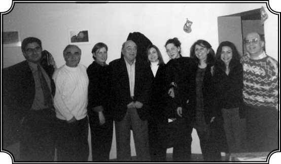
Karpat’ın yanındaki beyaz kazaklı kişi Macgill Üniversitesi İslam Enstitüsü başkanı Profesör Üner Turgay (Montreal 1988).
Üniversite Kanada, Montreal’de değil mi?
Evet. Şimdi Macgill’in önemi nerededir? Macgill’de İslam Etüdleri Enstitüsü, Charles Adams isminde İslam üzerinde önemli çalışmaları olan bir profesör tarafından kurulmuştur. Batı’da dikkatini İslam’a vermiş, Ortadoğu ve İslam üzerine çalışmalar yapan önde gelen üniversitelerden bir tanesidir. Gayet objektif, geniş ve çok parlak, hem Müslüman hem gayri Müslüman düşünürleri ve yazarları toplamış bir yerdir. Öğrencim Üner Turgay da buraya profesör olarak gitti, sonra bu İslam Çalışmaları bölümünün müdürü oldu, geçen sene müdürlüğü bıraktı. Hem bölümün gelişmesine katkısı oldu hem mali yönden kaynaklar buldu. Bilhassa Endonezya ile ilişkileri çok iyiydi. Mesela şimdi yine Amerika’da tanınan ve Harvard’da profesör olan Cemal Kafadar, Macgill Üniversitesi’nde Üner Turgay ile doktorasını yapmıştır. Şimdi biz Türkiye’ye dönelim.
Evet 1968 yılında Türkiye’deyiz.
Ve ben Orta Doğu’da Sosyal İlimler Bölümü’nde “Türkiye’nin Sosyal Yapısı ve Değişimleri” adlı bir ders veriyorum. Fakat 1968’de Türkiye, ideolojik kaynaşmaların, çatışmaların oluştuğu bir ülke haline gelmişti. Deniz Gezmiş, Yusuf Aslan, Hüseyin İnan’ın isimleri var her yerde, bunlar sonradan yakalandılar ve asıldılar. Bir bakıma Orta Doğu da bu ideolojik, politik, militan gelişmelerin bir çeşit merkezi haline gelmiş. Oraya girdikten sonra meselenin ne kadar nazik olduğunu anladım ve açıkçası durumdan kesinlikle memnun olmadım. Sosyal İlimler dersini alanların büyük bir kısmı solcu militan, belki de yarısı normal öğrenci ama militanlar başı çekiyor, üniversiteye onlar hâkim durumda. Ben ise Amerika’dan gelmiş bir hocayım, derslerime gelip giriyorlar ama bir şey söyledikleri yok. Ben tamamı ile objektif ölçüler içinde kalarak anlatıyorum. Bazıları benim daha “ideolojik” olmamı istiyorlar, fakat ben yine bildiğim şekilde her şeyi objektif anlatıyorum. Fazla popüler değilim ama beni anlayanlar da var. Bir gün tanıdığım öğrenci liderlerinden birisine sordum, “görüyorum ki burada sol eğilimli bir sürü adam var, peki ülkücü grup nerede? Onların temsilcilerini de tanımak isterim.” Bana şöyle bir baktı, “bu üniversitede ülkücü barınamaz” dedi. Durumu fevkalade güzel anlatan bir cevaptı, yani solcu olmuş ama kendi görüşlerini paylaşmayan kimseyi oraya sokmuyor, yani ülkücüleri. Ülkücüler hakkında ne düşünürseniz düşününüz ama onların da bir söz hakkı olması gerek benim nazarımda.
Ama onların hâkim olduğu yerde de solcular barınamıyordu, bu yanlışı çift taraflı dile getirmek gerekirdi herhalde.
Aynı şeyi onlar için de söylerim, yani ülkücülerin de hâkim olduğu yerde solculara yer verilmiyor, bu da aynı derecede kötü. Şimdi 1968’de Türkiye’de, düşünce tarihi ve siyaseti bakımından çok önemli bir dönüşüm oldu. Daha 1966-67’de Türkiye’de “Fikir Kulüpleri” diye bazı kurumlar, cemiyetler oluşmuştu. Bu cemiyetler bence çok olumlu bir gelişmenin önderliğini yapıyorlardı. İstanbul’da bir iki toplantılarına gitmiştim, izlemek için. Burada tamamı ile fikir çerçevesi içinde çeşitli fikirler ileri sürülüyor, sağcı solcu vesaire olmak üzere ve karşılıklı olarak bu fikirler dinleniyor, karşılık veriliyordu ve böylece bence çok olgun, olumlu, gerçek manada demokrasiye yol açacak bir ortam gelişiyordu. Fikir Kulüpleri’ndeki bu hava benim de çok yanlı demokrasi anlayışıma uygun düştüğü için olumlu karşılıyordum. Fakat 1968 yılının başlarından sonra yavaş yavaş buraya başka bir düşünce girdi. “Bu iş lafla olmaz. Bu düzen değişmeli!” O zaman düzenin değişmesi ve Türkiye’nin NATO’dan çıkması gibi iki ana fikir ortada dolaşıyordu. “Türkiye düzeni değişecekse bu böyle lafla değil, eylemle olacak” görüşleri ağır basmaya başladı. Ve bildiğiniz gibi 1967’den sonra bilhassa bu militanlık arttı. Fikir Kulüpleri artık fikirlerin tartışıldığı bir yer olmaktan çıktı ve yerini daha fazla eyleme, ideolojik yaklaşıma bıraktı, orası Marksizm’e dönük devrimci gençlerin toplandığı bir yer haline geldi ki bu durum Türkiye’nin başına da bir felaket getirecekti. Çünkü buna karşılık sağda, Aydınlar Ocağı gibi kuruluşlar hemen tepki gösterdi ve şüphesiz ki halkın büyük bir kısmı, açıkça olmasa da duygusal olarak sağı destekliyordu, solu değil. Her ne kadar solun ileri sürdüğü “sosyal adalet, gelişme, sömürüyü kaldırmak” gibi şeyler halkın istediği şeyler olsa da, halkın önemli bir kısmı solu desteklemiyordu. Ama halkın yüzde yüz sağın arkasında olduğunu da kimse söyleyemezdi.
TİP, Dev-Genç
O dönem her yerde geleneksel kalıplar sallanıyordu. Türkiye İşçi Partisi Meclis’e önemli sayıda milletvekili sokmuş, CHP’nin gücü artmaya başlamış, grevler yayılıyor, toprak işgalleri artıyordu. Bir taraftan halka dayanan böyle bir sol, sosyal muhalefet var Türkiye’de, öyle değil mi?
Var bütün bunlar var. Fakat bana göre o kadar da büyük bir halk desteği yoktu. Çünkü burada benim anladığım manada geniş, çok boyutlu bir demokrasiden hareket edilmiyordu. Dar dogmatik bir noktadaydılar, gerek sağ, gerek sol aynı durumdaydı. Sağ iktidarı ele geçirirse, alabildiğine milliyetçi, sağcı, hatta faşist bir rejim getirecekti. Sol ise sınıf esasına dayanan ama özünde aynı şekilde bir rejim getirecekti.
Ama o dönem Türkiye İşçi Partisi’nin sol muhalefetiyle bu eleştirdiğiniz devrimci gençlerin arasında büyük bir fark da vardı.
Şüphesiz büyük bir fark vardı. Bütün bunlar kabul, fakat yine de İşçi Partisi, tamamı ile “demokratik bir partiydi” diyemeyiz. İşçi Partisi’nin kurulması ile hakikaten önemli bir değişiklik oldu. İlk defa ideoloji esasına dayanan, belirli düşünce hattı olan, belirli düzeyde teşkilatlanan, belki de gerçek manada model tipte bir parti kuruluyordu. Partinin başına da Mehmet Ali Aybar geliyor. Ve dediğim gibi Aybar’la benim bir yakınlığım da var.
Hukuk Fakültesi’nde hocanızdı.
Hocamdı, bana kitap tavsiye ediyordu, konuşuyorduk ama hiçbir zaman da propaganda yapmamıştı. Aybar hiçbir zaman doktriner, diktatör olacak bir adam değildi. Onun TİP’in başına geçmesi bir nevi garantiydi ama yine de TİP tam manası ile yani benim anladığım manada geniş boyutlu, her grubun katılımı ile ortaya çıkan bir konsensüse dayanan bir parti değildi. TİP “demokrasiyi tam manasıyla temsil eden bir partidir” diyemezsiniz ve halk bunu bu şekilde algıladı. Parti’nin ilk toplantısına ben de gittim, İstanbul’da bugünkü Cemal Reşit Rey Salonu’nda yapılıyordu. Kimse beni davet etmedi, kimse de beni tanımıyor, ben hep gözlemci rolümü muhafaza ediyorum, katılımcı değilim. Türkiye gerçeklerini anlamak istiyorum. Baktım Cemal Reşit Rey Salonu’nun önünde büyük bir kalabalık var ve işin garibi kalabalığın büyük bir kısmı sıradan adamlar. Birkaç tanesiyle konuştum, birisi bakkalmış, birisi işçiymiş filan, ilginç bir şeydi. Parti dediğim gibi “doktriner bir parti” gibi gözüküyor ama buraya büyük bir halk kitlesi gelmiş, “bu parti ne yapacak?” diye merak ediyor. Demek ki bir yerde partinin savunduğu sosyal adalet, gelişme gibi fikirler, halka hitap ediyor, bu sonucu çıkardım. Orada geziniyorum, durmadan konuşuyorum, tam o sırada parti delegesi olacak kimseler geldiler, lüks arabalardan mantolu, gayet şık hanımlar çıkmaya başladı. İşte benim de arasında bulunduğum gruptakiler baktılar, dediler ki “bizi halen idare edenler zengin, varlıklı ama bizi idare edecek, işçiyi savunacak bunlarsa onlardan daha da zengin daha da lüks şeyler giyerek geliyorlar.” Çünkü o devirde de bir tarafta hakikaten sendikalara dayanan, yani sınıf esasına dayanan bir parti olmakla beraber, elitler de vardı. Sırf ekonomik, sosyal açıdan değil tamamı ile fikir açısından partiyi destekleyen bir elit grubu vardı ve bu Türkiye’nin, bilhassa İstanbul’un zengin diyebileceğimiz, Batılı, dil bilen grubuna mensuptu. Hani Mehmet Ali Aybar da bu sınıfa mensuptu ama demokrattı, fakat halk bunu bu şekilde algılamadı. Oraya gelmeye başlayan bu delegeleri arabayla, kürk mantolarla görünce baktım böyle bir tepki oldu; “yahu bunlar mı bizim hakkımızı koruyacak, arabasını, kürkünü feda edecek mi?” “Etmezler” dediler “bunlarda da iş yok” dediler, yani bunu ben kendi kulaklarımla işittim. “Bunlarda da iş yok” dediler.
Diyenler de olmuştur yani, içlerinden bazıları demiştir...
Evet, hepsi demedi ama bir kısmı böyle dedi ve ayrılmaya başladı. Ve orada ben yine bir tutarsızlığı, Türkiye’nin bir tutarsızlığını gördüm; ya halk anlamıyor, ya Türkiye’yi değiştirmek isteyenler anlamıyor. Nasıl bir değişiklik getireceklerini anlatamıyorlar. Eskiden beri devam eden kopukluk burada da mevcuttu. ODTÜ’ye gelelim tekrar.
Vietnam Savaşı nedeniyle tüm dünyada bir Amerikan aleyhtarlığı havası var. ODTÜ Amerikan desteği ile kurulmuş, oraya gelen Amerikalı hocalara da bir tepki var, çoğu ajan gibi görülüyor. Kommer’in arabası yakılıyor, kürsüler işgal ediliyor filan...
Bunlar var. Bana karşı da bir tepki var ama şiddetli değil, gösterilmiyor. Bu konuda benim herhangi bir itirazım, tenkidim yok. Kimse bana “Sen Amerika’dan geldin, Amerikan propagandası yapıyorsun, Amerikan ajanısın” demedi çünkü gerçekte ben, ne Amerikan propagandası yapıyorum, ne Amerikan ajanıyım. Çünkü Amerika’nın, Türkiye’de olup biteni anlamak için bizzat kendi yetiştirdiği adamları var. Benim o zaman ve bugün de Türkiye’yi savunan, her şeyden evvel Türkiye’nin menfaatlerini öne süren, Türkiye’ye haksızlık yapılarak, birçok yönleri eksik gösterilen tartışmalara, yazılara karşı çıkan bir adam olduğum açıktı. “Sempatizan” diyorlardı bana. Ama ben “Türkiye sempatizanı” idim ve bunu da daima objektif ölçüler içinde yapıyordum, olaylara dayandırarak söylüyordum. Türkiye aleyhinde olanlar ve Türkiye’yi bugün olduğu gibi kötülemek, aşağı düşürmek isteyenler vardı ve açıkça söyleyeyim, bunların arasında Amerika’ya yerleşmiş Türk hocası da vardı ve bunların arasında o zaman ve bugün de objektif olmak adına, Türkiye’yi tenkit etmekte ön safta olanlar var, isimlerini vermek istemiyorum. Bana karşı olanlar ve beni tenkit edenler bunlardı Amerika’da, bu Türklerdi. Ama bunu tamamı ile kendi menfaatleri açısından yapıyorlar, işlerine geliyor çünkü. Oradaki mevkilerini sağlamlaştırmak, sempati toplamak için. Bu yalnız Ermeni konusunda değil, birçok konuda böyledir; Aleviler konusunda olsun, Rumlar konusunda olsun, göçmenler konusunda olsun, Türkiye aleyhinde bir şeyler söylenirse, hemen destekleniyor. Ben ise her söylenenin doğru olmadığını, gerçeklerin görülerek ele alınması gerektiğini, Türkiye’nin de söz sahibi olması gerektiğini çünkü haklı taraflarının bulunduğunu söylüyordum. Böyle olduğu için ben Amerikalıların nezdinde de itibar görüyordum ama kullanılacak, kendi maksatlarına göre yönetilecek bir adam olmadığımı da gösteriyordum. Yani o bakımdan benim ajan olmama, şu olmama bu olmama imkân da yoktu.
“Amerikalıların kendi adamları” dediğiniz kimselerle de tanıştınız herhalde…
Yani dediğim gibi Amerikalı, Amerika’da yetişmiş bir sürü adam da benim gibi, benim meşgul olduğum meseleleri yakından takip ediyorlardı. Mesela bunların arasında tanıdığım George Harris vardır. Hakikaten değerli bir insan. Tezini Demokrat Parti’nin kuruluşu üzerine yapmış, doktorasını almış, fakat asıl sahası “Türkiye’de komünizm.” O’nun Türkiye’de Komünizm’in Doğuşu, Gelişmesi hakkındaki kitabı bence temel kitaplardan birisidir. Harris gayet güzel Türkçe biliyor ve Dışişleri Bakanlığı’nda çalışmıştır, galiba emekli oldu. Bu gibi adamları varken, senin benim gibi onların tam manası ile güvenemeyeceği kişilerle ilişki kuramazlar. Hani kendi yetiştirdiği, güvendiği, yani çekirdekten yetiştirdiği CIA ile FBI ile yetiştirdiği gayet güzel Türkçe bilen, Türkiye’ye çeşitli sıfatlarla gelip giden ve kimsenin ne olduğunu bilmediği düzinelerce adamı var.
Sizin zaten birinin emri altında bir görevi yerine getirdiğinizi düşünmek çok zor…
Özür dilerim burada kendimi methetmek gibi görülse de yine de söyleyeceğim; ben çok üst düzeyde düşünebilen, sentez yapabilen, analiz yapabilen, Batı’da herhangi bir beyinle yarışmaya hazır bir kimseyim ve onlar beni bu şekilde tanıyor. Onun için benim analizlerim de belirli yüksek seviyededir, dediğim gibi ben, hayatım boyunca böyle bir yüksek seviyeye ulaşmak için durmadan çalışmışım. Zengin olmamışım, yüksek mevki sahibi olmamışım ama bir şey elde etmişim: Bir kafa, bir görüş! Ve bunu hiçbir şeyle değişmem. Hani sanatçı vardır bütün ömrü boyunca çalışır, nihayet bir iki eser yaratır; bir bakıma ben de böyleyim, bütün ömrüm boyunca çalışmış, kafamı ve düşüncemi belirli seviyeye çıkarmak istemiş, bir adam olmuşum ama deha olmamışım. Ben daha ziyade kendi kafamı geliştirmek için çalışan ve Türkiye gerçeklerini doğru dürüst anlamak için çabalamış ve çabalamak isteyen bir kişiyim, gayet basit. Ve bundan çok memnunum. O devirde de benimle gelip konuşan insanlar, benimle aynı fikirde olmadıklarını görürler, fakat benim dürüst olduğumu, düşündüğümü söylediğimi de anlarlardı, sağcı da solcu da aynı şeyi görürdü.
ODTÜ’de bu kişiliğinizi yansıttınız ve size inandılar.
İşte bu hava içinde ben Orta Doğu’da ders verdim, saygı da gördüm. Şimdi sizin demin söylediğinize gelelim: Vietnam harbi var, dünya karışıyor ve bunların hepsinin Türkiye üzerinde derin etkileri olmuştur, fakat Türkiye’deki olayları etkileyen, tetikleyen, yaratan ve ortaya çıkaran başka bir şey vardı: Büyük, derin bir sosyal değişim. Bu sosyal değişim nedir? Türkiye’de sınıf farkları vardır yoktur meselesi bir yana bırakılırsa büyük ayırımın kaba hatlarıyla, elitler ve halk ayrımı olduğunu söyleyebiliriz ve coğrafi bakımdan bu, şehir ve köy ayrımına tekabül eder…
Değişimin dinamiği “göç”
Ama şehirlerdeki çatışmalar? İşçilerle patronlar arasındaki mücadele, esnaf ile büyük şirketler arasındaki çatışma?
Şimdi oraya da geleceğiz. Şehirde bu çatışmalar yeni başlamış, bunun kökeni ne? Çünkü şehirliler artık eski şehirliler değil. 1950’lerden başlayarak ve hızı gittikçe artarak köylerden şehirlere büyük akın var, ilk defa Türkiye büyük bir sosyal değişim içinde. Eski, dar anlamda toplum yapısı yıkılıyor, yerine her halk grubunu ihtiva eden yeni gruplar oluşuyor ve bu köyden şehre göç sayesinde oluyor. İstatistiklere bakarsanız 1950’de Türkiye şehir nüfusu yüzde 18 iken 1968’lerde bu oran yüzde 40’lara yaklaşmış. 1960’ların sonlarına doğru istatistikler gösteriyor ki; Ankara, İstanbul, İzmir gibi şehirlerde, nüfusun yüzde 50’den fazlası köylerden yahut da başka yerlerden gelmiş göçmenlerden oluşuyor. Bu yalnız İstanbul’da değil Erzurum’da, bilhassa Adana’da da böyledir. Değişime uğramayan şehir kalmamıştır. İşte bütün bu ideolojik çatışmaları, bu büyük değişmeleri ben bir yerde bu göçlere bağlıyorum.
Önce köylü- kentli çatışması gibi genel bir çatışmayı kastediyorsunuz değil mi?
Türkiye’de değişimler her zaman her yerde büyük çalkantılar, büyük vuruşmalar doğurmuştur. Belirli bir grup yerini, çıkarını ve hâkimiyetini başka gruplara teslim etmek zorunda kaldığı zaman bu kolayca olmuyor. Başka yerde kısmen sulh yoluyla sakin bir şekilde ve demokratik ölçüler içinde gelişen bu değişme, Türkiye’de patlama şeklinde ve çok süratli olmuştur. Köyden şehre geliş başlı başına yetmez, asıl önemli olan o şehre gelip orada doğan bu yeni göçmenlerin oğulları, torunları meselesidir. Çünkü bunlar artık köyde yetiştikten sonra şehre gelip de “Allah razı olsun, doğru dürüst karnımız doyuyor” demiyor. Bu nesil için şehirde yetişmek gayet normal. Normal olmayan gecekonduya sıkışıp kalan adamın, sonuna kadar gecekondu statüsünü kabul edip, fakirlik ve eşitsizlik içinde yaşamasıdır. Sosyal adalet meselesi burada doğuyor. Sosyal adaletin bulunmadığı yerlerden bir tanesi de gecekonduydu. Bu, muazzam bir sosyal değişimdir, işte ben de bu sosyal değişimi görerek bu köyden şehre göçü ve şehirlerde oluşan bu yeni sosyal grupları, bilhassa gecekondularda biriken sosyal grupları incelemenin birinci derecede önemli olduğunu hissettim ve bu meseleyi Mübeccel Kıray Hanım’a anlattım. “Bu çok önemli bir şeydir” dedim “bir inceleme, bir saha araştırması yapalım ve ben bunu yapmaya hazırım. Zaten çoktan beri düşündüğüm bir araştırma, bunu ben yönetir, yaparım.” “Kemal Bey, çok iyi düşünmüşsünüz ben de sizi desteklerim. Bize Ford Vakfı (gene Amerikan), bir miktar para verdi. Siz bu araştırmayı nasıl yapacağınızı bir düşünün, biz bunu bu parayla destekleyebiliriz.” İşte ben de bunun üzerine bir çalışma planı yaptım, yarı yarıya erkek ve kızlardan oluşan on altı kişilik bir araştırma grubu seçtim ki bunların bir kısmı benimle ders almış, beni tanıyan kimselerdi. Böylece bu grupla, 1968 yılının yazında derhal İstanbul’a gelip bugün Hisarüstü olarak bilinen, Emirgan’ın arkasında oluşan gecekondularda yaşayanlarla görüştük, onların sorunlarını çok uzun sorulardan oluşan bir anketle tespit etmeye başladık.
Daha önce bu tarz bir çalışma örneği var mıydı elinizde?
Bir iki tane çalışma vardı ama Türkiye’de o zamana kadar bu çapta bir çalışma yapılmamıştı. Ekibin içinde militan da vardı. Ben de sahada onlarla birlikte çalıştım ve itiraf edeyim ki çeşitli eğilimlerde bulunan bütün bu arkadaşlar fevkalade güzel çalıştılar. Onların başında o zaman Robert Kolej’de okuyan Engin Akarlı vardı. O da Fikir Kulüpleri’nde bulunmuş, solcu olarak tanınan, fakat asla dogmatik olmayan bir adamdı. Bunu neden söylüyorum çünkü Engin Akarlı, bu çalışmanın neticesinde elde edilen bütün evrakları tanzim etti, rakamları düzenledi sıraya koydu, kontrol etti, gelen bütün anket kağıtlarını düzenledi ve bunun için ben onu Amerika’ya davet ettim. Benim üniversitemde mastır yaptı, ondan sonra bir ara belki ben de Madison’dan ayrılırım düşüncesi ile ona Princeton Üniversitesi’nden bir burs sağladım ve Princeton Üniversitesi’nden de doktorasını aldı. Ben ise Madison’da kalmaya devam ettim, Engin Akarlı sonra Türkiye’ye döndü, Boğaziçi Üniversitesi’nde (eski Robert Kolej) hocalık yaptı. Onu attılar çok değerli bir kimse olmasına rağmen. Ürdün’e gitti, bir süre Ürdün’de ders verdi, Arapçasını geliştirdi. Amerika’ya yerleşmesi için mektuplar yazdım, tavsiye ettim ve bugün Profesör Doktor Engin Akarlı, Brown Üniversitesi’nde, ki yine Amerika’da tanınmış bir üniversitedir, kürsü sahibidir ve Amerika’da ve Orta Doğu’da birçok yerde ün salmış, değerli bir bilim adamıdır.
Millileşmenin harcı olarak gecekondu
Hükümet aynı zamanda sebebi olduğu kırdan şehre doğru göçe yol açan bu çözülmeyle gelişen sosyal muhalefeti daha demokrat ve liberal bir tavırla karşılama yerine daha baskıcı bir politikayla ezmeye yöneldi. Bir taraftan ekonomik politikalar bu göçü hızlandırıyor ve teşvik ediyorken, bir taraftan devlet bunu çözme yerine, baskıyı tercih ediyor. Bu tavır sizi, hükümete, Demirel’e yönelik bir eleştiriye götürmedi mi?
Benim eleştirim şuydu: Hükümet ve devlet bu büyük oluşumu, Türkiye’yi kökünden değiştirecek oluşumu anlamadığı gibi, bunun daha olumlu bir yoldan gelişmesine yardım da etmemiştir. O devirde, şehirde gecekondulaşmaya karşı muazzam bir tepki vardı; “şehirler köylüleşiyor, köylü bir sürü adetleri, yaşayış adetleri ile şehre geliyor, eski şehir düzenini bozuyor” gibi çok olumsuz bir tepki vardı. Ne yapalım? “Gecekonduları yıkalım, göçü önleyelim!” Ama nasıl önleyeceksin, neyle önleyeceksin, bu konuda bir politika yoktu. Böylece göçler devam etti. Şüphesiz ki bu göçlerin bazı olumsuz neticeleri olmakla beraber, bence olumlu yönleri çok daha ağır bastı. Her şeyden evvel göçler Türkiye’de o tarihlere kadar pek görülmemiş sosyal ve kültürel bir yaşam bütünleşmesi ortaya çıkardı. İlk defa bu göçler sayesinde şehirler halk kültürünü de almaya, günlük yaşamında bunların etkisinde kalarak, daha bütünlüklü, daha ulusal bir yön kazanmaya başladı. Bunu çeşitli şekilde görmek mümkündür. Mesela eskiden en basit misaliyle bölgesel olan yemekler, bu defa şehirlerde de tanındı, lahmacun gibi basit yemekler ya da bir bölgenin mutfağı, bu defa şehirlerde boy gösterdi. Bu göçmenler arasından çıkan şarkıcılar, kendi bölgelerindeki şarkıları daha üst düzeyden tekrar ele alarak, genelleştirdi ve gerek bu şarkıcılar, gerek onların şarkıları, dansları vesairesi Türkiye’nin artık milli kültürü haline geldi.
Siyasi partilerin değişmesine de yol açtı tabii ki…
Eskiden çok daha dar çerçeveler içinde kalan şehir kültürü bu defa “millileşti, bütünleşti.” “Şehirler köyleşti” iddiasında bulunanlar, şunun farkına varmıyorlardı: Eskiden şehirlere hâkim olan Batıcılık ve Batılı olma çabasının yerini bu defa, Batı’nın teknolojisini, ilmini alan millileşme aldı. Bu şehirlere gelen gecekonducuların çocukları okullarda okudu, üniversite okudu, meslek sahibi oldu ama bunların ötesinde partilerin de, gerek programlarında, gerek bünyelerinde büyük değişiklikler olmaya başladı. Mesela Halk Partisi bu defa halka inmek için programında değişiklikler yaptı ve sonradan parçalandı. Bütün bunların arkasında oylarıyla Türkiye’nin mukadderatına katkıda bulunan bu yeni toplulukların, yani bu gecekonduların tesirini görmek mümkündür. Gecekondulardan yeni liderler çıkmaya başladı. Evet, militanların bir kısmı gecekondudandır ama parti içinde, devlet içinde yer etmiş bazı kimseler de yine bu fakir gecekondudan gelmiş kimselerdir. Eminim, araştırılırsa görülür, Türkiye’nin son yirmi senede sivrilmiş, yükselmiş bazı devlet adamları, liderleri gecekondulardan çıkmıştır yahut da bu göçmenler arasından çıkmıştır. Recep Tayyip Erdoğan Bey mesela, misal göstermek belki doğru değil ama o da Kasımpaşalı, Karadeniz Bölgesi’nden gelmiş böyle bir ailenin çocuğudur. Bunun gibi yüzlerce misal vermek mümkündür. Türkiye kültür bakımından, yaşam bakımından homojenleşmiş ve modernleşmenin bir şartı olarak homojenleşme, hem kültür, hem siyaset, hem de yaşam bakımından bütünleşme şeklinde meydana gelmiştir. Türkiye böylece tarihinde ilk defa tüm halkını temsil etme yoluna girmiş oluyordu. Çünkü bu insanlar da fiilen siyasete karışıyor, oyları sayesinde hükümeti, devleti şu veya bu yönden yönlendirme imkânını bulmuş oluyorlardı. Bakınız bugün Türkiye’de yazar olarak bilinen bazı kimseler gecekondulardan çıkmıştır. Bilhassa kadınlar arasında bunu, benim okuduğum birçok kitapta, romanda görmek mümkündür. İşte bu görüşlerden hareket ederek, ben bu çalışmayı yürüttüm ve herkesten fazla, bu çalışmadan ben faydalandım, çünkü yeni bilgiler edindiğim gibi toplumu daha yakından tanıma imkânını buldum. Nihayet bütün bu çalışmaların neticesinde İngilizce olarak 1976 yılında The Gecekondu Rural Emigration in Urbanization diye bir kitap yayınladım. Bu kitap 1968’deki bu çalışmaları kapsayan bir kitaptır ve ne yazık ki o zaman bu kitabı kimse önemsemedi Türkiye’de. Batı’da ise büyük bir ilgi uyandırdı. Bu arada benim Türk Demokrasi Tarihi kitabı da çıktı. O kitap da hiç rağbet görmedi. O kadar rağbet görmedi ki bu kitabın dağıtımını yapacak firma nihayet bana dedi ki, “Kemal Bey kitap satılmıyor, geri alın.” Kitapları aldım ve apartmanın bir odasına yığdım, dört bin kitap basılmıştı ve o zamanki parayla 7 Liraya mı ne satılıyordu. İki sene, üç sene odamda kalan 1967’de çıkan bu kitabı işportacılara 25 kuruşa sattım ve böyle kurtuldum bir daha da Türkiye’de kitap yayınlamaya tövbe ettim. Gecekondu kitabı da ancak bundan iki-üç yıl evvel tercüme edildi. Bu araştırmanın neticelerini bugün Türkiye’de Toplumsal Dönüşüm adıyla yayınlanmış çalışmada görmek mümkündür, İmge Kitabevi bunu bastı, fakat bir önemli nokta var ki bu çalışma yayınlandıktan otuz beş sene sonra Türkçeye çevrilmiştir.
Yani bu gecekondu çalışmasını 1970’lerde basmamanızın sebebi, öbür kitabınızın hiç ilgi görmemesi mi?
Görmemesi. Ondan sonra bunu çevirip de, basmak isteyen kimse de çıkmadı.
Anket çalışmalarını Türkçe yaptınız ama kitabı Amerika’da İngilizce olarak mı yazdınız?
Amerika’da yazdım. Çünkü bunu Türkiye’nin o şartları içinde yazıp meydana getirmeye pek de imkân yoktu, ne maddi bakımdan, ne de okuyucu bakımından. Kimse bu gibi şeylerle ilgilenmiyordu.
Osmanlı’dan doğan Türkiye
Siz de aslen daha sonra da görüleceği gibi Osmanlı’nın Türkiye Cumhuriyeti’ne nasıl dönüştüğü ile ilgileniyorsunuz?
Evet. Çünkü daha 1950’lerin sonuna doğru bende uyanan ana fikir şuydu: Türkiye Cumhuriyeti’nin doğuşu ve gelişmesi, resmi görüşü kitapların anlattığı gibi değildir. Türkiye Cumhuriyeti’ne yol açan gelişme, Osmanlı Devleti’nde 19. yüzyıldaki gelişmelerle başlamış, yavaş yavaş şekil değiştirerek Osmanlı milleti, Türk milleti haline gelmiştir. Ondan sonra 20. yüzyılın başında oluşan bu Türk milleti, Cumhuriyeti doğurmuştur ve gelişme devam etmiştir. Ancak burada en önemli noktalardan bir tanesi, millet tarifi. Millet nedir? Burada da benim görüşüm, Cumhuriyet tarihini anlatan kitapların görüşünden bir hayli farklıydı. Bence Türkiye’de millet, Osmanlı’daki millet oluşumunun değişik bir devamıdır. Bu, ırk üzerine dayanan bir millet değil, bir arada ortaklaşa yaşayan çeşitli etnik kökenlere sahip, çeşitli Müslüman grupların oluşturduğu yeni toplumdur ki bu yeni toplum 19. yüzyılda göçler sayesinde, devlet politikasıyla, Abdülhamid Pan-İslamizm’i ile yeni şekillere bürünerek, kendine mahsus yeni tipte bir modern millet yaratmıştır. “Biz Orta Asya’dan geldik” fikrine de karşı değil, ama o fikri yepyeni ölçüler içinde ele alarak anlatan bir yaklaşım var burada. Evet, Türkler Orta Asya’dan gelmiştir, fakat durmadan değişerek Selçuk Devleti’ni, sonra da Osmanlı’yı yaratmıştır ama bu gelişme sadece ırk temeli üzerine olmamıştır. Ortak kültüre dayanan, ortak yaşam şekillerine, ortak psikolojiye dayanan, yeni tipte, Batı’nın bilmediği bir millet tipi ortaya çıkmıştır ve bu milleti, bu şekilde ele almak lazımdır. İlla Türk milletini, bir Fransız milletine şuna buna benzetmek için bir sürü politikalar gütmek yerine, her şeyden evvel tarihi gelişimi inceleyerek, kendine mahsus bir psikolojisi ve tarihi olan bu milleti, çok boyutlu, çok çeşitli etnik grupları kapsayan milleti anlamak lazım.
Din ortaklığı burada nasıl bir önem kazanıyor?
Bu milletin kökünde din ortaklığı önemlidir ama ben hiçbir zaman bu milleti tamamı ile İslam’a dayandırmıyorum. İslam da önemlidir, fakat bu İslam da Anadolu ve Rumeli şartlarında gelişmiş ve kendine mahsus bir din anlayışı doğurmuştur. Kısmen de olsa bu din anlayışının Osmanlı’ya ve Türklere mahsus bir şekil almasında, Osmanlı Devleti’nin siyasi felsefesinin ve siyasi uygulamalarının da önemi büyüktür. Çünkü Osmanlı Devleti aynı zamanda bir siyasi kültür yaratmıştır. Anadolu ve Rumeli’de yaşayanlar, aynı zamanda bu siyasi kültürün etkisi altında, yani laik olan siyasi kültürün etkisi altında kalarak din, dil gibi unsurların oluşmasında, yeni tipte bir millet yaratıyor. Bu millete biz “Türk” ismi vermişiz ve ondan sonra da bu Türk milletini ırka bağlamak istemişiz. Orta Asya kökenli falan bir gelişme çizgisi çekmişiz. Bunları ben sonradan inceledim ve yayınladığım kitaplarda da belirttim. Bu millet, Kürdünü de, Boşnağını da, Pomağını da, Lazını da, hepsini içine alabiliyor ve bir arada barış içinde yaşatabiliyor, yani bir yerde bir kişi Türk oluyor ama diğer tarafta da Laz oluyor, Lazca konuşabiliyor. Kürt oluyor, Kürtçe de konuşmakta devam edebiliyor, birçok geleneğini de muhafaza edebiliyor. Bunların arasında eğer millet kavramı, bu tarihi geçmiş çerçeveleri içinde, sosyal değişim içinde ve göçlerin etkisi içinde ele alınırsa o zaman Türkiye’de meydana gelen milletin niteliği çok daha iyi anlaşılmış olur. Her zaman yaptığım gibi ben bu gelişmeleri, bu toprakların kendi halkının kültürü, tarihi, geçmişi ve psikolojisi içinde ele almak gerektiğini savunuyorum ve o şekilde ele alıp tanıtıyorum.
Şimdi dediğiniz gibi Osmanlı’dan devralınan ve Modern Türkiye Cumhuriyeti’ni oluşturan topluluklar arasında Kürtler de var. Fakat tam modern Türkiye’nin kuruluşunda, 1925’lerden başlayarak, ayaklanmalar oldu, Şeyh Sait, Dersim gibi. Türk Milleti tanımlaması içerisinde dinamikleri incelerken, bu Kürt meselesini tam olarak nereye koyuyorsunuz Modern Türkiye’nin oluşumunda?
Ben Kürt meselesini bir kere bu benim genel tanımım içine koyuyorum, yani “Kürt de, Boşnak da ve bu arada Türk de değişerek, bu yeni oluşmakta olan milletin bir parçası olmuşlardır” diyorum ve buna biraz da kestirmeden misal vermek gerekirse, Amerika’yı gösterebiliriz. Çünkü Amerikan toplumu da bildiğiniz gibi her çeşit ırktan, dilden, dinden kaynaklanan gruplardan oluşan ama bunların üstünde bir Amerikan kimliği yaratan bir toplumdur. Amerikan toplumunun içinde kendisini hâlâ Alman ya da kültürel olarak kısmen Fransız gören yerler var. Mesela Amerika’da Louisiana’da Kajunlar hâlâ Fransızca konuşur çünkü Louisiana halkının bir kısmı dil ve köken olarak kendilerini Fransa’ya bağlıyor. Zaten burası Kanada’dan gelen Fransız bir grup tarafından iskân edilmişti. Mesela Wisconsin’a gittiğim zaman hâlâ bazı yerlerde Almanca konuşuluyordu, Almanca gazeteler yayınlanıyordu. Sonra bu gazeteler artık çıkmaz oldu, çünkü halk bu gazeteleri bıraktı. Yirmi beş-otuz sene içinde oluştu bunlar. Bunlar Amerikalılaştı ama nasıl bir Amerikalı? Önceden tarifi çizilmiş bir Amerikalıdan ziyade, durmadan oluşmakta devam eden bir toplumun içinde organik olarak yer alarak değiştiler. Kendini Amerikalı sayarken, eski benliğini ve kimliğini de muhafaza ederek, yeni kimliğini oluşturduğunu kabul ediyor. Bu Kürtler için de varittir.
Ben Kürtlerin dilini muhafaza etmesini, her şeyini kabul ediyorum. Çünkü herkes bunu muhafaza ediyor, bildiği dili konuşuyor, geleneğini sürdürüyor. Bu gerçeğin yanında bir de şu vardır ki bir yerde de ideolojik açıdan hareket ederek, tarihi, dili ve Kürt geçmişini belirli şekilde yorumlayarak, buradan bir Kürt milleti ve Kürt devleti fikri de çıkarmak mümkündür. Nitekim gördüğümüz budur ama bu bir dereceye kadar tepeden inme, ideolojik zorlamalarla oluyor. Çünkü her şeyden evvel “Kürt” dediğimiz ve bugün Kürt milliyetçilerinin bir millet olarak görmek istedikleri kitle, en azından beş büyük gruba ayrılmıştır. Bunların içinde ekseriyet Sünni, fakat bunun içinde Alevi de vardır ve bildiğiniz gibi Alevi olanlar 16. yüzyılda Kürt aşiret beylerinin yanına sığınmış Alevilerdir. Onlar dilini kaybetmiş, Kürtleşmiş ama diğer taraftan başka gruplar da Türkleşmiş, bu olağan bir şeydir, fevkaladeliği yoktur. Şimdi siz “ideal olan, her büyük kitlenin bir milli devlet kurmasıdır” derseniz o zaman bütün Kürtleri tepeden inme bir şekilde tek millet olarak görmeniz ve devlet kurma hakları olduğunu kabul etmeniz normaldir. Ama Kürtlerin de başkaları gibi daha büyük, çok kültürlü, çok dilli, çok dinli bir kitle içinde, yani Osmanlı Devleti içinde geliştiğini düşünürseniz o zaman Kürtlerin, Türk milletinden ayrı bir yeri olmadığı neticesine varırsınız. Şimdi Kürt devleti fikrini en kuvvetli, en aktif bir şekilde savunanlar Türkiye’dedir. Bugün Amerikalıların ve İsraillilerin tesiri ile evet, Kuzey Irak’ta bir Kürt Bölgesi vardır ama unutmamak gerekir ki bugün o “Kürt Bölgesi” dediğimiz yerin iki efendisi vardır. Bir Talabani, sözde sosyalist Talabani, bir Barzani ve bunlar on sene evvel, on beş sene evvel…
Savaşıyorlardı.
Savaştılar. Eğer böyle bir millet fikri varsa, burada bir savaş olmayacaktı ama işin ilginç tarafı şudur: Orada bir Kürt toplumu ortaya çıkmakla beraber, bir Kürt devleti ve millet ideolojisi ve felsefesi oluşmamıştır. Onun ideolojisi ve felsefesi Türkiye’de oluşuyor. İşin en garip tarafı budur. Ve şu da muhakkaktır ki bu, bir yerde Fikir Kulüpleri tartışmalarıyla başlamış, sonra TİP’te oluşmuştur. TİP buraya, dolayısı ile destek olmuştur. Biz bir yerde Türkler olarak, kendini klasik manada Türk sayanlar olarak, gene milli devlet fikrinden hareketle Türk-Kürt ayırımı yapabiliyoruz ama biz bu milli fikirden uzaklaşarak, daha geniş tarihsel, kültürel, yaşam şekilleri itibariyle milleti ele alırsak o zaman Kürt-Türk ayırımı olmaz. Eğer bazılarının söylediği gibi bugünkü Türkiye’ye, Türkiye değil de başka bir isim verilseydi, belki o şekilde şeyler olmazdı. Ama diğer taraftan siyasi bakımdan da Türklerin bir yerde kendilerini ifade etmeleri ve dünya gelişimi içinde bu şekilde ortaya çıkmaları da mukadderdi. Atatürk’ün bir sözü vardır: “İlk defa tarihte Türk milleti kendi adını taşıyan bir devleti kurmaya karar vermiştir.” Bir yerde şunu kabul etmek lazımdır ki 19. yüzyılın ikinci yarısı ve 20. yüzyıl milli devletler sürecidir ve herkesin etkilendiği bu süreçten en çok etkilenen de Müslümanlar olmuştur. 19. yüzyılın başlarına kadar ümmet olarak görülen, yani ırk, dil, etnik fark gözetmeyen…
Salt dini bir topluluk gibi görünen.
Dini topluluk gibi görünen Müslümanlar bugün elliye yakın devlet oluşturmuş ve bunların hepsi, dinden ziyade, etnik köken üzerine kurulmuştur. Yani bugün Arap olmasına rağmen “Ürdün” diyor, “Mısır”, “Suriye” diyor…
“Yemen” diyor.
“Yemen” diyor. Bunların hepsi bir yerde “Biz Arabız” diyor, fakat Nasır’ın bütün bunları bir araya toplamak isteyen Pan-Arabizm cereyanına karşı direnmişler, nihayet çok az ayakta kalabilen Birleşik Arap Devletleri; Suriye, Mısır ve sonra Yemen olarak dağılıvermiş. Demek ki bu süreçte, bu milli devlet süreci de yaşanacaktı.
Romanya’da bir Türk olarak Dobruca’nın Rumenleştirilmesi, Deliorman’ın bir kısmının Bulgarlaştırılması, sonra tekrar Rumenleştirilmesi, Moldova’nın Slavlaştırılması gibi süreçleri yaşadınız. Hep bu azınlıklara karşı, oradaki farklı etnik veya dini kökenli insanlara karşı bir baskı politikası uygulandı, onlar yerlerinden alındı, başkaları yerleştirildi. Benzer durum burada...
Ama ben size daha evvel söyledim şimdi burada büyük bir fark var. Benim doğduğum büyüdüğüm Dobruca alındığı zaman, yüzde 65’i Türk’tü ve Müslüman’dı ve bu sonuna kadar devam etti. Biz birçok bakımdan ezildik, haklarımızdan mahrum olduk ama biz hiçbir zaman kalkıp da “efendim bu topraklar Türk’tür, bize otonomi verilsin” demedik. Evet, orada da bir Rumenleştirme vardı, bizi bir Rumen gibi düşünmeye, Rumen gibi hissetmeye zorladılar. “Bizim vatanımız, bizim ordumuz” diye milli Rumen tezine uygun yetiştirme çabaları olmuştur. Biz onları protesto edemiyorduk, bu haklarımız falan yoktu ve bizi bu şekilde yetiştirmeye de hakları olmadığını söylüyorum şimdi. Herhangi bir grubu dininden, dilinden mahrum ederek başka ölçülere göre, evvelden çizilmiş bir portreyi oluşturacak bir şekilde meydana getirmeye, yetiştirmeye kimsenin hakkı yoktur. Osmanlı da buydu, Osmanlı’da hiçbir zaman “şunun dilini değiştirmek, bunun dinini değiştirmek” diye bir şey olmamıştır, bir arada yaşanmıştır. Bu daima mümkündür ama bir yerde, bir grup çıkıp da “efendim ben ayrıyım, ayrı devlet olmak istiyorum” derse o zaman durum da değişebilir. Böyle olmaması gerekir belki, fakat hâlâ milli devlet çerçeveleri içinde yaşıyoruz. Eğer milli devleti içine alacak, onun içinde ezilecek kimseleri koruyacak bir başka kuruluş olursa, bu durum belki değişir. Bu konuların bugün tartışılmasının ana nedenlerinden bir tanesi de globalleşmedir. Çünkü globalleşme bir yerde bu milli devlet fikrini karşısına alıyor ve her milli devlet içinde yaşayan çeşitli azınlıklara da söz hakkı, ifade hakkı, siyasi hak falan verme yoluna gidiyor ama devlet kurma hakkı tanımıyor. Bu yalnız Türkiye’de olmuyor. Fransa’da da çok sene evvel Oksitanlar vardı, onların kendi dilleri vardır, o dillerini tekrar yaşatmak fikri vardır. Bu İspanya’da da mevcuttur, bu nihayet globalleşmenin getirdiği bir şeydir ama bence bu herkesi memnun edecek şekilde halledilecektir.
En önemli mesele Türkiye Cumhuriyeti’nin, milletinin ortaya çıkışıydı diyorsunuz ve o dönemde bunu bir modernleşme sorunu olarak görüyorsunuz?
Aslında Osmanlı tarihinin son dönemlerinde ve Türkiye’de hâkim olmuş en dinamik fikir modernleşmeydi. Türkiye’yi başka Müslüman devletlerden ayıran bu şaşmaz modernleşme çizgisidir. Ve bu durum herkesi, Osmanlı sınırları içinde yaşayan tüm Müslümanları Türk, Arap hepsini etkilemiştir ama en büyük etkisini Anadolu’da Türkçe konuşan kitlenin üzerinde göstermiştir. Böylece modernleşme, toplumun entelektüel grubunun ana amacı olmuştur. Millileşme, milli devlet bu modernleşmenin bir aracı olarak görülmüştür. Bazıları milliliği bir araç olarak göstermişlerse de bence millilik, modernleşmenin yardımcısı olarak gelmiş, fakat zaman zaman bilhassa “Tek Parti” devrinde öne çıkmıştır. Burada bir de, bilhassa Atatürk’ün ölümünden sonra Atatürk’ün sahip olduğu kuvvetli halk desteğinden mahrum olan Halk Partisi’nin modernleşmeye milli, ideolojik bir yön vererek kendini sağlamlaştırmasının etkisini de görmek gerek. O devirdeki gelişmelere bakarsanız, 1940’larda adeta Turancılığa, ırkçılığa giden bir Türk milliyetçiliği vardır, çok acıdır ama vardır. Burada bir dereceye kadar Almanya’nın Rusya’daki ilerlemesinin, artık Sovyetler’in çökeceği fikrinin yerleşmesinin etkileri vardır. O dönemde Sovyetler’in çöküşünden sonra Kırım’da, Orta Asya’da Türk devletlerinin müstakil olacağı beklentileri vardı. Kırım milliyetçiliğini güden bazı kimseler, gidip Hitler’le görüşmüşlerdir, “Ne olacak bizim halimiz ?” diye. Hakikaten o zaman Türkiye’de ırkçılık, Turancılık gelişmiştir ve bunun neticesinde de her zaman olduğu gibi hükümet de etkilenerek çok daha ırkçı, çok daha milliyetçi, çok daha anti-Kürtçü bir siyaset gütmüştür. Vardır bu durum ve 1950’lere kadar devam etmiştir. Demokrasinin yerleşmesi ile bu mesele ortaya atılmış, tartışılmış ve bugün de bu noktaya gelinmiştir. Bir tartışma noktasındayız biz. Halen de ordayız. Ben de “tartışalım” diyorum meseleleri ama bunu gerek Türk, gerek Kürt olarak tek bir açıdan ele alarak tartışırsak, ortak taraflarımızı unutursak, birçok benzerliklerimizi bir yana atarak “Benim Kürtçülüğüm hâkimdir, benim Türkçülüğüm hâkimdir” dersek o zaman bir sonuca ulaşamayız. Benim fikrim budur; bu mesele iki tarafın hoşgörüsüyle, anlayışı ile bir barış çerçevesi içinde (tamamiyle herkesi tatmin edecek bir çözüme ulaşılmasa da) önemli bir kitleyi memnun edecek bir çözüme ulaşılabilir diyorum. Benim tarafsız kalma kaygısı ile söyleyebileceğim bu konu da budur. Tartışılsın, ele alınsın, görüşülsün. Çünkü Türkiye dağılırsa, bir Kürt devleti uzun müddet yaşamaz, yaşayamaz. Ne bir Arap devleti kalır, ne bu Kürtler kalır. Bu topraklar bambaşka şekil alır, Türkiye’nin ayakta kalması, kuvvetli olması, birçok bakımdan uzun vadede Kürtler için de, Araplar için de bir sigorta, bir emniyet kilididir ve öyle görülmesi lazım. Hani burada ben başka düşünceleri de hesaba katıyorum, tabii Batı’yı tanıdığım için orada oluşan düşünceleri takip ediyorum. Unutmayınız Amerika’da Hıristiyanlığın şahlanması var ve bu şahlanma yalnız ve yalnız kültür ve din alanında değil, siyaset alanında da ileri gidecektir. Bir bakıma Irak’ın işgali bunun neticesidir, yani meseleleri biraz, daha büyük boyutlarda geleneksel bazı ölçülere vurarak ele almamız gerekiyor.
George Bush’un arkasındaki Hıristiyan destekten söz ediyorsunuz…
Tabii Bush’un dayandığı “Evangelist” denilen muazzam bir grup var. Şükür ki seçimleri kaybetti şimdi. Bu kayıp, şahlanmayı bir dereceye kadar susturdu ama bunlar (2006 Ekim-Kasım) ara seçimdi, asıl 2008’deki seçim mühimdir. O zamana kadar bu Neoconlar, Evangelistler vesaireler gene örgütlenerek güç kazanabilirler. Hani biraz da bu meseleleri dünya haritasına bakarak ve orada ne olduğunu görerek dile getirmemiz lazım. Bir yerde Türk’ün ve Kürt’ün mutluluğu onların bir arada yaşamasıdır, başlarındaki felaketleri de bir arada yaşayarak paylaşabilirler, bunu unutmamak lazım. Ben diyorum “mutlulukta da beraber olalım, felaketleri göğüslemede de yine beraber olalım. Çünkü ancak bu şekilde bir kültür olarak, bir varlık olarak mevcudiyetimiz, yaşamamız mümkündür.” Buna da “Amin” diyelim.
Ortadoğu Araştırmaları Cemiyeti
Evet, şimdi tekrar zaman akışında kaldığımız yere dönelim. 1968 yılında Türkiye’desiniz. Orta Doğu Teknik Üniversitesi’nde görevlisiniz. Gecekonduları incelediniz. Sonra?
O yıl, yani 1968 yılında ben Türkiye’ye gelmezden takriben bir sene evvel, (unuttum söylemeyi) bir sömestr de Johns Hopkins Üniversitesi’nin Uluslararası İlişkiler Okulu’nda “Türkiye Siyasi Partileri” üzerine bir ders vermiştim. Sabahleyin New York’tan otobüse biner, on iki civarında Washington DC’ye ulaşır, bir ile üç arasında dersimi verir, üçte tekrar otobüse biner, New York’a dönerdim. Tabii New York’ta vazife de devam ediyor. O tecrübe de çok iyi oldu, yalnız Johns Hopkins Üniversitesi’ni tanımak.la kalmadım, aynı zamanda Türkiye’nin önemini anlattım, zaten artık herkes beni bir uzman olarak görüyor. Johns Hopkins Üniversitesi’nin Uluslararası İlişkiler Okulu Amerika’nın en önde gelen uluslararası okuludur.
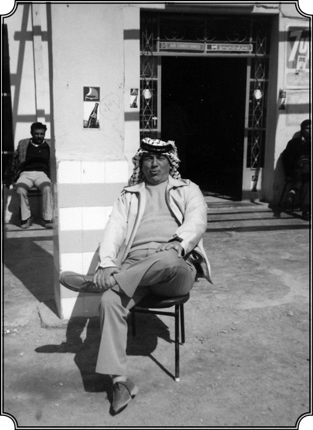
Ürdün’de “Ürdün’e Yerleştirilmiş Çerkezler” konusunda konferans verdi (1980).
Aynı sene, daha doğrusu bir sene sonra 1968’de benim, Arap ülkelerinde (birkaç sene evvel) yaptığım araştırma Günümüz Ortadoğu’sunda Siyasi ve Sosyal Düşünce adıyla (İngilizce olarak) çıktı. Ben bu kitaba çok emek verdim, çünkü bu kitap yalnız Arap ülkelerinde İran’da ve Türkiye’deki yazarların kaleminden çıkmış yazıları almakla kalmıyor, aynı zamanda yazısını aldığım devlet adamı, düşünürlerin hayatı ve o ülkenin tarihini de veriyor.
Almanak gibi yani.
Bir “almanak” ve tarihçe, bunun için çok çalıştım. Bir de bibliyografya vardı sonunda. Benim için çok faydalı oldu ve daha evvel belirttiğim gibi ders kitabı olarak okutuldu. 1982’de tekrar basıldı, sonra tekrar basmak istediler fakat vaktim olmadığı için vazgeçtim. Ama şunu da belirteyim, daha ben New York Üniversitesi’ndeyken bu kitaplarla meşgul olan arkadaş, benden Amerikan liselerinde, ortaokullarında okutulacak, kısa bir Ortadoğu kitabı istemişti. Ben o kitabı, dört veya beş hafta sonu evde oturarak hazırladım, artık bildiğim şeylerdi çünkü. Nispeten küçük bir kitap (yüz elli sayfaya yakın) olmakla beraber çok satıldı. Tabii ki oradan da yüzde bakımından yahut da çalışma bakımından hayatımda aldığım en iyi parayı aldım, çok iyi hatırlıyorum 5000 dolar peşin para verdiler. Dört, beş hafta sonu çalışma karşılığı çok iyi para. O para da çok iyi geldi çünkü ev yaptırmıştım Quogue’ta, banka borcum vardı. İşte borcun bir kısmını onunla kapattım ve ilk defa yazarlığın bu şekilde…
Nimetlerinden yararlandınız.
Evet. Bu kitap daha evvel anlattığım gibi Ermeni Haigh Babian sayesinde yazılmış ve pazarlanmıştı. Tabii yazarlıkta da en fazla para ders kitaplarından geliyor. Ders kitabı ise çok basit, genel bir şey, yazılması kolay fakat beni tatmin etmediği için yazmıyordum. Benim için mühim olan araştırmaydı, derine inmek, yeni bir şeyler bulmak. İşte bu şekilde çalışmalarımız devam ederken, gerek benim hayatımda olsun, gerek meslek itibarı açısından olsun, çok önemli bir dönüm noktası Ortadoğu Araştırmaları Cemiyeti’nin kurulması oldu. Bugün dünya çapında olan Ortadoğu Araştırmaları Cemiyeti, aşağı yukarı büyük kısmı profesör, araştırmacı ve Ortadoğu uzmanlarından oluşan bir topluluktur. Her memleketten gelen üyelerin sayısı durmadan değişiyor fakat dört bin ile beş bin arasıdır ve her sene toplantısı olur. Bu sene (2006) toplantı Boston’daydı. Ben de katılacaktım fakat bu çalışmam nedeniyle vazgeçtim, ayın 18’indeydi (Kasım), önceki gün. Şimdi bunu neden söylüyorum, Ortadoğu ve Türkiye konularında ve Osmanlı konularında, İslam konularında, yani bizi ilgilendirecek tüm çalışmaların mihveri, özeği bu kuruluştur. Her sene toplanan kongresinde tebliğler sunulur, yeni araştırmalar, yeni buluşlar oraya getirilir, tartışılır. Mesela bu sene üç yüz civarında tebliğ vardı. İşte bu kuruluşun temeli 1966 ve bilhassa 1967’de New York’ta atıldı ve kurucuları arasında ben de vardım. İlk sene üye sayısı üç yüzün üzerine çıkmadı, sonra gittikçe arttı. 1971-72 senesinde ben İdari Kurul’a seçildim ve nihayet 1972 senesinde bu Ortadoğu Araştırmaları Cemiyeti’nin (MESA) Başkanı oldum. Hem de karşımda rakip olarak eski bir Amerikan diplomatı olan Richard Nolte varken. Ona karşı üyeler beni seçtiler, çünkü gerek bu kuruluşun ortaya çıkmasında gerekse yeni yönlere doğru gitmesinde ben aktiftim. Kuruluşu tamamı ile Batı görüşünü, Amerikan görüşünü aksettirecek bir şekilde çalıştırmak isteyenler vardı. Onların karşısında, yerel diyebileceğimiz bölgelerin görüşlerini, Türklerin, Arapların, Müslümanların görüşlerini savunan bir grup vardı. İşte bir bakıma o grubun önderliğini ben yapıyordum, biz üstün geldik ve ben seçildim. Çünkü birçok Amerikalı arkadaş da beni destekliyordu. Böyle uluslararası ilmi alanda görev almış bir cemiyetin ilk Türk başkanı ben oldum, yanlış bilmiyorsam. Fakat bu kuruluşun içinde çok sayıda Arap ve Arap taraftarı Amerikalı olduğu için benim savunduğum “Osmanlı ve Türk Etütleri’ne daha büyük yer verilmesi” teklifi pek dikkate alınmıyordu.
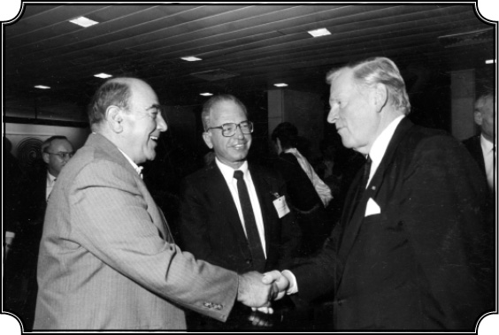
İsrail’de “Osmanlı Tarihi ve Ortadoğu” konulu konferanstan sonra. Gözlüklü olan Osmanlı Tarihi Uzmanı Profesör Cohen.
Arap çoğunluğun karşı çıkması nedeniyle mi?
Tabii Arap ülkeleri çok daha kalabalık olduğu ve Arap ülkelerinden gelen öğrenci ve hoca sayısı çok yüksek olduğu için onların ağırlığı hissediliyordu. Halen de öyledir, her ne kadar “Osmanlı ve Modern Türkiye”yi konu olarak seçen arkadaşların sayısı ve kalitesi çok artmışsa da Araplar çok üstündür hâlâ. Bir bakıma sosyal ilime daha yatkındır onlar. Fakat bu Ortadoğu Araştırmaları Cemiyeti’nin yavaş yavaş bir iç bölünmeye doğru gittiğini de görmek mümkündür. Cemiyet bütünüyle aynı kalıyor fakat cemiyetin yanında ve onunla bağı olan “afiliasyon” (affiliation) dedikleri cemiyetler kuruluyor. Arap Etütleri, İran Etütleri, Ermeni Etütleri gibi. Oldukça faal bir Ermeni Etütleri kolu vardı. Onlar da ana cemiyetin üyesi ama ayrıca kendi başlarına da bir Ermeni Etütleri Cemiyeti’ni kurmuşlardı. Arapların da var, bunun gibi gene “MESA” dediğimiz Ortadoğu Cemiyeti’ne bağlı on beş, yirmi cemiyet var. İşte bu defa Türk ve Osmanlı Etütleri’ni yürütecek bir cemiyetin kurulmasını lüzumlu gördüm, birkaç arkadaşla görüşüp nihayet 1972 yılında bu Türk Etütleri Cemiyeti’ni kurduk ve ben onun ilk başkanı oldum. Üç sene başkan olarak kaldım, bugün dört yüze yakın üyesiyle Amerika’da ağırlığı olan, önemli bir cemiyettir. Tamamı ile Türk ve Osmanlı Etütleri’ni yürüten, yayan ve Türkiye’yi en iyi şekilde tanıtan bir cemiyettir. “Türkiye” dediğimiz zaman Osmanlı da bunun içine giriyor. Amerika’da ayrım yapılmıyor, “Türkiye” deniyor ve Osmanlı’yı da kapsıyor. İşte bunun için de her sene ödül veren özel gruplar var. Mesela Halide Edip Adıvar Ödülü her sene en iyi yazıyı hazırlamış kişiye veriliyor. Ondan sonra Ömer Lütfü Barkan Ödülü var. Hemen bu konuyu bitirmeden şunu da söyleyeyim, bildiğim kadarıyla bu cemiyete Türkiye herhangi bir yardım yapmamıştır. Hatta Türkiye’de pek az kimse bunu bilir. Küçücük bir yerde birisi bir şey yapsa, gazetelerde manşetlerden tanıtılır. Hâlbuki bundan birkaç sene evvel 25. yılını kutlayan bu gibi topluluklar, yani gerçek manada sağlam, yapıcı topluluklar hakkında Türkiye’de ne bilgi sahibi var, ne bilgi veren var ne de merak eden. Çünkü dediğimiz gibi “Türkiye’de önem verilen şeyler sansasyonel, şatafatlı, renkli şeyler.”
Ermenilerin öne sürdükleri soykırım tezi ile ilgili size soru yöneltilmiyor muydu? Orada bir tartışma…
Bu durmadan tartışılıyor fakat bu konuda uzmanlaşmış kimseler olduğu için pek söz geçiremiyorlar. Bizim Türk Etütleri Cemiyeti bu konuda herhangi bir teşebbüste bulunmadı, çünkü böyle bir teşebbüse girişmek, ölmeye yüz tutmuş bir konuyu tekrar canlandırmaktır. Türkiye’de bugünkü düşüncelerin ve davranışların aksine, Amerika’da bu konuya o kadar önem verilmiyor. Eğer bizim küçük bir Ermeni diasporasının en küçük tahrikine karşı bir cevabımız olmasaydı, mesele bugünkü boyutlara ulaşmazdı. Burada hak, haksızlık meselesi siyasi bir konu haline girdi. Türkiye’den buna ne kadar büyük, şiddetli cevaplar verilirse bu mesele de o derece büyür. Ama mesele bir yana atılsın da demiyorum. Bu konuda yazılarım vardır, belki sırası gelince, Chicago’da tertip ettiğimiz bir toplantı vardır, ondan söz ettiğim zaman bu konuyu daha etraflı ele almak isterim. Şimdi ben Orta Doğu Teknik Üniversitesi’yle ilişkimin nasıl kesildiğini ve benim nasıl yeni bir yol tuttuğumu kısaca anlatmak istiyorum.
Türkiye’de çalışma hayalinin bitişi
Evet, galiba Türkiye’de çalışmamak ile ilgili en son kararınız orada verildi ve ondan sonra siz artık hep Amerika’da kaldınız…
Daha önce belirttiğim gibi rektör Kemal Kurdaş bana açık kontrat vermiş “fırsat buldukça gel” demişti. Ve ben de artık bu kadar açık ve samimi bir teklif karşısında dayanamayarak “geleyim dersleri vereyim ve şöyle bir sağlam program yerleştirdikten sonra tamamı ile gelir Türkiye’de kalırım” demiştim. Çünkü sene 1968-69, benim artık her bakımdan sağlam bir yerim var, artık her tarafta tanınmışız. Türkiye’nin sosyal alanlarda yetişmiş insanlara ihtiyacı var, çünkü bu alanlar tarih dahil çok yanlış şekilde ele alınıyor, bu konuda bir şey yapılmıyor. “Osmanlı tarihinin doğru dürüst anlaşılması gerek, Türkiye Cumhuriyeti’nin gelişmesinin tam olarak anlaşılması için yeni yaklaşımlar, yeni kavramlar, yeni görüşlerle işe başlamak gerek” diye düşünüyordum. (Bu düşünce daima hâkim olmuştur bende.) Onun için “Orta Doğu’ya her sene gelip bir sömestr ders vererek, böyle bir temel oluşturur, sonra Amerika’yı bırakır, devamlı gelirim” diyordum. Çünkü her şeye rağmen ben kendimi Türkiye’de çok rahat hissediyordum. İşte gene bu düşüncelerle 1969’da da geldim, yarım sömestr ders verdim. 1971 senesinde gene geldim. Fakat 12 Mart Hareketi olmuş, her şey alt üst olmuş ve ben yine Amerika’dan bütün işimi bırakıp gelmişim. Dersler başlayacak falan ama her gittiğim yerde böyle garip garip tavırlarla karşılaştım. Ondan sonra idareye gittim “işte ben geldim” dedim. “Yok” dediler, “siz ders veremeyeceksiniz.” “Neden?” “Bilmiyoruz!” Oraya yeni bir rektör tayin edilmiş, ismini hatırlamıyorum, beni gayet soğuk bir şekilde karşıladı. Meğer gene bu siyasi işler devredeymiş. Artık yine solcu damgası yemişiz, o zaman üniversitede kaç kişi varsa hepsini attılar.
Rektörün tercihinden çok hükümetin isteğiyle mi uzaklaştırılmak isteniyorsunuz?
Hükümet çevrelerinden gelen telkinlerden kaynaklanıyormuş. Zaten yeni rektör tepeden inme bir kararla tayin edilmiş. Gerçek durumu TBMM Bütçe tartışmalarından öğrendim. Erzurum Üniversitesi rektörü olan ve bir süre basında ismi çok geçen Sayın Şaban Karataş, Meclis’te ODTÜ rektörü Sayın Kemal Kurdaş’ı “Üniversiteye solcuları ve komünistleri getirmekle” itham etmişti. Bu “komünist”ler arasında benim ismimin yanında Erdal İnönü (ki yakından tanırım) ve Süha Gürsey (Sonra Yale Üniversitesi’nde Einstein Ödülü almıştır) gibi isimler de vardı, böyle birçok kimseyi atmışlar. Şunu çok açık ifade edeyim ki bana ders vermem için açık kontrat veren Sayın Kemal Kurdaş bana komünistlikle ilgili uzaktan yakından bir vazife vermemiştir. “Artık” dedim “bu işin sonu geldi, ben bütün gücümü Wisconsin Üniversitesi’ndeki çalışmalarıma vereceğim. Türkiye’ye gidip gelerek böyle iki arada binamaz kalmak olmaz.” Çünkü ne oluyor, yarım sene orada, yarım sene burada? Oradaki öğrencilerim, onlarla devamlı çalışmamı istiyorlar, buradakiler de aynı şekilde. Daha kötüsü ben Amerika’daki maaşımla yol paramı ödüyorum, Ankara’ya gelip ev tutuyorum. Burada üniversiteden aldığım maaş benim masraflarımı bile karşılamıyor. Hem maddi bakımdan, hem ders bakımından bu iş olmayacaktı. Zaten tekrar yol verdiler, benim bir program kurmam burada kimsenin umurunda değil. “Tamam” dedim ve böylece “artık buraya gelmiyorum, Amerika’da oturacağım” dedim ve çok da iyi yapmışım.
Yani sizi zorla Amerika’da tutmaya çalışıyorlar, diğer taraftan da iyilik etmiş oluyorlar…
Evet, çünkü ondan sonra verimim, yani yazılarım büyük ölçüde arttı, çok daha iyi tanınmaya başladım ve çok daha etkili şekilde programlar düzenleme fırsatını buldum. İşte bu çalışmaların ilk somut neticelerinden bir tanesi 1971 yılında “Osmanlı Devleti’nin Avrupa Modernleşmesindeki Rolü” diye bir konferans toplamamdır. Bu konferansa o zaman Chicago Üniversitesi’ne gelmiş Halil İnalcık Bey, o zaman Chicago’da ders veren çok tanınmış Amerikan tarihçisi McNeill katıldı ve hatta Arnold Toynbee’den bile bir tebliğ vardı. Toynbee’nin son yazılarından birisiydi, birkaç ay sonra vefat etti. İşte onların yanında Lloyd Fallers adlı bir antropolog vardı, Columbia Üniversitesi’nden Dankwart Rustow ve tanınmış daha birçok simalar da geldi. Ve burada ilk defa Osmanlı’yı Ortadoğu coğrafi alanına sıkışmış, dünyadan ayrı, kopuk bir toplum olarak değil, tüm dünya ile alışverişte bulunan, iletişimde bulunan ve Avrupa’yı etkileyen, yani yaşayan bir topluluk olarak ele aldık. Hatta o zaman gerek Washington sefiri rahmetli Melih Esenbel, hem Birleşmiş Milletler’den Haluk Bayülken, onlar da bu toplantıyı çok önemli olarak gördüler, geldiler ve bana teşekkür ettiler. “Bu gibi çalışmalar yaparsanız, hakikaten siz Türkiye’yi iyi bir şekilde tanıtmış olursunuz” diye ilk defa resmi ağızdan bizi destekler mahiyette bir şeyler işittik. Nitekim, bunun neticesinde olacak, birkaç sene sonra diyebilirim küçük bir para yardımı yapıldı bizim “Türkçe Programı”na ve biz de o paranın bir kısmıyla halen yayınlanmakta olan “Uluslararası Türk Etütleri Dergisi”ni kurduk, yaşattık. Bize verilen mahdut bir miktardı, topu topu 40.000 dolardı ama biz o parayı harcamadık. Hani biraz çekinerek söylüyorum ben bu pratik işlerden biraz anlarım, onun için bu parayı harcamadık. Zaten derginin bir sayısını çıkarmak 10.000 dolara mal oluyor. Biz senede, iki sayı çıkarıyorduk. O bize verilen 40.000 doları, üniversitenin özel fonlarına yatırdık ve derginin anlık ihtiyaçlarını karşılayacak parayı da geçici, faizsiz bir fondan aldık ve o para arttı. 1980’den bugüne kadar o dergiyi her sene çıkardık. Artık iki defa olmasa da senede bir defa çıkarıyoruz ama bugüne kadar devam ettirdik, o parayı değerlendirmemiz sayesinde ama tabii abonelerimiz de vardı. Böylece dergi aşağı yukarı, seksen kadar kütüphane tarafından satın alınır oldu. Koleksiyonlara, özel kişilere gitti. İşte bunun temelinde bu konferans vardır. Bu konferansa sunulan ve ilk defa Osmanlı Devleti’ni, çok değişik, olumlu bir şekilde ele alan bütün tebliğler, Toynbee’nin tebliği dahil, kitap halinde yayınlandı. Birkaç sene evvel Osmanlı ve Dünya şeklinde Türkçe’ye tercüme edildi, Sayın Mustafa Armağan’ın gayretiyle yayınlandı ve Türk okuyucusuna tanıtıldı. Kim okuyor, kim okumuyor bilmiyorum ama bence bu kitap ilerisi için, birçok kimseye yol açtı. Nitekim ondan on beş sene sonra Princeton Üniversitesi’nden Profesör Carl Brown bizim ilk toplantıya nazaran daha büyük bir toplantı düzenledi. “Balkanlar ve Osmanlı” adı altında bir konferans topladı, bir kitap yayınladı ve orada da bu bizim ilk teşebbüsümüze teşekkür etti “bu yolu ilk açan şu konferans oldu” dedi, yani bu şekilde bir yeni çığır açtık.
Beşinci Bölüm
Dünya Çapında Tanındığı Yıllar

1979’da üniversitem bana özel bir kürsü ayırdı, beni “seçkin profesör” ilan etti ki, her sene üniversiteden üç-dört kişiye bu şeref verilir. “Distinguished Professor of History”, yani “Seçkin Tarih Profesörü” ilan edildim ve benden kürsüye bir isim vermemi istediler. “Abdi İpekçi” ismini verdim. Çünkü Abdi İpekçi bir süre evvel öldürülmüştü ve onu şahsen tanırdım. Demokrasi uğruna, serbest düşünce uğruna mücadele etmiş saygın bir kişiydi. Ölümünü protesto etmek ve ismini anmak için, kürsüme Abdi İpekçi ismini verdim.


Karpat’ın dünya çapında Osmanlı-Türk tarihçisi, göçler ve kimlikler uzmanı olarak ünü yayılmaya başlamıştır. Çuvaş Milli Üniversitesi’nin verdiği Fahri Doktora kıyafeti ile.
Hayatınızın nihai mekanı en sonunda ve kesin olarak Amerika oldu ama gelin bu sonucu etkileyen faktörlerden biri olarak şu 12 Mart 1971 üzerinde biraz duralım. Şimdi siz Türk Demokrasi Tarihi’ni yazdıktan sonra Türkiye ikinci askeri darbeyi yaşadı 1971’de…
Evet.
Sol’un Türkiye’ye katkısı
Bu sizi nasıl etkiledi, Türkiye’deki demokrasinin gözlemcisi, yazarı olarak, nasıl değerlendirdiniz? Bu darbe demokrasiye giden yolu uzattı mı kısalttı mı?
Beni kötü şekilde etkiledi. Hemen şunu belirteyim ki 1960 askeri müdahalesini olumsuz karşıladım ve görüşlerimi de belirttim. Demokrasiye giden yolu da uzatmıştır. Çünkü halk tarafından seçilmiş bir hükümeti iktidardan zorla, yani askeri güçle uzaklaştırmanın ne kadar kolay olduğunu fiilen ispat etmiştir. Halk oyunun hiçe sayıldığı, Anayasa’nın istendiği gibi yorumlandığı bir ülkede demokrasi kolay kolay yerleşemez. Ben kurtuluşu seçimde görmüştüm. Korkum şuydu, “bir darbe başlarsa sonu gelmez, çeşitli bahanelerle yeni bir darbe olacaktır.” Olaylar sonradan bunu doğruladı. Nitekim 1960 darbesinde “laiklik tehlikede, Anayasa ihlal edildi” vesaire dendi. Daima anayasanın ihlal edildiği bahanesiyle darbe mümkün ama seçilmiş bir hükümeti yerinden atan hareket, Anayasa’ya en aykırı harekettir. Onu kimse tartışmıyor. Demokrat Parti’nin hareketlerinin Anayasa’ya karşı olduğu belliydi ama Anayasa’nın ihlalini, daha büyük bir ihlalle tamir etme imkânı yoktu, yani mantık bunu söylüyor, ben bunu söylüyordum. Neticede CHP adeta iktidar olup kabul ettiği Anayasa ile Türkiye’nin ekonomik ve fikir hayatında yeni bir çığır açmıştı. Ama bunun neticesi 12 Mart 1971 darbesi olmuştur. Aynı şekilde 1971 hareketini de şahsen çok olumsuz karşıladım. Şimdi 1971 hareketinin en önemli yönlerinden birisi, bunun gerçek manada bir gerekçesinin, demokratik bir gerekçesinin olmayışıydı. Hadi 1960’ta “Demokrat Parti diktatörlük kuruyor” diyebilirdiniz ama 1971, tamamen ordunun üst kademelerindeki çekişmelerden doğmuştur. Gene normal seçilmiş bir hükümet var…
Demirel hükümeti var…
Demirel hükümeti var ve müdahaleye lüzum yoktu, Ordunun halledeceği, çözüm getireceği bir mesele yoktu ve nitekim olmadı. Bu hareketten sonra oluşmaya başlayan, çeşitli yarı darbeler yahut da darbe hazırlıkları, bu darbenin belki darbeler tarihi içinde en kötü sonuçları getirmesini sağladı. Darbeciler içinde yeni darbe teşebbüslerini doğurdu; Talat Aydemirler gibi ve nihayet onların asılması gibi bir demokraside olmaması gereken sonuçlar doğurdu.
“Siyasi bir gerekçesi yoktu” dediniz. Türkiye’de zaten 12 Mart darbesini değerlendirenlerin bir kısmı bunun, görünüşte siyasi olarak hükümete karşı yapıldığını ama aslında yükselen işçi ve sendika hareketlerine, toprak işgallerine, grevlere ve öğrenci hareketlerine, yani bu sosyal muhalefete karşı yapıldığını söyledi. Zaten 1971-73’te de genel olarak sol kesime ve işçilere, öğretmenlere, üniversitelilere yönelik bir kıyım ve terör uygulanmadı mı?
Çok doğrudur. İşte ben de bu hareketi bir bakıma solun tümüne yapılmış bir hareket olarak gördüm. Tabii sol gittikçe kuvvetleniyor, İşçi Partisi var, başka hareketler var ama solun hepsi Marksist diktatörlük güden hareketler değildi. Ben o zaman “solun Türkiye’de demokrasinin gelişmesine büyük hizmeti olacağını” savunmuştum, ondan sonra da savundum ve hâlâ aynı görüşteyim. Evet, bir yerde aşırı, doktriner, militan ve diktatörlükle yeni bir rejim kurmak isteyen solun karşısındayım ama solun bir de demokratik tarafı vardır, hatta diyebilirim ki solun önemli bir kısmı demokratiktir. Böyle bir darbe, solun tümünü mahkum ederek, yok ederek demokrasiye büyük bir darbe indirmiştir. Çünkü 1970’lerin koşulları içinde solun temsil ettiği birçok düşüncenin, kamunun düşünce hayatına girmesine mutlaka ve mutlaka lüzum vardı. Yalnız sosyal adalet değil, aynı zamanda ekonomik gelişmeyi yeni bir şekilde ele alıp düzenleme ve felsefi yönlerden de Türkiye’nin geleceği için, solun büyük bir katkısı olacağına inanıyordum. Nedir bu felsefe yönü? Benim bir “sosyolog tarihçi” olarak gördüğüm; Türk entelektüel hayatının en büyük eksikliği, “gerçekçi” olamaması, sosyal gerçekleri kavrayamamasıdır. Hâlâ eski genel, “millet-vatan” gibi bir çeşit felsefi edebiyatla, günü geçirdiklerine inanıyordum. Bence o tarihte ve ondan sonra da gördüğüm şudur: Türkiye’nin sosyal, ekonomik, ticari gerçekleri görerek bir siyaset yaratması için mutlaka sağlam bir sola ihtiyacı vardır ve nitekim birçok yerde de yazdığım gibi demokratik sol, bütün güç şartlara rağmen, Türkiye düşüncesini doğru yola sevk etmekte birinci derecede rol almıştır. O kadar rol almıştır ki ondan sonra sağda, yine Türkiye gerçeklerine göre ve o bu gerçeklerin ışığında tarihi görmek, geleceği görmek, düşünmek gibi çok daha gerçekçi bir yol tutulmuştur. Buradan da çok daha gerçekçi sağ olmakla beraber, bir milliyetçilik ve bir İslamcılık da çıkmıştır. Eğer Türkiye’de bugünkü İslami düşünce çok daha gerçekçi ve demokratik ise burada solun felsefi açıdan getirdiği gerçekçiliğin birinci derecede önemi olmuştur. Hani ben de bir bakıma 1971’de solun kurbanları arasındaydım, Orta Doğu’daki vazifemize son verildi fakat şunu da ısrarla belirteyim ki 1971 darbesi Türkiye’nin daha gerçekçi bir düşünceye doğru yol almasını engellemedi, engelleyemedi, engelleyemezdi. Artık ok yaydan çıkmıştı. Evet, ondan sonra şiddet hareketleri başladı. Karşılıklı şiddet hareketleri, öldürmeler Türkiye’nin her tarafına yayıldı, polis dahi ikiye bölündü: Sağcı, solcu. Evet, eğer bu müdahale olmasaydı ve o devrin hükümeti ve Büyük Millet Meclisi bu gerçekleri görerek, solun da toplumun bir parçası olarak memleketin düşüncesine ve gelişmesine büyük katkısı olacağını düşünseydi, bu 1970’lerdeki şiddet hareketleri de sonrası da olmayabilirdi.
“Demokrasinin kıymeti anlaşıldı”
Demokrasi tarihi açısından, Türkiye’ye demokrasinin yerleşme süreci açısından önemi nedir bu darbenin?
O tarihlerde 1970’lerde gittikçe kuvvetlenen bir orta vardı. Ortanın sağı, ortanın solu olmakla beraber bu bir ortaydı, büyüktü ve diyebilirim ki halkın yüzde 80’i ortaya dahildi. Hani tabiri caizse bu bir kuşa benziyordu; ortada gövde var, kanat olmasa gövde de uçamaz ama asıl o kanatları tutan, onların fonksiyonunu kolaylaştıran gövdedir. 1971 olayının olumlu bir etkisi şu olmuştur: Demokrasiyi savunmak ve muhafaza etmenin önemi çok daha iyi anlaşılmıştır. Çünkü her şeye rağmen 1960-70 arasında Türkiye bayağı ilerleme kaydetmişti. “Demek ki demokrasi Türkiye’nin ilerlemesinde faydalıdır, o halde demokrasi muhafaza edilmeli, geliştirilmeli’ gibi bir düşünce hâkim olmuş ve bu düşünce gittikçe güç kazanmıştır 1970’ten sonra. Düşününüz 1946’da Türkiye’ye demokrasinin girmesiyle, 1971 darbesi arasında bir nesil, bir kuşak çıkmıştır; ilk defa Türkiye’de yarım demokrasi olsa da yine serbest bir hava içinde yetişmiş, 1940’ların, 1930’ların nesillerine göre çok daha hür düşünebilen, yani demokrasiden yeni bir güç ve ruh kazanan bir yeni nesil. Bu da çok önemlidir, çünkü bunların bir kısmı gecekondulardan gelen gençlerdi. Bunlar yeni bir toplum, yeni bir rejim yaratabilecek kudretteydi. Ve toplum kendi içinden gittikçe kuvvetleniyor, demokratlaşıyordu. Tarihçiler 1971 darbesini pek önemli saymazlar (ki ben de aşağı yukarı aynı şeyi söylemiştim) ama 1971 darbesi büyük bir işaret vermişti; Türkiye artık geri dönemezdi. Türkiye’yi geri döndürmek için muazzam bir güç ve mücadele gerekti ve bunu yapabilecek, bu mücadeleye girişecek güç yoktu. Bir bakıma 1975-77’lerde başlayan o iç kavgalar biraz bunu gösteriyordu, geriye dönüş yok. İşin ilginç tarafı şuydu ki 1974-75’lerde falan “Türkiye’yi eski haline döndüreceğiz, Cumhuriyet’in ilk devirlerindeki rejimi uygulayacağız” gibi ne bir düşünce, ne de teklif vardı. Düşünün bu gibi askeri hareketlerin, siyasi darbelerin olduğu başka ülkelerde biraz geriye dönüş vardır, eski rejimi tekrar yerleştirme çabaları hep olur. Türkiye’de bu olmamıştır. Diğer ilginç bir şey, her ne kadar din partileri oluşmaya başlamışsa da, bunlar da “Türkiye’de tam manası ile İslami bir rejim kuracağız” iddiasında değildiler. Nihayet 1971 darbesi, bir bakıma Türkiye’nin artık yepyeni bir yola girdiğini göstermiştir.
Darbe, solun sivilleşmesine yaradı mı?
Bir soru da soldan soralım. 1960’ı birçok solcu aydın destekledi, (sizin de söylediğiniz gibi) hatta 12 Mart 1971’den önceki dönemde Doğan Avcıoğlu, İlhan Selçuk gibi aydınların ideolojisini üstlendikleri ve Dev-Genç’in bir kısmının katıldığı bir “ordu içinde sol darbe çalışması” da vardı…
Evet, vardı ve ramak kalmıştı.
12 Mart’ta ordu, solun geniş kitlelerini, işçi önderlerini, aydınları ve öğrencileri işkencelerden geçirip dayakla askeri cezaevine tıktığında Türk solu bir şaşkınlık yaşadı, değil mi? Yani bu Türk solunda da o devletçi, orducu yanının törpülenmesi ve daha çok sivilleşmesi anlamına gelen bir süreci başlattı mı sizce?
Onu söylemek biraz güçtür. Belki burada biraz hatalı düşünüyorum ama bildiğiniz gibi 12 Mart hareketi biraz da soldan gelecek askeri bir darbeyi (Avcıoğlu’nun da dahil olduğu bir hareketi) önlemek için gerçekleştirilmiştir. Daha evvel de belirttiğim gibi o devirde ve ondan sonra da faşist, tek parti düşüncesiyle hareket eden bir grup vardı sağda da, solda da. Mesela benim o tarihte temas ettiğim sağcılar da, “bu iş demokrasiyle olmaz, demokrasi demek eninde sonunda solun hâkim olması, Türkiye’yi yok etmek isteyen grupların Türkiye’ye hâkim olması demektir” diyordu, aşırı solda da bu vardı, “Türkiye burjuva usulleriyle artık hükmü kalmamış parti sistemiyle yürümez” diyorlardı. Faşist düşünce İslamcılarda da vardı, Milli Görüş’te de vardı, bunlar uçlardı.
Solda devletçi ve orducu düşüncelerden kopma ne zaman başladı?
Bence 1980’de oldu. 1971’de bu kopma daha yoktu. Çünkü 1971’de devletçilik düşüncesi, yani o “ne yapıp yapıp devlete hâkim olmak ve devlete hâkim olduktan sonra, istediğin gibi devleti ve milleti şu yola veyahut da bu yola götürebilirsin veya büyük değişimler yapabilirsin” düşüncesi hâkim kaldı bence, değişmedi.
Ama 1970’lerdeki “ordu-gençlik el ele” sloganları farklı gerçekleştiğinde, yani inzibatlarla gençlerin elleri aynı kelepçede buluştuğunda bu sefer de, “faşist ordu” tanımlamaları başladı.
Evet. Bunda hemfikirim. Birçok aşırı uçta, bilhassa solcularda, artık “orduyu ele geçirerek yahut da ordunun bazı subayları ile işbirliği yaparak biz Türkiye’ye hâkim olamayız. O halde bizim yapmamız gereken halk desteğini aramak” gibi, zamanla demokrasiye götürecek bir düşünce oluşmaya başladı. Sağda ise bu tip düşünce, yani ordudan uzaklaşma düşüncesi, 1980’den sonra oluştu. Çünkü 1970 ile 1980 arası bilhassa Türkeş’in temsil ettiği o devirdeki Milliyetçi Hareket Partisi ve uzantıları hâlâ kendilerini devletin bir parçası, devletin bir yardımcısı, devletle el ele vermiş Türkiye’nin kurtarıcısı olarak görmekteydiler. Bu demokrasi bakımından da yanlıştı üstelik. Fakat ordu içinde de yavaş yavaş olgunlaşan fikir şuydu: “Ordunun kendine mahsus bir vazifesi, bir yapısı ve bir geleceği var. Ordu devleti korumakla mükelleftir ve halka dayanıyor. Ordu eğer ordu olarak kalacaksa, aşırı uçlarla işbirliği yaparak ayakta kalamaz, başka bir şey gerekli.” Eskiden ordu, Halk Partisi’yle beraberdi. 1965’ten sonra Ecevit laiklik konusunda yolları ayırmaya başlayınca, ordunun da artık siyasi, sivil bir temeli kalmamıştı. Yani bir yerde 1970’ten sonra ordu içinde bazı gruplar, bir demokrasi içinde ordunun, tarafsız olarak, siyasetten uzak kalması gerektiğini anlamıştı; Ordu gücünün ve itibarının, ancak ve ancak halk nazarında, anayasa nazarında, demokrasi nazarında tarafsızlığının vurgulanması sayesinde korunabileceği düşüncesi yerleşiyordu. 1980 darbesi çok farklıdır diğer darbelerden. Ama 1971 darbesi işte bu fikirlerin netleşmesine yardım etmiştir. Bunun çok güzel misali Faruk Gürler Paşa örneğindedir. Paşa Meclis’i kuşatmış, devriyeler geziyor, “Beni Cumhurbaşkanı seçeceksiniz” diyor ve Demirel’le Ecevit birleşerek Fahri Korutürk’ü Cumhurbaşkanı seçiyor. Bunlar başlı başına Türkiye demokrasisi için önemlidir: İlk defa sivil idare, askeri gücü temsil eden bir grubun karşısına dikildi ve o grubu mağlup etti. Gerçi yine bir asker Cumhurbaşkanı seçildi ama…
O yıllarda hep asker seçme geleneği vardı.
Ama bu defa sivillerin istediği ve korkmadığı bir asker seçildi. Gürler Paşa seçilseydi durum çok başka olacaktı. Çünkü onun da kendine mahsus bazı düşünceleri, “ben her şeyi herkesten daha fazla biliyorum” gibi iddiaları vardı. Bu olayın da önemli bir gelişme olarak kaydedilmesi gerekiyor. İşte bu olayların ortasında ben Türkiye’deydim, yakından takip ediyor, not alıyor ve yazıyordum.
Bu dönemde Demirel’le, Ecevit’le görüştünüz mü?
Görüşüyordum tabii.
O dönemde askeri darbeye karşı muhalefeti daha çok Cumhuriyet Halk Partisi, Ecevit üstlenmişti. Demirel( iktidardan düşürülen kendisi olmasına rağmen), sessiz kalmıştı. Bu darbenin sola karşı bir darbe olduğunu bildiğinden mi? Neden?
Bu olayların üzerinden otuz beş sene geçmiş, hepsini çok iyi hatırlamıyorum. Fakat gerek Ecevit’in, gerek Demirel’in tutumları şuydu; “Bu bir fırtınaya benziyor, geldi geçecek. Hele biraz durgunlaşsın, dengeye kavuşsun, sonra biz ne yapacağımızı biliriz.” Kanaatime göre Ecevit’in düşüncesi şuydu: “Aydınlar beni destekliyor, fikirlerime tam manası ile katılmasalar da bir yerde ben bu yeni elitin temsilcisiyim, ileriye dönük düşünceyi ben temsil ediyorum. Askerleri destekleyecekler olabilir bu elit içinden ama elitin temel düşüncesi bu gibi müdahalelere karşı olmaktır ve bu gibi hareketler beni demokrasi savunucusu olarak öne itecektir.” Süleyman Bey’in görüşü ise şuydu: “Halk zaten bu darbeleri istemiyor, askeri ‘vatan ordusu’ diye savunuyor ama askerin siyasi müdahalesini uygun görmüyor ve durum düzelince oyunu gene bana verecek, iktidara gene ben geçeceğim”…
Fırsatçı yani…
Hani bende uyanan intiba şuydu: “Ben şimdi kalkıp bir şeyler söylersem, bu ancak ve ancak durumu ağırlaştırır, (zaten biraz ondan da hoşnut olmayan adamlar vardı), onun için bu işin en iyi yolu susmak, sakin olmaktır.” Yani Demirel’de ben bunu gördüm, “bu geçecektir, demokrasi gelecektir” diyordu. Demirel biraz daha az karşı görünüyordu ama bu dış görünüşe rağmen, temelinde ikisinin de buna karşı olması önemliydi. Böylece Türkiye’nin en büyük partilerini temsil eden iki liderin buna karşı olmaları kaçınılmaz bir şekilde yine sivil iradenin çabuk gelmesine ve parti hayatına girmesine yol açacaktı. O zaman da rahmetli Bülent Beyle bunları konuşuyorduk. Fakat bu arada da biliyorsunuz Halk Partisi’nde büyük değişim olmuştu. İsmet İnönü istediği adayı genel sekreter yapamamış, Bülent Ecevit’in tuttuğu aday genel sekreter olmuş ve nihayet ondan sonra da İnönü istifa etmiştir. Bülent Ecevit, Halk Partisi lideri olmuştur. Ondan sonra da seçimler olacaktır ve bu seçimlerde ilk defa Cumhuriyet Halk Partisi oylarını önemli ölçüde artıracaktır. Sene 1974 ve bu bizi Kıbrıs Harekatı’na getiriyor ki burada da benim söyleyecek üç-beş sözüm var.
“Profesör Bey, anlat bakalım intibalarını!”
Kıbrıs konusuna ilginiz sürüyor…
Gene tesadüfler. Kıbrıs meselesinde öteden beri yazılar yazıyorum, radyolarda konuşuyorum, Rumlar bana diş biliyor, mektuplar alıyorum Yunanlılardan, küfür eden mektuplar. Hatta kitap çıkardık The Cyprus Dilemma (Kıbrıs Çıkmazı) diye, orada benim iki yazım vardır (yani bu tarihlerde kitap henüz çıkmamıştı fakat başka yerlerde çıkmış iki yazım vardı), onlardan dolayı böyle tepkiler alıyorum. O zamanlarda ASALA bizim diplomatları öldürmeye başlamıştı. Artık bizim bir ismimiz olduğu için bana da mektuplar geliyordu, imzasız; “Bir Türk diplomatının öldürülmesi haberi benim kulağımda müziktir” diyor adam, düşününüz. Hani bu gibi şeylere artık aldırmaz olmuştum. İşte bizim bu hareketlerimiz Kıbrıs meselesiyle uğraşan kimselere beni daha iyi tanıtıyor ve Rauf Denktaş’la da dostluğumuz artıyordu.
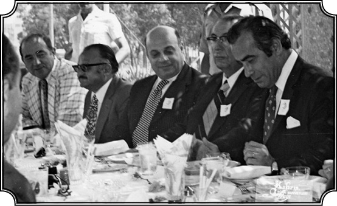
Yıl 1974. Kıbrıs’ta Rauf Denktaş ile yemekte.
Tanışıklığınız Amerika’da mı başlamıştı Rauf Bey’le?
1963’teydi. Kıbrıs Rumları Türklere hücum etmeye başladıktan sonra Birleşmiş Milletler’de toplantılar oldu. Daha evvel anlattığım gibi ben de birtakım konuşmalar yaptım televizyonda, yazılar yazdım, toplantılar yaptım. Bu zamanlarda Rauf Bey de sık sık Birleşmiş Milletler’e gelip gidiyordu. New York’ta küçük bir Türk topluluğu vardı. Onlar vasıtası ile o zaman tanıştık ve ondan sonra ilişkimiz devam etti. İşte böyle bir gelişinde Rauf Bey demişti ki “Kemal Bey siz Kıbrıs konusunda yazıyorsunuz, evet gayet güzel ama siz Kıbrıs’ı görmediniz, durumu da bilmiyorsunuz! Bir gelin de yerinde inceleyin durumu.” Kıbrıs’ta (benim üniversitemde doktora yapmış ve beni çok iyi tanıyan) yüksek memur olan bir arkadaş var, o karşıladı beni. Rum Bölgesi’nden aldı, Türk bölgesine geçirdi orada bir otele yerleştirdi. Rauf Bey’i gördüm “merhaba” hoş beş derken, tesadüf Türkiye’den de bir heyet geliyor. Galiba heyete başkanlık yapan Bursalı diplomat, sonra Dışişleri Bakanı oldu…
İhsan Sabri Çağlayangil.
Evet, İhsan Bey’i biraz eskiden tanıyordum. Esasen dergimizi çıkarmak için parayı bize temin eden o olmuştu Dışişleri’nde. Türklerin bulunduğu bölgeleri gezecekler, emirlerinde dört-beş tane araba var. O arabaların bir tanesine de ben bindim büyük tesadüf eseri ve böylece bütün Kıbrıs’ı dolaştık, Türk Bölgeleri’ni gezdik, durumu anladık. Rauf Bey ve Kıbrıs Türk sefiri ile yemek yedik. Çok iyi hatırlıyorum Rauf Bey; “Profesör Bey anlat bakalım intibalarını” dedi. “Valla Rauf Bey” dedim “siz bitmişsiniz.” Çünkü hakikaten Türk bölgeleri Baf, Limasol gibi yerler sarılmış. Dışarı ancak Rumların izniyle gidip gelebiliyorlar. Gelmek, geçmek ihtimali yok, hatta Baf’ta plaj gibi yer var, deniz gözüküyor “hadi gidelim de şu denize yüzelim” dedik, “aman aman hemen vururlar, çünkü o plaj onların kontrolü altında, bize izin vermiyorlar, birisi oraya gitti mi kurşuna diziyorlar” filan dediler. Yani Kıbrıs’ın yüzde 99’u Rumların kontrolü altındaydı. Lefkoşe ve dediğim gibi birkaç şehirde küçük küçük Türk bölgeleri var. O bölgelerin ayakta durabilmesi yalnız ve yalnız oradaki mücahitlerin sayesinde mümkün. Onlar da silahlı, biraz mermileri var ama Rumlar büyük bir hücuma kalkarsa dayanamayacak, bitecekler. Fakat Rumlar onların bu şekilde bitmesini değil, ekonomik bakımdan çökmesini istiyor ki hakikaten çökecekler. Unutmayınız ki 1959’da, 1960’ta yapılmış anlaşmaları çiğneyerek işleri bu hale getiriyor Rumlar.
Siz gittiğinizde 1974’te Makarios’a karşı darbe yapılmış mıydı?
Olmamıştı. Oraya geleceğim. Bana göre Türk Kıbrısı’nın ömrü yok gibiydi, kalmamıştı. Sonra Ankara’ya geldim, Bulvar Palas’ta bir yemekte Bülent Bey’i gördüm. Koalisyon hükümeti kurulmuştu Erbakan’la. Anlattım durumu. 10-15 gün sonra (15 Temmuz 1974) EOKA-B örgütü Başpiskopos Makarios’a karşı darbe yaptı. Biliyorsunuz 1967’de Yunanistan’da Albaylar Cuntası darbeyle kurulmuş ve önce darbecileri destekleyen Kral II. Constantine bile bir yıla kalmadan Roma’ya kaçmak zorunda kalmıştı.
21 Nisan 1967’deki bu darbenin esas amacı da yaklaşan seçimlerde George Papandreu’nun seçim zafereini ve komünistlerin iktidara geçmelerini engellemekti değil mi?
Evet sağ bir darbeydi, iktidarda kaldıkları 7 yılın sonuna doğru zaten dağılma emareleri başlamış, öğrencilerin direnişleri ve sosyal muhalefet ve dış baskılar nedeniyle de toplum içinde hiçbir temelleri kalmamıştı. Kendi içlerinde de görüş ayrılıkları artmıştı. Nitekim gerillaların lideri Samson, Ada’ya dönerek Cunta’nın desteği ve onayıyla 15 Temmuzda Makarios’u devirip iktidara geçtiğinde bu ayrılıklar derinleşti. Samson tam manasıyla gerilla demeyeyim ama haydut bir adam…
Nikos Samson değil mi? Hani daha önce Ada’dan Yunanistan’a gönderilmesi sağlanmıştı.
Evet o. Makarios’u indirmek için Samson, Yunanistan’dan geri döndü. Çünkü Cunta içinde Kıbrıs’ı Yunanistan’a bağlamak görüşü ve kararı, ENOSİS’i uygulama kararı ağır basmıştı. Samson iktidarı ele geçirdi. Ve ondan sonra bizim askerler de Kıbrıs’a çıktı. Bu tamamı ile 1959-60 anlaşmaları dahilinde oldu. Sonra da Yunanistan Türkiye ile savaşın eşiğine gelince Yunan ordusu içinde görüş ayrılıkları derinleşti ve Cunta ordu içindeki desteğini de kaybetti, dağılma noktasına geldi. Bu noktada da Devlet Başkanı Gizikis Fransa’da bulunan eski başbakanlardan Constantine Karamanlis’i çağırarak seçimlere gidilmesini sağladı. Karamanlis kurduğu Yeni Demokrasi Partisi’nin seçim zaferiyle başbakan oldu ve Yunanistan’a bu sayede demokrasi geldi. Bu arada ben Kıbrıs’tayken, Kıbrıs gazetelerinde haber çıktı, işte “Amerika’nın Wisconsin Üniversitesi’nden Profesör Kemal Karpat siyaset bilimcisi, tarihçi, Ada’yı ziyaret etmek için geldi” falan. Sonra Rum bölgesinde çıkan gazetelerde bu büyük bir haber olarak çıktı. “Kemal Karpat isminde bir Profesör, Amerika’da siyaset bilimcisi, Türk bölümünü ziyaret ediyor. Neden Türkler bir siyaset bilimcisini davet etmek lüzumunu gördüler, bunun arkasında ne yatıyor” gibi birkaç makale çıktı ve ondan sonra darbe oldu. Amerika’ya döndüğümde, benim öğrenciler takıldı, “hocam darbe yapıp geldiniz”…
Sonra çok ilgilenmediniz Kıbrıs meselesiyle galiba?
Çünkü bir bakıma Kıbrıs meselesi halledilmişti, yani sen oraya girip de bir toprak parçasını aldıktan sonra, senin lehine bir çözüm bulunmazsa sen de oradan çıkmazsın ki hâlâ durum böyledir. Benim onunla uğraşacak fazla vaktim yok, yani ben vazifemi yaptım. İlk dönemlerde kimse sesini çıkarmazken ben ortaya çıktım, uğraştım. O bakımdan vicdanım rahattır. Rauf Bey’le de yine arada sırada görüşüyoruz, tebrik falan ediyor. Ondan sonra bir kere daha Kıbrıs’a gittim, 1985 senesindeydi. Bu defa artık o bölge Kıbrıs Türklerinin hâkimiyetindeydi, her taraf rahattı. Orada plajda dinlenirken otelden garsonlar “Kemal Bey sizi Washington’dan arıyorlar” dediler. “Yahu Washington’dan beni kim arar, benim Kıbrıs’a geldiğimi kim biliyor” dedim, gittim, telefonda Şükrü Elekdağ…
İsterseniz 1985’e gelmeden önce zaman akışına devam edelim sonra bu konuya geleceğiz zaten. Kıbrıs’tan sonra Amerika’ya döndünüz. Ailenizle görüşüyorsunuz, haberleşiyorsunuz. Ama anneniz galiba o sıralarda öldü. Nasıl oldu, siz neredeydiniz?
Evet, annem 1974’te vefat etti. Eylül ayıydı, ben üniversitede bir konuşma yapmak için Toronto’daydım. O gece ölmüş, ama haberini bir hafta sonra alabildim. Ama öldüğü gece onu rüyamda görmüştüm.
Hangi gece olduğunu biliyorsunuz o zaman. Ne görmüştünüz rüyanızda?
Valla çok enteresan gelmiştir o durum bana. Hani benim böyle telepatik şeylerim vardır, söylemiştim daha önce de. Galiba 27’siydi ayın. Annem, işte yatakta, oturuyor mu yatıyor mu öyle bir şey. Etrafında bir sürü kadın, bir kısmı akrabamız ama hepsinin başında “çember” dediğimiz başörtüsü var. Ama annemin yüzünde bir huzur var, nur inmiş gibi derler ya öyle işte, rahat. “Üzülme, iyileştim ben artık oğlum, rahatım. Merak etme, artık acı çekmiyorum” diyor bana. “Eyvah, bir şey oldu anneme” diye uyandım.
Hemen telefon?
Yok, nerede o devirde kıtalararası “hemen telefon”… Zaten New York’a hareket edeceğim, bekleme durumum yok. Bir şey olsa bana New York’ta ulaşırlar diye düşündüm. New York’a geçtim, bir şey yok. Oradan da Madison’a geçtim. Posta kutusunda mektuplar. Baktım Cemal’den var bir tane. Heyecanla tarihine bakmadan açtım. “Her şey normal” yazıyordu mektupta. “Ohh” dedim “Rüyaymış!”. Ama sonra Cemal’in ikinci mektubunu buldum. Haber orada yazıyordu. Ben üzülmeyeyim diye hemen bildirmemiş. Tabii telefon açtım. Anlattı işte biraz. Hemen o rüya aklıma geldi. Tarihini sordum. Evet, o 27 Eylül gecesi ben onu rüyamda gördüğümde ölmüş.
Gerçekten çok ilginç. Neler hissettiniz o anda?
Çok sarsıldım tabii. İçimde hani nasıl derler, burkuldum. Bir boşluk oluştu ve hâlâ o boşluğu hissederim. Onu çok seviyordum. Sarstı beni. Cemal de çok sarsılmış, çünkü onlar hiç ayrılmamışlardı, hep birlikteydiler. Cemal onun hayatında çok önemliydi, o da Cemal’in hayatında tabii. Ağlaştık telefonda biraz. İşte sonra geldim Zincirlikuyu Mezarlığı’nda ziyaret ettim.
Felçliymiş ve yüksek tansiyonu varmış galiba, Cemal Bey anlatmıştı?
Annem buraya geldikten üç sene sonra Babadağ ve Armutlu’yu ziyarete gitti. Orada bir ablamız kalmıştı, ona gitmişti. Oradaki evimizi, oradaki kökenlerimizi muhafaza etmek istedik hep. Annem gittiğinde şöyle bir olay geçmiş: O zaman, sene 1972, Türkiye’de bir kolera salgını vakası olmuş, her tarafta tedbir alınmış falan. Romen makamları da Türkiye’den gelenlere aşı yapmak istiyor illa. Kolera aşısı için annemi zorlamışlar ve aşıyı yapmışlar. İşte o akşam felç olmuş. Buraya haber verildi, biraderim Cemal arabayla kalktı gitti, annemi aldı getirdi. Tansiyonu vardı, ihtimal o aşı tansiyonunu bir kat daha yükseltti ve vücut dayanamadı ama kalbi çok sağlam olduğu için mücadele etti ve ondan sonra iki sene daha yaşadı.
Mezarına çiçek diktiniz mi?
Cemal gül dikmiş, annemizin en sevdiği çiçek oydu. Sonraki gelişimde babamın mezarından bir torba toprak alıp annemin üzerine, annemin mezarından bir torba toprağı alıp, babamın Dobruca’daki mezarının üzerine attım. Bu kadar yapabildim, onları bu şekilde birleştirebildim.
UNESCO’nun girişimi ve Türklerin ilgisizliği...
Devam edelim. 1974’ten sonrası hep akademik ağırlıklı çalışmalar galiba?
Evet, 1980’lere kadar çok yoğun ve çok yönlü araştırma inceleme, kütüphane ve kaynak tarama çalışmalarım oldu. Birçok konuda dergilere yazılar yazdım. Konferanslar verdim. Artık sahamda sürekli ilerliyorum. Türkiye’ye gene gelip gidiyorum ama eskisi kadar sık değil. Çeşitli ülkelerde konferanslara gidiyorum. Hem derinleşme hem ürün verme açısından verimli ve yoğun bir dönem.
Özel hayat diye bir şey yok, yeni bir sevgili filan yok, hep çalışma öyle mi?
Sevgili, eş filan durumları yok, artık tamamen kendimi çalışmalarıma vermişim. Bu çalışmalar esnasında yine 1974 yılında Güneydoğu Avrupa Araştırma Cemiyeti var, tüm Balkan ülkelerini, Türkiye’yi de içine alan bir cemiyet. Onun Bükreş toplantısına gittim, hatta benim tebliğim üzerine yorum yapan, Romanya’nın en önde gelen ve bence en iyi, şimdiye kadar en iyi Osmanlı tarihçisi olan Aurel Decei vardı. Aurel Decei (ki onun da hayatı bir maceradır), Türkiye’de uzun bir müddet bulundu, önemli çalışmaları vardır ve Osmanlı hakkında da yayınladığı bir kitap mevcuttur, sağlam bir adam. Fakat asıl ilginç tarafı şu: Programda Atina Üniversitesi’nde hocalık yapan Daskalakis isminde bir profesör, bir tebliğ veriyor: “Yunan Devleti, Yunan milleti nasıl kuruldu?” Onun tebliğine gittim, eski masallar işte, “Yunan milleti dört bin seneden beri mevcuttur, işte her tarafa medeniyet getirmiştir Yunanlılar” vesaire gibi şeyler. Konuşmasını bitirdikten sonra ben elimi kaldırdım, sordum; “Siz 19. yüzyılda kurulmuş olan ve eskiden benzeri mevcut olmayan Yunan Devleti’ni nasıl üç bin sene kadar geriye götürebilirsiniz? Bildiğimiz gibi bugünkü anlamda milli devletler, 18-19. yüzyılda kurulmuştur, hani burada bir çelişki görmüyor musunuz?” Daskalakis’e sonra başkaları da soru sordu bir iki tane. Benim önümde oturan Nikolai Todorov’a geldi. Nikolai Todorov, Bulgaristan Balkan Enstitüsü’nün Başkanı, ona dedi ki (beni kastederek), “O soruyu soran Türk müydü?” Todorov da, “Evet Profesör Kemal Karpat, Türktür” dedi. “Ha öyle mi!” dedi, kürsüye dönüp “cevap” diye bir küfüre başladı Türklere, inanılmaz. “Asya’dan gelmiş bu millet, medeniyet bilmeyen, medeniyete son veren bunlar” gibi, hani ilmi bir toplantıda asla ve asla beklenilmeyecek derecede seviyesiz bir konuşma. Şok olduk ama işin garibi alkışlandı.
Tarihi nedir bu olayın, psikolojik bir ortam oluşmuş galiba?
Bu olay Türklerin Kıbrıs çıkarmasından birkaç ay sonra oluyor. Zaten konferansı açan zat, Çavuşesku’nun Kıbrıs olayını eleştiren mesajını okuyarak başlamıştı. Hani orada inanılmayacak derecede bir Rum şovenizmi, Balkan şovenizminin en berbat şekli vardı artık. Cevap vermek için elimi kaldırdım, “Böyle bir toplantıda böyle bir şey olamaz” dedim. Orada başkan olan bir Sırp bana söz hakkı vermedi. Ben de onun üzerine çıktım gittim, bizim Türkler’e söyledim ama kimse alakadar olmadı. Yine bu tarihlerde, bu anlattığım 1974 olayından biraz sonra, bana bir teklif geldi UNESCO’dan. UNESCO, bir dünya tarihi yazmaya karar vermiş ve beklendiği gibi tarih çeşitli dönemlere göre ve coğrafi alanlara göre taksim edilmiş. Bir Balkanlar tarihi bölümü de var ve başına da Nikolai Todorov’u getirmişler. Nikolai Todorov anlattığım gibi Sofya’da önemli ve değerli bir enstitü mensubudur ve önemli şeyler yapmıştır.
Todorov ile ilişkileriniz iyi galiba, onunla bir çatışmanız yok…
Todorov, Rum asıllı, Bulgarlaşmış zeki bir adam. Aynı zamanda medeni, insanlarla güzel ilişki kurmasını bilen ve yeni fikirlere açık. Moskova’da tahsil görmesine rağmen, hani bir yerde bir Batı kafası var adamın, onun için biz onunla iyi anlaşıyorduk. Beni dinliyor “evet haklısın” ya da “haksızsın” diyor, hürmet ediyordu. İşte Todorov, bu tarihte Bulgaristan’ın Atina elçisi olmuştu, hani bir yerde akademik çalışmalarla, diplomatik çalışmaları bir arada yürütüyor. Onun kızı Maria Todorova şimdi Amerika’da Balkan tarihi üzerinde bayağı isim yaptı. İşte Todorov, UNESCO’nun bu tarihini yazacak Balkan Bölgesi Başkanı oldu ve beni de ekibe dahil etti. Türkiye’den de bir iki kişi bu komitede mevcuttu. İlk toplantımızı Atina’da yaptık, ben gene işimi bıraktım, kalktım Amerika’dan Atina’ya geldim. Diğer Balkan ülkelerinden tarihçiler de gelmiş, oturduk konuşuyoruz. Baktım Todorov, burada da yine eski tarih tezini (hafif tertip değiştirerek) UNESCO’ya kabul ettirmeye çalışıyor. Tabii orada uzun tartışmalara girdik, ben her şeyine itiraz edip böyle olmadığını söylüyorum. Fakat o zaman hayretle şunu gördüm: Türkiye’den gelen iki üç tane hoca, bu meselelerin siyasi yönünü görmedikleri gibi gelişmelerden de bihaberler. Hatta birisi gelip bana şöyle dedi; “Ya Kemal Bey, bizi davet etmişler, insan yerine koymuşlar, gelmişiz işte buraya, niye durmadan itiraz ediyorsunuz?” Hani ben de buna akıl erdiremedim, yani sırf bizi davet edip, misafirperverlik gösterdikleri için orada temelli kalacak bir yazıya (ki bu Türkiye aleyhinde olacak) imza atmaya hazırlar.
Kimlerdi bu kişiler ve size bu sözleri söyleyenler?
Tarık Zafer Tunaya ile Enver Ziya Karal vardı. Pek neyin ne olduğunu da bilmiyorlardı. Rahmetli Tarık Zafer Tunaya “Bana hiç haber vermediler neyin ne olduğunu” diye yakınıyordu. Çünkü onu Todorov, Sofya’da görmüş ve davet etmiş buraya getirmiş. Tunaya, Osmanlı tarihçisi değildi, birçok Balkan meselelerini yakından bilmiyordu. Onun sahası daha ziyade siyasi ilimler metodolojisi ve siyasi partilerdi. Ziya Karal ise bu meseleleri daha ziyade “nazik, efendice bir görüş alışverişi” olarak gördüğü için fazla sorgulanmasını, tartışma çıkmasını istemiyordu. Sonra durumu kendisine daha detaylı anlattım, bana hak verdi. Çok efendi, iyi niyetli bir insandı. Ondan çok şeyler öğrendim. Ama Balkan kökenli olmasına rağmen Todorov gibi tatlı sözlü art niyetli kimselere inanıyordu. (Karal, 1913 Balkan Savaşı sırasında çocuk yaşta, son anda kaçarak hayatını kurtarmıştır.) Bir dost söylemişti, “Biz Türklere tatlı dille istediğimizi yaptırırız”, haklı imiş…
Romanya Devlet Nişanı
Nasıl bir cevap verdiniz onlara ve diğerlerine?
“Ben” dedim “böyle bir şeye asla ve asla imza atmam. Bu peşin hükümlere dayanan bir toplantıdır ve Türkler burayı terk etmelidir. İlk olarak ben terk ediyorum, böyle bir toplantıya katılamam.” Ve sonra durumumu da UNESCO’da bizim bu işlerle meşgul olan hariciye memuruna bildirdim, yazı oradadır. Neyse sonunda UNESCO bu çalışmayı yayımladı ama hiçbir yerde ilgi çekmedi, bir önem arzetmedi, öyle bilinen şeylerin tekrarı bir çalışma olarak raflarda yerini aldı. Sadece gerçek manada bir tarihin yazılmasının ne kadar zor olduğunu göstermiş oldu. Balkan tarihi üzerine tartışmalarımız böylece gördüğünüz gibi artık nazari görüşlerden pratiğe dönüşmüş ve orada biz dövüşmemizi devam ettiriyoruz. Aynı noktadan hareket ederek 1978’de, yani Berlin Antlaşması’nın 100. yıldönümünde tüm Balkanlar’da konferanslar tertip edildi, bildiğimiz tezler tekrar edildi. İşte, “Yüz sene evvel böyleydi, şöyle oldu böyle oldu.” Ben de “bu tezlere karşılık bir şey yapayım” dedim ve o tarihte benim üniversitemde Romanya’yı esas alarak bir konferans topladım ve Romanya’dan akademisyenler davet ettim. Bu konferans hem Türklerin, Osmanlıların hem de Romanya’nın durumunu gerçekçi bir şekilde ele aldı. Benim Romanyalılara söylediğim şu oldu: “Osmanlı Devleti hiçbir zaman fiilen Eflak ve Boğdan’ı işgal etmemiştir. Balkanlar’da, Dobruca’da bir Osmanlı fiili hâkimiyeti vardı. Memuru, paşası, falan vardı ama Boğdan ve Eflak yerli Boyarlar tarafından seçilen yerli hanedanlar tarafından idare edilmiştir.

Romanya, Köstence Ovidiu Üniversitesi’nde fahri doktora töreninde (1994).
Bu Eflak ismi nereden geliyor?
Ulah’tan. Balkanlar’da Latince konuşan halka, Ulah denirdi. Ulah-Vlak-Eflak oldu Türkçede. Eflak, Vlak’ın değişmiş hali. Evet, bunlar İstanbul’un emriyle azledilebiliyor ama yine de yerli Boyarlardan başka birisi idareci olarak seçilebiliyor. Onun için Rumenlerin tarihlerini daha doğru dürüst anlamaları gerektiğini söyledim. Bu konuda yazılar yayınlandı ve Rumenler o zaman çok memnun kaldılar “Bir Türk’ün ağzından Romanya’nın geçmişinin gerçekte ne olduğunu anladık” dediler ve bana Devlet Nişanı verildi. “Romen tarihini aydınlatmadaki hizmetlerim” nedeniyle iki tane nişan verildi. Bu şekilde Rumenlerin gözünde Türk tarihini yalnız yeni bir şekilde anlatmakla kalmadık, aynı zamanda Osmanlının ve Türklerin buradaki pozitif rollerini de gösterdik. Hatta ondan sonra mesela Rumenlerin o tarihte en büyük tarihçisi olan Constantin Giurescu (ki onunla da çok iyi görüşüyorduk) açıkça, “Türkler olmasaydı biz ya Ruslaşmıştık veyahut da Polonyalılar tarafından yutulmuştuk. Rusların ve Polonyalıların bilhassa Boğdan’a girmelerine ve orada kendi kültürlerini, dillerini yerleştirmelerine engel olan Türklerdir” demişti.
Evet, mücadelenizi çok yönlü olarak sürdürdüğünüz anlaşılıyor…
İşte bu arada yazılarım devam ediyor. Bir sene sonra, yani 1979’da üniversite bana özel bir kürsü ayırdı, beni “seçkin profesör” ilan etti ki, her sene üniversiteden birkaç kişiye bu şeref verilir. “Distinguished Professor of History”, yani “Seçkin Tarih Profesörü” olarak ilan edildim Bana bu kürsünün verilmesi aynı zamanda bir miktar para da getirdi ki o da benim çalışmalarımı, araştırmalarımı kolaylaştırdı. O kadar çok yazım çıktı ki Balkanlar hakkında (İtalyanca bile çıktı), artık bu konu üzerinde en fazla çalışmış insanlar arasına girdim.
Makalelerinize baktığımızda bu yıllarda hemen hemen yazmadığınız konu kalmamış, her şeye yetmişsiniz yani…
Dünya çok hareketli, Türkiye hızla yeni şeylere doğru yol alıyor, ufuk karanlık gibi. Bunları takip ediyorum ama edebiyattan da vazgeçmiyorum, Türk Edebiyatını da yakından takip ediyorum. O sene (1980) Bernard Lewis şerefine bir kitap hazırlanıyordu. Ben de o kitapta “Ömer Seyfettin’in yazılarında sosyal ve politik meseleler nasıl tartışılıyor” diye uzun bir yazı yazdım. Artık teferruatına kaçmaya lüzum hissetmiyorum ama yazılarım çeşitli ülkelerde de çıkmaya başladı. Almanya, İspanya, İtalya, Romanya, Bulgaristan ve Türkiye’de. Hatta taleplerin bir kısmı, gerçek manada ilmi gayelerle, bazıları ise derginin sayfalarını doldurmak için yapılıyordu ama ben mümkün olduğunca hepsine ciddi çalışmalara dayanan yazılar verdim. Bu arada yazları Quogue’a gidiyor, dinleniyor, plaj-deniz yapıyor, çalışıyorum. Genellikle bire, ikiye kadar evde yazı yazıyor, ondan sonra plaja giderken gene yanıma hikâye, roman, bir kitap alıyor onu okuyorum, yürüyüşler yapıyorum. Ondan sonra eylülün başında dersler başlayınca Madison’a dönüyorum. Sonra yaz tatilinde ve Noel tatilinde Türkiye’ye geliyor, başka ülkelere gidiyor, oldukça faal bir hayat sürdürüyordum. Arkadaşlarım, kadın olsun, erkek olsun, beni zayarete geliyor, misafirim olarak kalıyor, hayatım canlı ve renkli olarak geçiyor.
Karpat, Beyaz Saray’da
1980 hem Türkiye hem dünya tarihi açısından çok önemli olaylarla dolu. Türkiye’deki darbeye geleceğiz herhalde ama bu arada 1980’e gelmeden bir de İran Devrimi meselesi var.
Doğru, çok doğru. O olay Amerikan tarihinde ve Amerikan toplumunda da çok önemli yeri olan bir olay, bir devrimdir. Ortadoğu ve İslam tarihinde çok önemli bir yeri vardır. O devrimi inceledim, hakkında bazı yazılar da yazdım. Hakikaten İran Devrimi, içeride oluşan iç güçlerin örgütlenerek oluşturduğu, belki de Müslümanlar bakımından yüzyılın devrimidir. Çünkü devrim, başta demokratik amaçlarla yapılmıştı, demokrasi ana amaçtı. Aynı zamanda devrim dış kuvvetlerin, bilhassa Amerika’nın müdahalelerine karşı yapılmış anti-emperyalist bir eylemdir fakat Batı’ya karşı değildir, yani Batı’nın temsil ettiği ilme, medeniyete karşı bir şey değildir. Batı’nın İslam’ı küçümsemesi, inkâr etmesi ve İran’ı istediği gibi manipüle etmesine karşı kesin bir tepkiydi.
İran devrimi başka hangi nedenlerle İslam alemi açısından “yüzyılın devrimi”, biraz daha açalım mı?
İran’da devrim bir halk hareketidir. Şah’ın diktatörlüğüne ve İran’ın geleneksel kültürünü tepeden, emirle değiştirme çabalarına karşı bir demokratik hareket olarak başlayan bu devrim bir süre sonra ana amacından uzaklaşmakla beraber yine örnek olarak önemini korumuştur. Her ne kadar İslam dünyasında çeşitli halk hareketleri oluşmuşsa da hiçbiri hükümeti ve rejimi İran’da olduğu gibi kökünden değiştirememiştir. Örgütlü ve belirli fikirler etrafında gelişmiş olan İran devrimi ilk kez açık seçik bir halk hareketi olarak genç kuşakları etkilemiştir. Bugün İran devrimi bir çeşit teokrasiye dönüşmüşse de halk arasında ve bilhassa genç kuşakların gözünde demokratik bir hareket olarak kalmıştır. Her büyük siyasi devrimin mitolojik, efsanevi ve idealize edilmiş bir yönü vardır ve bu yön etkisini korumaktadır ki bu demokratik etki İran’da genç kuşaklar arasında devam etmektedir. Türkiye’de ise İran devriminin etkisini anlatmak oldukça güçtür. Çünkü Türkler, devrimin demokratik hürriyetçi yönlerini destekledikleri kadar sonradan küçük bir dini elitin devlete ve fikir hayatına hakim olmasını yadırgamışlardır. Halkın birleşerek ve kendi liderlerinin idaresinde karar vermesi, Türkiye’de bazı kimseler tarafından örnek olarak görülmektedir. Böylece İran devrimi halkın seferber edilmesinde kullanılacak yöntemler konusunda yeni yaklaşımlar ortaya koymuştur. Aynı zamanda bu devrim, İran kültürünü, İran dilini, İran varlığını ortaya koymuştur ama burada “İran” demek çok yanlıştır. Buna Fars demek lazım. Çünkü İran’da Farslar o devirde ve halen bir azınlıktır. Orada bildiğiniz gibi Azeriler, Türkmenler, Araplar ve Kaşgayılar gibi gruplar mevcuttur. Liderlik, Farsların elinde yahut da Fars kültürünü temsil eden bir elitin elindedir...
Farslar yani Perslerin devamı?
Evet Persler. Orada İslam’ın çok daha ötesine giden bir medeniyet ve bir dil devamlılığı vardır. Farsça çok değişmiştir dil olarak, yani bugünkü Farsça, bundan bin sene evvelki Farsça değil ama yine bir devamlılık vardır. Aynı zamanda Fars dilini ve kültürünü temsil eden bir elit vardır ve bu elit İran’ın tarihinde büyük bir rol oynamıştır. İran biliyorsunuz 1930’larda alınan bir isimdir ve çok güzel bir perdedir. İran sözde bugün İran’da yaşayan bütün halkları temsil eden bir isimdir ama bunun arkasında hakim olan Fars’tır, halen hakimdir ve Farslaştırma cereyanı devam etmektedir. Din gelir gider fakat Farslaşma devam eder. Belki Humeyni yahut da bugünkü İran’ın başında gelen Hameney Azeri’dir. Hameney gibi birçok Azeri en yüksek mevkidedir ama onlar Fars kimliğine, Fars kültürüne birinci derecede önem verir. Böylece İran ismi altında ve İslam adına Farslaşma devam ediyor. İran kendi başına ele alınması gereken bir konudur. İşte 1979 Humeyni Devrimi aslında liberal, dünyaya açılmayı amaçlayan, demokratik ve kısmen de milliyetçi bir devrimdi ki orada Azerilerin rolü büyüktür. Çünkü Şah onları Farslaştırmak için bir sürü program uygulamıştı ve Humeyni Devrimi’nde, İran Azerilerinin oldukça önemli bir rolü vardır. Biliyorsunuz Şah’ın son hanımı Azeri’ydi fakat Şah onun Azerice, Türkçe konuşmasına müsaade etmezdi.
Ayetullahlar nasıl olaya el koydular? Şiilik orada niye bu kadar etkin bir yapıda?
İran’daki Şiilik 12. İmam Şiiliği olarak bilinir. Küçükken kaybolan 12. İmam’ın bir gün geri geleceğine inanıyorlar ve o geri gelene kadar temiz, ahlaklı, dinine bağlı, sağlam müslüman bir toplumu yaşatmak görevi din adamlarına düşüyor. Onların içinde de en derin, en gelişmiş, en üst düzeyde olanları Ayetullahlar. Velayet-i Fakia dedikleri sistem bu işte. Sünnilikte bu yoktur. İran Şiilerinde son derece sıkı bir hiyerarşik yapı vardır. En küçük bir hocadan en tepeye kadar piramit şeklinde bir örgütlenme. Sırayla kademeleri geçerek yükseliyorlar, rütbe alıyorlar. En tepede de 5 kişilik Ayetullahlar komitesi var. Son kararı da lider olan Ayetullah kimse o veriyor. Humeyni vardı, şimdi de Hameney. Her şey Ayetullahların emrinde. Son söz orada, din adına. İşte tam teokratik düzen bu. Bu örgütlenme ve katı hiyerarşi sayesinde de önce dini görevliler ve sonra onların etrafındaki cemaat kontrol ediliyor ve yönlendiriliyor. İran’da bu sayede sosyal muhalefete Ayetullahlar sahip çıktı ve devrime yol açan hareketi kendi kontrollerine kolaylıkla geçirdiler. Sünnilikte bu tarz örgütlü bir hiyerarşi olmadığı gibi başka Şii kollarında da bu kadarı yoktur. Mesela Irak’ta Sadr’ın karşılaştığı en büyük güçlük bu mertebeleri aşıp yeter derecede yükselemeyişidir. Irak’ta da bu örgütlenme var, İran’daki kadar olmasa da. Şimdi Irak’ta başta Sistani var. Bir de Hakim var o ayrı mesele ama bunlar bir gün birbirlerine düşecekler, eğer Türkiye yeteri kadar sabırlı olursa. Bunlar biraz da İran’ın emrinde tabii ki.
Osmanlı’daki Şiiler üzerinde çok etkili olamadılar galiba, en azından Anadolu’da.
Tabii çünkü bizdeki Şiiler Osmanlı’da yaşadıkları için daha özgürdüler, İran etkili olmak istedi ama olamadı. Bizde bir de millet meselesi ön plana çıkmıştır. Şiidir ama Türktür. Osmanlı döneminde İran Şiileri Irak üzerine çok çalıştılar. 20. yüzyılın başlarında bile Irak’ta Sünniler çoğunluktaydı. Fakat İran’ın daimi propagandası sayesinde Şiilerin sayısı arttı. İranlılar bu propagandayı büyük bir siyasi ustalıkla yaparlar. Başarılı da oldular. Neyse işte ben bu İran devriminin Amerika’daki etkisini anlatmak istiyorum. Her tarafta yazılar çıkıyor, konuşmalar oluyordu. Bir gün ben de posta kutumda bir telgraf buldum: “Başkan Carter, Ortadoğu’yu ve İran Devrimi’ni konuşmak için bir toplantı tertip etti. Bu sahanın uzmanlarından biri olarak sizi de davet ediyoruz. Toplantı filanca gün, filanca saatte Beyaz Saray’da olacak, Beyaz Saray’a gelince isminizi bildiriniz, sizi içeri alırlar.” Düşününüz hani Armutlu Köyü’nden kalkıp, bu kadar güçlükler içinde çarpışarak mümtaz bir mevkiye gelmiş Kemal Karpat, nihayet Amerika’nın en ünlü merkezi olan Beyaz Saray’a davet ediliyor. Bense bunu, “güzel bir şey işte, fena değil” diyerek pek önemsemedim. Bildirilen gün ve saatte gittim, benim gibi (hepsini de tanıdığım) on dört kadar uzman vardı ve nihayet Carter, dünyanın en güçlü Başkanı, Amerika’nın Başkanı odaya geldi ve bize şöyle söyledi: “Biz İslam dünyasında ve bilhassa İran’da ne olduğunu bilmiyoruz. Pek anlayamıyoruz. Ama biz bu gelişmeleri, soğukkanlılıkla karşılamak istiyoruz. İslam dünyasıyla kavga etmek istemiyoruz, öyle bir niyetimiz yok, sadece anlamak istiyoruz, sizi onun için davet ettik. Bize anlatın bunun sebepleri nedir diye.” İşte orada oturduk konuştuk, herkes bir şeyler söyledi, anlattı vesaire. Sıra bana geldiği zaman ben, “Ortadoğu’da ağırlık merkezi II. Dünya Savaşı’ndan beri Arap dünyasıydı. Bugün bu değişiyor, eskiden olduğu gibi Türkler ve Farslar, İslam tarihine hakim olmaya başlayacaklardır” dedim. “Çünkü bin sene onlar hakimdi. İslam tarihini son bin senede çizen Türkler, ikinci derecede de Farslardı, şimdi durum normalleşiyor” dedim. Tabii toplantıda bulunan birkaç Arap meslektaşın hiç hoşuna gitmedi bu söylediklerim, yani onlar da Türkleri sevmiyorlar açıkçası. İşte konuşma böyle devam etti.
Amerikalıların tarzı açısından sizi çok etkilemiş bu olay galiba?
Evet. Şimdi benim ilgimi çeken noktalardan birisi şu: Kendimi Beyaz Saray’da gördüm, gayet büyük bir şey. Fakat ondan fazla ilgimi çeken Carter’ın tevazuu. O kadar sakin o kadar hoşgörülü, “sen-ben” diye oturuyoruz konuşuyoruz. Ben burada (Türkiye’de) bir Cumhurbaşkanı veya yüksek düzeyde bir memur gördüğüm zaman sanki Tanrının karşısına çıkmış gibi oluyorum, yani bir azamet, bir gurur, bir tavır. Hâlbuki orada Carter’la senli benli konuşuyoruz hiçbir şey yok, gülüyor, şakalaşıyor. Ve bu tarz, tanıdığım başka yüksek seviyeli Amerikalılar için de geçerlidir. Mühim olan insandır, insan kalmaktır, mevki geçicidir. Ondan sonra ben Madison’a döndüm, beni gören “tebrik ederim, Beyaz Saray’a davet edilmişsin, ne oldu?” diye soruyordu. Benim için normal bir şeydi, ama o günlerde gazetelerde manşet oldu, “Karpat, Beyaz Saray’a gitti”,”Karpat danışman olarak Beyaz Saray’a çağrıldı” gibi başlıklar. O zaman ben çok önemli bir olayın farkına vardım. Amerikalıların gözünde Cumhurbaşkanlığı adeta mukaddes bir mevkidir. Evet, kendileri seçer, insanlar seçer, hatta insanlar Cumhurbaşkanına küfür eder, bağırır çağırır ama mevki olarak Cumhurbaşkanlığı onlara göre çok büyük, mukaddes bir şeydir. Oraya gitmek yahut da oraya davet edilmek, yani Beyaz Saray’a gidip de Başkanı görmek Amerikalıların gözünde bir insanın ulaşabileceği en büyük mükafatlardan birisi. Ben, farkına varmadan böyle bir şeye nail olmuşum. Onlar bunu bu şekilde yazmasalardı bilmeyecektim. Ondan sonra herkes hâlâ bana soruyor, “Beyaz Saray seni davet ediyor mu hâlâ, görüşlerini alıyor mu?” Yalnız şunu da söz arasında söyleyeyim, Washington’a gidip geldik, otel parası, yol parası her şey kendi cebimden çıktı ha! Yani bize 600-700 dolara mal oldu bu şöhret. “Vereceğiz parasını” falan dediler, vermediler ama şüphesiz benim kariyerimde, bilhassa ismim ve prestijim üzerinde İran Devrimi ve dolayısı ile bu devrim ile ilgili Washington’da Beyaz Saray’da yapılan toplantı çok etkili ve devamlı olmuştur.
Bu konuyu kapatmadan, Atatürk devrimlerinin de İslam ülkelerindeki etkileri üzerine değerlendirmelerinizi kısaca alsak?
Atatürk devrimlerinin İslam ülkelerindeki etkileri çok geniş ve sürekli olmakla beraber doğru değerlendirilmiş değildir. İslam ülkeleri idarecileri ve hakim sınıfları Atatürk devrimlerini kendi mevkilerini ve çıkarlarını tehdit olarak gördükleri için bunları kınamışlardır. Öteden beri din, yani İslam, devletin hakim sosyal sınıfların gücünü meşrulaştırmak için kullanıldığından Cumhuriyetin kabul ettiği laiklik bir çok İslam ülkesinde din aleyhtarlığı olarak gösterilmiştir. Şüphesiz ki Turkiye’de laikliğin bir ideoloji olarak kullanılması ve zamanla “modernist” geçinen bir elitin mevkii ve çıkarını sağlayan bir araç haline gelmesi İslam dünyasında Atatürk devrimlerinin yanlış anlaşılmasına yol açmıştır. Eğer Türk devrimcileri, Cumhuriyeti halkçı, demokratik bir rejim olarak öngördüklerini ve Osmanlı devletinde ahiret ve dünya, din ve devlet ilişkilerinin öteden beri karşılıklı kabule dayandığını anlatabilmiş olsalardı, İslam dünyası Türkiye’de olup bitenleri daha iyi anlayabilirdi. Diğer yandan genç kuşaklar ve dünyadaki gelişmeleri daha yakından bilenler Atatürk devrimlerinin anti-emperyalist, modernist ve ileriye dönük olmasını görerek Atatürk’ü takdir etmişlerdir. Hatta bazı İslam düşünürleri Atatürk’ü İslam’ı canlandıran ve çağına uymasını sağlayan büyük bir İslam reformcusu olarak görmüşlerdir. Arap dünyasında 1950’lerden sonra ortaya çıkan liderlerden bazıları (mesela Mısır’da Enver Sedat), açıkça Atatürk’ü model olarak almışlardır. Bu konuda bir başka örnek daha verebiliriz. Messali, Cezayir’in Telemesen şehrinde takriben 1899’da doğan bir yazardır. 1000 sayfalık hatıratında ülkesinin tarihini ve halkının Türklere karşı olan sıcak duygularını çok güzel anlatmıştır. İstanbul’un İngilizler tarafından işgalinde Cezayir halkının büyük üzüntüye kapıldığını yazan Messali, Sakarya zaferinden sonra aynı halkın Mustafa Kemal’in resmini çiçeklerle donatarak sokaklarda gezdirdiğini yazar. Messali’nin kendisi de bir Fransız subay grubu önünde “Yaşasın Mustafa Kemal” diye haykırdığını ve sonra da sorgulandığını anlatır. Messali, her ne kadar gönül bağlamaya devam etmişse de bazı uygulamaları İslam’dan uzaklaşmanın başlangıcı olarak görmüş ve Türkiye’den kısmen soğumuştur. Şüphesiz ki Türkiye’de devrimlerin ve laikliğin yanlış anlaşılması ve Batı’ya hoş göstermek için yanlış anlatılması Türkiye’nin İslam dünyasında prestijinin ve etkisinin azalmasına yol açmıştır. Sonuç olarak şunları söyleyebiliriz. Türkiye’nin yakın tarihi ve Atatürk’ün gerçek düşünceleri yeni yaklaşımlarla ele alınıp geniş bir tarihi çerçeve içerisinde incelenirse Türk devrimlerinin İslam dünyası için önemi çok daha iyi anlaşılmış olacaktır.
“Darbe değil, müdahale”
Evet, şimdi hemen Türkiye’ye geçelim. 1980 yılında Türkiye 12 Eylül darbesiyle sarsıldı. Siz o tarihte Wisconsin’daydınız. Nasıl karşıladınız bu darbe haberini? Değerlendirmesini nasıl yaptınız?
Ben buna darbeden ziyade “müdahale” diyorum.
Müdahale ve darbe ayrımını nasıl yapıyorsunuz, mesela 12 Eylül neden darbe değil de “müdahale”?
Bana göre darbe gelip geçicidir, hani siyasi iktidara el konulur, sonra yönetim değişir. Ama müdahale daha geniş kapsamlı ve geniş çaplı etkileri olan kalıcı bir değişiklik yaratan olaydır. Yani aslında tabii ki ikisi de gayrimeşru, yasa dışıdır ama kalıcı etkileri olan müdahaledir. 12 Eylül’de askerler hem anayasayı değiştirdiler hem birçok yasayı ve uygulamayı. İcra kuvvetinin salahiyetleri genişletildi, kendi iktidarlarını meşrulaştırdılar, geri çekilip gitmediler, görevde kaldılar. “Daimi müdahale hali” gibi bir şey yaptılar yani. Hâlbuki 1960’ta bile askerler çok kısa bir sürede çekilip, iktidarı CHP’ye teslim ettiler. Evet, Anayasa’yı değiştirttiler ve bazı değişiklikler oldu ama siyasi iktidarı hemen sivillere devrettiler ve kendi iktidarlarını meşrulaştırıp sürekli kılmadılar. Mesela Milli Güvenlik Kurulu gibi bir kurula gerek duymadılar. Ben müdahale kavramını sosyal ve siyasi açıdan daha geniş kapsamlı gördüğüm için 12 Eylül’e müdahale diyorum. Müdahale devamlı etkisi olan bir durum, darbe gelip geçicidir. İşte bu “askeri müdahale”nin haberini aldığım zaman hiç şaşırmadım. Görebildiğim kadarıyla, bir askeri müdahale olur mu olmaz mı tartışmasından ziyade temas ettiğim insanlarda, “Müdahale ne zaman olacak? Bir an evvel olsun” gibi bir sabırsızlık vardı, bir bekleyiş vardı. Nihayet oldu. Müdahaleyi savunanların görüşü şuydu: Başka bir çare kalmadı, Ordunun her şeye el koyması kesin bir ihtiyaç haline gelmişti, yurdu kurtarmak gerekiyordu. Onun için her şeye ve kumanda mevkiine ordunun el atması şarttı.” Müdahaleyi eleştirenler ise şu argümanı söylüyorlar: “Zaten sıkıyönetim ilan edilmişti. Kumanda mevkiinde olanlar o zaman niye müdahale edip bu uçları ortadan kaldırmadılar, bu öldürmelerin önüne geçemediler?” Bunu Sayın Demirel de birkaç defa beyan etti. Tabii onların söylemek istedikleri şuydu: “Efendim askerler bu işi biliyorlardı, işin daha da kızışmasını, durumun kötüleşmesini ve ‘artık müdahaleden başka bir çare kalmadı’ şeklinde adeta halktan bir baskı gelmesini bekliyorlardı, böylece müdahalenin ahlaki, psikolojik gerekçesi tamamlanmış olacaktı. ‘Müdahaleden başka çare yoktu, biz de çağrıldık, geldik’ diyecektiler.” Bu tartışmalar devam edebilir. Fakat şurası da muhakkak ki örfi idare ile hükümete tümüyle el koymak arasında bir hayli fark vardı. O daha evvel de denenmişti, Ecevit zamanında “eşgüdüm” gibi bir şeyler yapılmış fakat olayların önüne geçilememişti. Artık bence bunun tartışmasını yapmak bir bakıma lüzumsuzdur çünkü olay gelişmiştir, müdahale olmuştur.
Fanatik dinciler de gereken bahaneleri vermek için ellerinden geleni yaptılar galiba…
Evet, müdahalenin başlangıcı da bu bakımdan ilginçtir. Yine bugün de durmadan tartışılan laiklik, dincilik meselesi vardı. Necmettin Erbakan Bey Konya’da (Eylül ayının başlarındaydı) muazzam gösteriler tertip etmişti. Pankartlar açılmıştı, “din istiyoruz, şu-bu istiyoruz” gibi. Hakikaten korku, dehşet verecek büyüklükte ve şiddette diyebilirim, yürüyüşler yapıldı ve bu yürüyüşler birçok insanı tedirgin etti. Ben daha gitmemiştim, Türkiye’deydim ve belki de müdahalenin hareket noktası da bu gösteriler oldu. Her zamanki gibi, “laikliği kurtarmak, Türkiye Cumhuriyeti’ni ayakta tutmak” gibi nedenlerle müdahale edildi. Bir bakarsanız bu müdahalelerin hemen hemen hepsinde, (artık siz ona darbe deyiniz, müdahale deyiniz ne derseniz deyiniz) 1960’ta, 1971’de hepsinde Anayasa ve laiklik ve kısmen de Atatürkçülük gerekçeleri vardır. Fakat şu da muhakkak ki bazı ufak kesimlerin dışında ne 1971’de, ne 1960’ta, ne de 1980’de cumhuriyet rejimini yok etmek, yerine başka bir rejim, dinci rejim getirme tartışması yoktu. Belki gerek solcuların, gerek sağcıların zihinlerinde özledikleri başka bir rejim vardı, fakat bunun tartışması memleket çapında değildi. Bence cumhuriyet rejimi tehlikeye girmemişti ama gerekçe olarak laikliği korumak, rejimi korumak adeta Türkiye’de müdahalelerin değişmez gerekçesi olarak ortaya atılmıştır. Bugün de müdahale özleyenler halen aynı gerekçeyi ileri sürerek gelecekteki müdahaleye zemin hazırlamaktadırlar.
Nedir sizin bu konudaki görüşleriniz?
Benim ana görüşüm şuydu: 1980 müdahalesi, artık son askeri müdahaledir. Çünkü bu müdahaleyle (28 Şubat hareket ya da müdahale değildir, beni doğrulayan bir gelişmedir), bundan sonra yapılacak müdahalelerin gerekçesi yok edilmiş, orduyu kullanmak isteyenler de artık orduyu kullanamayacak vaziyete gelmiştir. Ordu içindekiler de kendilerini destekleyecek temellerden mahrum kalmışlardır. Ama müdahalenin arkasından yapılan tutuklamalar, hapse atmalar, işkenceler muhakkak ki haddini aşmıştı, lüzumsuzdu. Çünkü bu arada sadece fikir hürriyetini kullanmış birçok kişi de hemen hapse atıldı. Bir demokraside olmayacak hareketti bunlar, yani bunları da hoş görmek doğru değildir ve görülemez açıkçası. Şimdi meseleleri daha büyük bir çerçeve içine alıp incelersek, bir bakıma 1980 müdahalesi, 1960’ın yarattığı ortamın bir neticesidir. Çünkü 1961 Anayasası alabildiğine liberal bir anayasaydı. Tek parti rejimine gidilmemesi, tek bir kişinin diktatör olmaması için birçok önleyici tedbir getirmişti. Bu tedbirlerin arasında kuvvetler ayrılığı prensibi vardı. Bu yeni prensibe göre, yürütme organını dengelemek için onun önüne Büyük Millet Meclisi veyahut Cumhurbaşkanı gibi diğer iki anayasal kuvvet konmuştu. Sonra meclisli-senatolu parlamento kuruldu. Bir kere böyle bir sistemin rastgele, düşünmeden kurulması, Türkiye’de anayasa geleneğinin asla yerleşmediğini göstermektedir. Çünkü anayasa, kanunların üstünde ve genel bir kanundan ziyade bir toplumun ileriye dönük olarak on, on beş senelik hayatını düzenlemez. Adeta ebediyen diyebileceğimiz temel kaideler koyarak, bir devletin, bir ulusun buna göre gelişmesini sağlar. Ama Türkiye’de 1961’de olsun, 1982’de olsun Anayasa, diğer kanunlar gibi günlük hayatı düzenleyen bir yasa halindeydi. Üstelik 1982 Anayasası da 1961’in yanlış taraflarını düzeltmek gayesini gütmekteydi.
Neydi bu yanlışlıklar?
1961 Anayasası’nın en büyük eksikliklerinden birisi şuydu: Bu toplum, Osmanlı devrinden beri ve Cumhuriyetin ilk devirlerinde de kuvvetli bir icra organına dayanmıştır, yani yürütme organına; en başta o gelir. Evet demokraside yürütme organının salahiyeti bir hayli daraltılmıştır, orası doğrudur fakat bu daraltma birdenbire yapılmaz, yavaş yavaş olursa, evet. Onun için 1961 Anayasası bu kuvvetler ayrılığı prensibi sayesinde yürütme organının otoritesini alabildiğine kısmış ve gerek mahkemelerin, gerek diğer kurumların hürriyetini bir hayli tehdit etmişti. Bir geçiş halinde olan ve yeni bir seviyeye çıkmak üzere dönüşüm geçirmekte olan bir toplumun hayatında büyük kargaşalıklar ortaya çıkabilir ama bunları önlemek için icra kuvvetlerinin ellerinde yetki olması gerekir. Buraya adi hırsızlıktan, siyasi cinayetlere kadar her şey girer, bunları kim durduracak? Bunu yürütme organı yapar, fakat yürütme organının yetkisi kısıtlanmışsa o kurum hareketsiz hale gelir ve o toplumda düzen ihlal edilmiş olur. Zayıf yürütme organı meselesini 1982 Anayasası bir dereceye kadar gidermek yoluna gidecekti. Yani Türkiye’de siyasi alanda olup bitenlerin bir nedeni, Anayasa’nın getirdiği Türkiye realiteleriyle uyuşmayan rejimdir.
12 Eylül, son askeri müdahaledir
1980’in “son askeri müdahale” olduğunu söylediniz, biraz daha açacaktınız galiba?
Siyasi açıdan ele aldığımız zaman, 1980 askeri müdahalesi her şeyden evvel, askerin, elini siyasetten çekmesine yol açmıştır. 1980’in en önemli yönlerinden birisi, bir partiye yahut da toplumun bir bölümüne dayanmadan, adeta halkla birleşme yolunu tutmuş olması, yani başka bir deyimle, bu hareketin halk adına yapılmış gibi görünmesidir. Ondan sonra da bu görünümü, bir gerçek haline getirmesi meselesidir. 1960 darbesi Halk Partisi’ne dayanıyordu şüphesiz, 1971 darbesi her ne kadar Halk Partisi’ne dayanmıyorsa da açıkça, bir dereceye kadar yine oraya dayanma temayülünü göstermişti. Yani belirli görüşleri ileri sürerek, belirli görüşlere hitap ederek yine Halk Partisi’ne yönlenmiş bir tarafı vardı. Hâlbuki 1980’de yeni idare, herhangi bir gruba veya partiye dayanmaksızın devleti kurtarmak ve halkın istediği şekilde hareket etmek istediğini, doğrudan doğruya yahut da dolayısı ile beyan etmiştir. Yaptığı hareketler, parti başkanlarının tutuklanması, kampa götürülmesi yanında, MHP’nin de artık devlet ortağı olmaktan çıkarılması bunun kanıtlarındandır. Hani bildiğiniz gibi o devre kadar MHP (her ne kadar kendisine açıkça bu vazife verilmemişse de) kendini devletin ortağı, devletin koruyucusu, destekçisi ve yardımcısı şeklinde görerek hareket etmiştir.
Açıkça vazife verildiği de oldu galiba. Sadece Milliyetçi Cephe hükümetleri döneminde yani resmen iktidar oldukları dönemin dışında da her zaman sağcı hükümetler dönemlerinde (ki en başta Demirel tarafından) alenen korunmuşlardır. “Bana sağcılar suç işliyor dedirtemezsiniz” sözü bu kanadı korumaktan başka, devletin şemsiyesi altında göstermekten başka ne anlama gelebilirdi ki?
Benim kastettiğim ayrıca bir devlet misyonu olarak kendisine böyle bir görev verilmeyişidir, yoksa o dönemlerde siyasi iktidar-muhalefet ilişkileri içinde yapılanları tartışmıyorum. Öyle ya da böyle, Evren döneminde rahmetli Türkeş’in de tutuklanması, artık MHP’nin devlet ortağı olmadığı düşüncesini ortaya atmış oldu. Bilhassa bu düşünce MHP’lilerin beyninde köklü bir yer etmiştir. Şimdi MHP bunu görünce ve artık devlete güvenemeyeceğini, dayanamayacağını görünce, halka dayanması gerektiğini de anlamıştır. Evet, MHP daha evvel de 9 Işığı ilan etmesi, ondan sonra İslam’a bir derece dönmesiyle halka yaklaşmak yolunu aramışsa da tam manası ile devletle ilgisini kestiğine kimseyi inandıramamış, parti üyeleri de hâlâ devletin ortağı olduğu düşüncesine sahip olarak kalmışlardır. Ama ordunun MHP’yi de herhangi bir parti şeklinde görmesi, onun devletle olan ilişkisinin veyahut da ilişki zehabının sonu demektir. Yani dolayısı ile bu partinin de her demokraside olduğu gibi, halktan destek alması ihtiyacını doğurmuş, bir dereceye kadar MHP’nin demokratlaşmasına yol açmış ve bu defa MHP diğer partilerin yolundan yürüyerek, kendi ideolojisine, kendi görüşlerine uygun halk kitlelerine daha fazla yakınlık göstermeye başlamıştır. Böylece 12 Eylül’de idareciler de artık şu yahut da bu partiye dayanmadıklarını ortaya attıktan sonra, kendilerine yeni bir dayanak aramaya başlamışlardır ki bu dayanak da halktır. Bu defa mesele halkı kazanmak meselesiydi. Nitekim 1980’den sonra, 1981-82’de gerek Kenan Evren Paşa’nın, gerekse diğer askerlerin beyanatları da daha fazla halka hitap edip, halkın desteğini aramak yolunu tuttuklarını göstermiştir ki bu da çok önemli bir gelişmedir. Şu bakımdan önemlidir: Mademki devlet idaresini ele alanlar, şu veya bu gruba dayanmadan, doğrudan doğruya halka dayanmak istiyorlar o halde onların da halkın isteklerine göre hareket etmeleri gerekmektedir. Halkın istediğine göre hareket etmek demek bir bakıma demokrasi demektir. Böylece belki önceden hesaplanmamış yeni bir faktörün, yani halk faktörünün birinci planda yer almasına yol açılmıştır. Bence halk faktörünün, askerlerin zihninde de birinci derecede önemli bir yer alması artık askerin, demokratik usulleri bir yana atarak hareket etmesine engel oluyordu. “Hayır, halk yok, devlet var. Her şey devletin yaşamasına, ihtiyacına, menfaatlerine göre düzenlenecektir” dense o tepeden inme askeri bir rejim olurdu ki o da ne Türkiye geleneklerine, ne de askerin demokrasi taraftarı olduğu iddialarına uygundu. Hani bir yerde asker, kendini nötralize etmiştir. Evren Paşa’nın, kendisinin cumhurbaşkanı seçilmesini referandum gibi bir usulle gerçekleştirmesi, bir dereceye kadar bunun göstergesi benim kanımca.
Ama 1982 Anayasası’na “evet” diyenler, aynı zamanda Evren’i de Cumhurbaşkanı seçmek zorunda bırakıldılar. Şimdi bunun demokrasiyle bağdaşır bir yanı var mı, bu bir dayatma değil mi?
Ama bir yerde onun ismi var ve ezici bir çoğunlukla hem “evet” denmiş, hem…
Zaten “evet” denildiği anda otomatik olarak o cumhurbaşkanı…
Cumhurbaşkanı oldu. Evet, bu tartışılabilir ama bence önemli olan, gerek Anayasa’nın gerekse Evren Paşa’nın Cumhurbaşkanı olmasının halkoyuna dayandırılmış olmasıdır ve bunun da bir demokratik kazanç olarak görülmesi lazımdır, benim kanaatimce. Yani yeniden halka başvurulması düşüncesinin ağırlık kazanması önemli. Eğer bu halka başvurma meselesi ağırlığını koymasaydı Özal da çıkamazdı o zaman.
Ama eski rejimleri hatırlatan silahlı bir baskı var ortada. Bütün köylerde kazalarda askeri birlikler duruma hakim. Yani oralarda “hayır” oyu çıkması mümkün müydü sizce?
Belki bunlar tartışılabilir fakat bu oylamayı 1961 Anayasası’yla karşılaştırınca, arada büyük farklar ortaya çıkıyor. İşte bu tarihlerde de benim ve diğer arkadaşların incelemeleri açıkça şunu göstermiştir: Eğer o zaman Adalet Partisi’nin, (eski Demokrat Parti’nin) kazalarda, köylerdeki teşkilatı kendi taraftarına, “Anayasayı kabul edin” diye baskı yapmamış olsaydı 1961 Anayasası kabul edilmemiş olacaktı, “hayır” oyu çıkacaktı ama burada 1982 Anayasası’nın kabulü bir zorlamayla olmamıştı, belki bir…
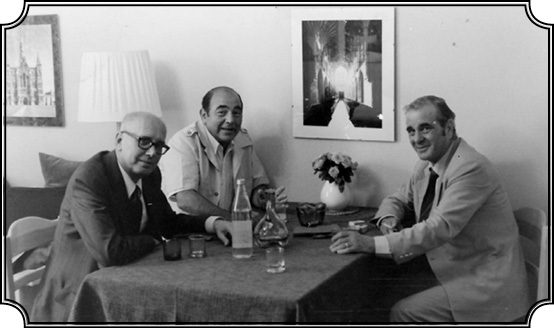
Frankfurt’ta Osman Okyar (Eski başbakanlardan Fethi Okyar’ın oğlu) ve Prof. Ercüment Kuran ile.
Bence çok açık bir zorlama vardı, hem de silahlı bir zorlama vardı çünkü cunta, askeri rejim işbaşındaydı. Eğer öbür türlü olsaydı, yani gönüllü bir “evet” oyu çıksaydı 1983 seçimlerinde Turgut Özal, Kenan Evren’in desteklediği partiyi yenip iktidara gelemezdi, bu durum halkın darbeye karşı tepkisini göstermedi mi sizce?
Bence Özal’ın parti kurması ve iktidara gelmesi çok açıkça iki noktayı vurgulamıştır. Birinci nokta: “Biz askeri müdahaleyi zaruri gördük, kabul ettik.” İkinci nokta: “Fakat askerin siyasi iktidarı ele alıp kalmasını herhangi bir şekilde desteklemiyoruz” demek istenmiştir. ‘Biz orduyu, ordu olarak kendisine verilen vazifeleri yerine getirdiği sürece daima destekleriz, ondan taraf oluruz ama siyaset sivillerin alanı içine giriyor, sivillerin rızası ile hükümetler kurulur, istifa eder’ gibi bir görüşün ileri sürülmüş olmasıdır. Nitekim ben hatırlıyorum, televizyonda seyretmiştim o tartışmayı, üç parti başkanı arasında bir de Turgut Sunalp Paşa vardı, durum çok açık belli olmuştu. Hani Paşa “biz ne dersek o olacaktır, biz devleti temsil ediyoruz, bize oy vermeniz vazifenizdir” gibi bir tavır almıştı. Özal ise gayet sakin olarak, halka halk olarak, kendi başına bir varlık olarak, kendi başına bir iradesi olduğu inancını göz önünde tutarak hitap etmiş ve o tartışmayı açık farkla kazanmıştı. İşin garip tarafı şu, bu tartışmadan bir süre sonra, ben Amerika’ya döndüm ve o tarihlerde, yani 1983’te bir Türk Enstitüsü kurma girişimi vardı. Enstitüsü’nün amacı, Amerika’da Türk Etütleri’ni desteklemek ve üniversitelere para vermek, kitap bastırmaktı. 3-5 milyon gibi döner sermayesi olan bir kurumdu. Ben kurucuları arasındaydım, dört kurucu arasında. İşte bu enstitüyü kurmak için bir toplantı yapıldı Washington’da ve bu girişimi destekleyen ve çok faal rol alan Türkiye’nin Washington sefiri bir yemek verdi. Bu işlerle ilgilenen başka Türkler ve bazı Amerikan ileri gelenleri de davet edilmişti, yirmi-otuz kişilik bir gruptuk. Ben Sefirle konuşuyordum, onun yanında birkaç tane Amerikalı vardı, Amerikalılar Sefire sordular: “Çok yakında seçim olacak Türkiye’de, kim kazanacak sizce?” Sefir asla tereddüt etmeden, “Tabii ki Turgut Paşa kazanacak” dedi.
Sefir kimdi o zaman?
Şükrü Elekdağ. Şükrü Bey hiç tereddüt etmeden “başka kim kazanabilir” dedi. Zaten Turgut Özal’la Şükrü Elekdağ geçinememiştir. Ondan sonra Turgut Bey bir kalp ameliyatı için Houston’a gittiği zaman, Şükrü Bey “sizi görmeye geleyim mi” dediği zaman Turgut Bey “hayır” demişti, “istemiyorum.” Ve ondan sonra onu da oradan çekmiştir, hani aralarında gazetelere intikal eden bazı tartışmalar da olmuştur. Şimdi, benim dikkatimi çeken nokta buydu; bu devletçi görüş o kadar hakimdi ki devlet mensubunda, “biz kimi gösterirsek, halk onu seçer” havasındaydılar. Ben içimden güldüm, “bak” dedim “durumu bilmiyor. Turgut Sunalp Paşa’nın kazanma ihtimali çok zayıf.” Ve nitekim Turgut Özal kazandı. Bu gelişme ise daha evvel görüştüğümüz meseleyi de aydınlatıyor. Evet, “asker yurdun müdafaası için lüzumludur, kuvvetli bir orduya ihtiyacımız vardır ama ordu siyaset dışında kalacaktır” demiştir halk. Bu görüş öteden beri halk arasında çok belirgin bir şekilde mevcuttur ve hâlâ da böyledir. Bence bu Türkiye demokrasisi için çok önemli bir gelişmedir. “Ordumuzu severiz, sayarız ama günlük hayatımıza da sürekli karışmasını istemeyiz” demiştir halk.

Gene Almanya’da Prof. Ercüment Kuran ve Prof.Fikret Adanır’ın eşi Jeane ile (1985).
Bu Ordu bir daha darbe olmaması için zeminleri nasıl hazırladı 12 Eylül’de? Bunu tam bitiremedik daha aslında.
Zemin şurada hazırlanıyor: Kendisinin bir desteği yok artık, tuttuğu bir parti yok, kendisine yakın sayılabilecek MHP’yi de dışlamış, onunla da ilgisini kesmiştir. Ama bütün bunlar ortadan kalktığında ve ordu, her şeyde halkın isteklerine göre hareket eden bir kurum olduğu düşüncesini öne sürdüğünde, sonraki siyasi girişimlerinin de halkın isteklerine uygun olup olmadığını gözetmesi gerekir. Siyasi mantık bunu gerektirmektedir. Bu da Ordu’nun demokrasiyi yalnız lafla, şekille değil, ruhuyla da kabul etmeye yönlendiğini gösterir ki bence doğrusu da budur. Bu belki birdenbire gerçekleşemez, zamanla “eğer Ordu halk ile bütünleşmek istiyorsa, halkın isteklerine göre hareket etmelidir” düşüncesi gelişecektir. Bu şekilde bir düşünceye sahip olacak bir ordu, kolay kolay siyasi girişimlerde bulunmaz. Nisan 2007’de birçok baskıya, iç kaynamaya rağmen Ordu, sözde İslami eğilimli bir Cumhurbaşkanının seçilmesini önlemedi, halkın oyuna hürmet etti. Bu olay bizim görüşümüzü destekliyor.
Ordu’ya layık bir laiklik nasıl olur?
Ama mesela türban ile ve dini öne çıkartan partilerle ilgili tavır sahibidir Ordu. Türkiye halkının gene önemli bir bölümünü meydana getirenlere karşıt olan düşünceleri var. 28 Şubat Muhtırası’nı yine aynı Ordu verdi, yani demek ki orada halk konusunda da bir tercihi var Ordu’nun. Nasıl, kimle bütünleşecek?
28 Şubat Muhtırası bence çok ayrı bir kategoriye girer. Her ne kadar bu da askeri bir müdahale olarak gözükse de aslında bu bazı görüşlerin ifadesinden ibarettir. Fiilen ortaya gelip de “istifa et, git” diye bir şey söylenmemiştir. Evet, işin içinde bir tehdit vardır, bir emir unsuru vardır fakat bu tam manası ile gerçekleşmiş bir tehdit ve emir değildir. Olsa olsa “biz bunu arzu ediyoruz” diye yorumlanabilir. Tartışılabilir.
Ama bu girişim ne Türkiye’de ne dışarıda fazla eleştirilmedi, adeta hoş karşılandı. Neden?
Çünkü Erbakan hükümetinin bazı girişimleri ne kendi partisinin isteklerine ne de halkın isteklerine uygundu. On bir aylık Erbakan hükümeti, bence çok hatalar yaptı. Her ne kadar demokratik usullere uygun olarak iktidara gelmişse, en fazla oyu almışsa da (1995 seçimlerinde), hareket tarzı, alabildiğine ideolojikti ve belirli bir düşüncenin ve belirli bir grubun iktidara gelmesini amaçlıyordu. Bu bakımdan bu muhtıra fazla tenkit edilmedi. Nasıl ki 1960’daki müdahale birçok entelektüel tarafından olumlu karşılanmışsa, bu defa da hatta Refah Parti taraftarınca, ona oy verenler tarafından bile iyi karşılandı, çünkü unutmayınız bir yerde halkın milli gururunu yaralayan hareketler yapıldı. Kaddafi’nin önünde sessiz duran, Kaddafi’nin Türkiye’yi tenkit etmesini normal kabul eden bir Erbakan uzun süre iktidarda kalamazdı. Bazı şeyler vardır ki Türk kamuoyu rahat rahat kabul etmez, milli gurur denen bir şey vardır ki güzel bir şeydir. Nasıl ki Avrupa Birliği’ne, Kıbrıs konusundaki yaklaşımlarına bugün bir dereceye kadar bir direniş varsa o zaman da vardı. Bunlar artık üzerinde oynanacak, taviz verilecek meseleler olmaktan çıkıyor, milli menfaat, milli gurur meselesi haline geliyor. Bir mesele bu hale geldiği zaman da, bu milli menfaat ve gururu desteklemeyen bir insan ve grup büyük oy kaybeder. Benim bu 1980 müdahalesi ve 28 Şubat hakkında genel görüşlerim bu.
1980 hakkında son bir soru. Laiklik konusunu da ele alalım. 12 Eylül’de o zamana kadar tüm darbelerin ana gerekçelerinden biri olduğunu söylediğiniz “laiklik, Cumhuriyet elden gidiyor” gerekçesi hakkında, bir daha artık böyle bir tehdit oluşmaması için Ordu ne gibi düzenlemeler yaptı, ya da 1982 Anayasası’nda nasıl bir güvence sağladı?
Düzenlemeler tamamı ile hukuk alanında kaldı, Anayasa’ya girdi. “Türk Devleti’nin” “sosyal, laik oluşu” dendi ama onun ötesinde fiiliyatta, tatbikatta fazla bir şey yapılmadı maalesef. Yazılarımda, konuşmalarımda durmadan bu meseleye temas ediyorum. Hâlâ laiklik ve din çatışması şu veyahut da bu şekilde Türk siyasetinin mihver noktası olmakta devam etmektedir. İki taraf da fikrini açıkça beyan edip, o yolda gerekeni yapmazsa, bu mesele hallolunmaz. Bir kere iktidara gelen herhangi bir parti; her şeyden evvel halkın kültürünün, kimliğinin bir dereceye kadar İslam’a dayandığını ama İslam’ın hiçbir zaman bir siyasi ideoloji olarak, iktidar nedeni olmayacağını kabul etmeli. Her ne kadar Türkiye’de ibadet, din hürriyeti mevcutsa da yine de bilhassa her şeyden evvel İslami kimliğe öncülük tanıyanların bir dereceye kadar adeta yobaz olarak görülmesini getiriyor. Diğer taraftan laikliği savunma adına hareket ettiklerini söyleyenlerin duruşları zihinlerde bulunan korkuyu, yani laikliğin din aleyhinde bir silah olduğu korkusunu kuvvetlendiriyor. İslam’ı temsil ettiğini düşündüğümüz partilerin ve kimselerin, dini inancın tamamı ile kişisel bir alan olduğunu, Cumhuriyeti, Atatürk’ü, moderniteyi, reformları kabul ettiklerini, bunlarsız olmayacağını açıkça beyan etmeleri gerekmektedir. Yani iki tarafın da birbirini açıkça kabul etmeleri halinde bir dereceye kadar bu din-laiklik gerginliği sona erebilir ve Türkiye’nin, Türk toplumunun enerjisinin daha verimli, kalıcı alanlara yönlenmesinin yolu açılabilir. Her şeye rağmen unutmamak lazım, karşılıklı olarak bu korku hâlâ devam etmektedir. Demokrasiyi tehlikeye sokmaktadır.
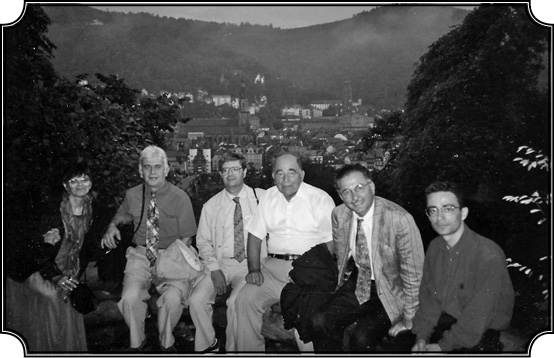
Heidelberg, Almanya Konferansında Profesör Ekmeleddin İhsanoğlu (sağdan 2.), Mehmet Genç (sağdan 5.), ve Suraiya Faroqhi (sonuncu), ortada beyaz gömlekli olan Karpat (1995).
Bugün ordunun “irtica” hassasiyeti ve “laikliği koruma” ihtiyacı duyması biraz da paradoks gibi görünüyor. 12 Eylülcülerin bizzat kendileri dini ön plana çıkardılar, zorunlu din dersleri koydular, İmam Hatiplilerin orduya girmelerini kolaylaştırdılar ve benzeri adımlar attılar. Neden bunlara gerek duydular peki?
Halka dayanma ihtiyacı yüzünden. Söylemiştim size, Ecevit’in hani deyim yerindeyse orduya sırt çevirmesinden sonra ordu, siyasi ve sosyal tabanını, dayanağını kaybetmişti. 1960 ve hatta kısmen 1971, CHP’ye dayanılarak yapılmıştı. Ama Ecevit’ten sonra orduya dayanak oluşturacak bir parti de kalmadı. 12 Eylülcüler halkın geniş kesimlerine dayanma ihtiyacı içindeydiler.
Ama sadece halk desteği ihtiyacı değildi galiba bu adımların nedeni. Çünkü sola karşı ağır bir sindirme operasyonu ile birlikte yapıldı bunlar. Hatta Amerika’nın Sovyetler’i “yeşil bir kuşak”la çevirme stratejisinin bir parçası olduğu bile ileri sürüldü. Siz ne diyorsunuz bu konuda?
Tabii ki sadece halk desteği için değil ama aynı zamanda sola karşı, komünizme karşı mücadele için de yapıldı, öne çıkarıldı bu hususlar. Komünizmden hâlâ çok korkuluyordu o yıllarda. Ama Amerika’nın böyle bir stratejisi yoktu. Zaten Amerika dini hareketleri ve tabanları çok fazla stratejik bir yaklaşım için kullanmaz. Evet, zaman zaman kullandığı olmuştur ama bunlar gelip geçici ve kısa dönemlerde gerçekten “kullanmak” şeklinde olmuştur. Yoksa böyle “Sovyetleri, İslami rejimlerle çevirelim” gibi kendi aleyhine de olabilecek bir destek ve stratejik bir yaklaşım içinde olmamıştır. Dini faktörleri mesela İngilizler ve Fransızlar, Amerikalılardan daha çok kullanmıştır. Dediğim gibi 12 Eylülcüler halkın geniş kesimlerinin onayını, güvenini ve desteğini almak ve komünizme karşı mücadele için, biraz da halkla birleşmek gibi nedenlerle bu dini unsurları öne çıkarmışlardır.
Ama bakın gazetelerde sürekli haberler çıkıyor, makalelerde yazılıyor: Amerikan Dışişleri mensuplarının, CIA’nın hazırladığı ve stratejik tavsiyeler başlığı altında özetlenen raporlar var. Ilımlı İslami hareket diplomatlarını eğitmekten, önderlerini yetiştirmekten, onlarla sağlam ve kalıcı ilişkiler kurmaktan bahsediyorlar. Yani alenen stratejik bir yaklaşımı sunuyorlar.
Tabii Amerika’nın tutumunda önemli bir değişiklik anlamında doğru bu yazılanlar. Yani eskiden Amerika laikleri, modernistleri tutarken şimdi İslam’ı tutmakta, İslam’ı dikkate alarak hareket etmektedir. Bu benim eski bir görüşümdür üstelik. Böyle olması lazımdı. İslam’ın sadece bir din değil, tümüyle bir toplumun değer yargılarını, kültürünü her şeyini etkileyen büyük bir güç olduğunu, her şeyden öte insanların kimliğini biçimlendirdiğini düşünürseniz, diğer taraftan da İslam’ın modernleşmeye, değişime karşı olmadığını ama her şeyi kendi kurallarına göre yaptığını düşünürseniz, o zaman İslam’ı hesaba katarak hareket edeceksiniz tabii ki. Yıllarca İslam’a karşı, bize karşı haçlı mantığıyla hareket etmiş, bizi yok etmek, yok saymak istemiş olan Batı’nın şimdi İslam’ı tanıması “ılımlı İslam, liberal İslam filan diyerek Fethullah Gülen gibi liderlere yaklaşmaya çalışması büyük bir dönüşümdür. Bunu çok daha önce yapsaydı çok daha müspet neticeler alırdı.
Bir de şu açıdan bakalım. Amerika, İran’la, Irak’la, Afganistan’la zaman zaman Türkiye ile, Malezya ile Pakistan ile niye bu kadar içişlerine müdahale edecek düzeyde ilgileniyor, işgal ediyor, darbe yapıyor? Nedir derdi Amerika’nın sizce?
O kadar da fazla müdahale ettiği yok. Sizde bir Amerikan fobisi var. Her şeyin oradan kaynaklandığını düşünmek yanlıştır. Amerika’nın buradaki en büyük endişesi petrol ve enerji kaynaklarının düşman ellere ve ülkelere geçmemesi. Dolayısıyla buna yardım edecek güçleri etkilemek, onlara hakim olmak istiyor, Malezya gibi mesela. Üstelik Malezya, Amerika siyasetinde o kadar yer tutmaz. Endonezya ile kıyas bile edilmez büyüklük olarak. Ama Endonezya’da durum sakindir. Malezya sınır bölgesidir. Çin tehdidi vardır. Amerika Çin’i kendine çok büyük rakip olarak görüyor. Şimdiden tedbirlerini alıyor. Türkiye dahil her devlet, yirmi-otuz hatta yüz yıl sonrasını düşünerek tedbir almalı. Günlük etkilere reaksiyon göstermekle yetinen bir devlet ayakta kalamaz.
Diğerleri de Sovyet sınırındaydı. Bunların tümü şu ünlü “yeşil kuşak” stratejisini doğrulamıyor mu acaba?
Ama ikisi beraber gidiyor. Petrol çok önemli. Petrol olmazsa Amerika’da her şey durur. Hayat bir günde çöker. Amerika aç ve susuz kalır. Bu nedenle Amerika’nın petrol bölgelerini behemehal güven altında tutması lazım. Çin tehlikesi ondan sonra geliyor. Neyse bunlar uzun meseleler.
Ülkedeki İslamcılar’ın yarattığı inanç terörünün geri dönüşü olmayan bir yükselişi ve yayılması var. Hani “sıkılan diş macunu” benzetmesi yapılıyor. “Ilımlı İslam”la başlıyor ama koyu şeriatçı, diktatörlüklerle son buluyor. Bu bir tehlike değil mi sizce?
Şurası muhakkak ki İslam kitlelerinin ezici çoğunluğu ılımlıdır. Ve bunlar ılımlı tutacak bir rejim kurulursa bunlar böyle kalır. Burada da anayasalar, kanunlar ve demokrasi halkın kendi içindeki isteğini açıklamasına izin vermeli, imkân vermeli. Bu “ılımlı” kalır mı, kalmaz mı? Bu da ülke içindeki güçler dengesine bağlı. Herhangi bir ülkede de bu bir denge sorunudur. Gruplar, güçler kendilerini ifade etme hürriyeti bulursa, parlamentoda kendilerini ifade edebilirlerse bir denge kurulabilir. Şimdi ben birçok şeyi söylüyorum ama bir taraftan da her şeye rağmen Türkiye’de Ordu’nun güçlü kalması gerektiğini ama bitaraf kalmasını savunuyorum. Eninde sonunda bir şeye evet ya da hayır diyecek istikamet gene Ordu’dur. Bunlar eninde sonunda Türkiye’nin güçleridir.
İngilizlere göre Ermeni nüfusu
Laiklik ve iktidarın tavrı konusuna son yıllara geldiğimizde tekrar döneceğiz. Artık şu Ermeni meselesine bir girsek... 1985’te siz Kıbrıs’tayken sizi telefonla aramışlardı, sonra ne oldu?
Arayan dostum, Ortadoğu Araştırmaları Cemiyeti var ya bu benim eskiden başkanlık yaptığım (hâlâ içinde faal olduğum), işte o grup içinde bir de Ermeni sorunu konusunda bir panel yapacaklarını söyledi. İşte “panele filancalar katılıyor, Halil İnalcık Bey de var.”dedi. (Halil Bey panelin yapılacağı Chicago Üniversitesi’nde.) “Panele katılıp Andonyan’ın evrakları üzerinde bir konuşma yapar mısınız?” diye teklifte bulundu. Andonyan evrakları meşhur bir sahteciliktir. Sözde, Andonyan isimli birisinin bulduğu evraklarda, İstanbul’dan, merkezden, Suriye’de vali olan birisine gönderilen emirler varmış ve bu emirlerde de “Ermenileri şöyle yapınız, böyle yapınız” vesaire deniyormuş.
Osmanlı üst yönetiminin Suriye’deki valiye gönderdiği Ermenilerle ilgili kıyam emirleri.
Kıyam emirleri.
Andonyan kim tam olarak?
Andonyan, bu sözde evrakları bulan Ermeni. Geçmişini bilmiyorum, “Andonyan evrakları” diye bilinen bir olay bu. Şurası muhakkak ki Andonyan evraklarının sahte olduğu kesinlikle belli oldu, artık onun tartışması yapılmıyor. Şimdi Andonyan evraklarını alıp da tartışma konusu yapmak adeta bu evrakların, bir geçer tarafı olduğunu kabul etmek demektir. “Başka bir konu üzerine konuşurum” dedim. “Ermeni nüfusu üzerinde ve Ermeni orta sınıfı üzerinde bir konuşma yaparım” dedim ve nitekim öyle oldu.
Ermeni meselesini siz hangi dönemde incelemiştiniz?
Benim 1970’ten sonra yazılarım, gerek nitelik, gerek hacim bakımından çok artmıştı. Artık bir sürü konuda araştırmalar yapıp, yazılar yayınlıyordum. Daha evvel bahsettiğim gibi benim ana alanım, “Osmanlı Devleti’nin değişmesi ve yeni bir topluluk yaratarak, bugünkü Türkiye’nin meydana çıkmasına yol açması” meselesidir. Daha doğrusu bugünkü modern Türkiye’nin ve onu oluşturan milletin nasıl kurulduğudur. Benim temel araştırmam budur ve ben bu araştırmadan vazgeçmiyorum. İşte o tarihlerde de çok minnetle andığım bir arkadaşla tanıştım ve onun bana muazzam faydası oldu. Ben üniversitede artık program kurmuşum, Türk Etütleri Programı’nı kurmuşum, Ortadoğu Etütleri’ni kurmuşum ve onun başkanıyım. Ve o program gelişiyor, benim yazılarım sağda solda yayınlandıkça da bu durum üniversiteye ün katıyor, talebe çekiyor. Bunun için üniversite de bana izin veriyor birer sömestr. Ben de sömestri Türkiye’de geçiriyorum veyahut da Fransa’ya, İngiltere’ye gidiyorum. Bu arada İngiliz arşivlerinde gene bu nüfus meseleleriyle yakından uğraşmaya başladım. İngiliz konsolos raporlarını inceledim. Çünkü 1843’ten sonra İngiltere, Balkanlar’da olsun, Anadolu’da olsun en önemli bölgelerde otuz beş kadar konsolosluk açmıştır ve bu konsoloslar, yalnız o bölgedeki haberleri muntazaman, en ince teferruatına kadar Londra’ya bildirmekle kalmazlardı, adeta orada İngiltere’yi temsil eden ikinci bir vali gibi çalışırlardı. Mesela Van’da konsoloslar var ve bunların birkısmı askeriyeden gelmiş, eğitim görmüş, istatistikçi, ekonomist falan. İşte ben İngiltere’de Public Record Office’te, yani İngiliz arşivlerinde çalışmaya başlayınca, bu konsolos raporlarını gördüm ve bu raporlarda, belki de Anadolu’nun ve Rumeli’nin 1843’ten sonra bilhassa 1860’lardan sonra en güzel fotoğrafının olduğunu gördüm. Gün be gün ne olup bittiğini izah ediyorlar. Bilhassa Ermeni meselesine birinci derecede önem veriyorlar. Neden? Biliyorsunuz 1877-78 savaşı “Yeşilköy Muahedesi”yle Martta bitmiş…
Ayastefanos Antlaşması olarak bilinen, evet…
Ayastefanos ki bu tamamı ile Rusların istediği biçimde, büyük bir Bulgaristan yaratan ve adeta Balkanlar’ı Rus tesirine sokan bir anlaşma. (Ayastefanos, Saint Stefanos, yani Yeşilköy’ün bulunduğu yer.) İngiltere bundan memnun değil, çünkü İngiltere’nin bu bölgedeki nüfuzunu hiçe indiriyor. Bunun üzerine tekrar İngiltere’nin baskısıyla Berlin Konferansı toplanıyor ve Temmuzda yeni bir anlaşma çıkıyor. Bu anlaşma her bakımdan çok önemliydi çünkü Balkanlar’da bir sürü yeni ülke yaratıyordu. Romanya, Karadağ, Sırbistan’a istiklal ve Bulgaristan’a otonomi veriliyordu. Berlin Muahedesi, Doğu Anadoluyla ilgili çok önemli bir değişimi de ortaya çıkarıyor. Ayastefanos Anlaşmasına göre, Doğu Anadolu’da yaşayan Ermenilerin bulunduğu bölgelerde reformlar geliştirmek vazifesi ve nezareti Rusya’ya veriliyordu, yani Rusya bu bölgelerde istediği gibi Ermeniler adına reform yapacak, yani orayı Ruslaştıracak, alacak gidecekti. İngiltere buna razı olmuyor, maddeyi değiştiriyor ve yeni bir madde, 16. maddeyi koyuyor. Berlin Muahedesi’nin 16. maddesine göre İngiltere Ermenilerin yaşadığı altı vilayette, Ermeni halkı arasında yapılacak reformlara nezaret edecek. Yani bu anlaşma İngiltere’yi oranın sahibi yapıyor ve İngiltere burada gayet değerli, iyi eğitim görmüş konsolosluklar kuruyor (zaten bir kısmı vardı). İşte bu bölgede bulunan, konsolosların en önemli faaliyetlerinden birisi de bölgedeki Ermeniler ve Ermenilerle ilgili gelişmeler hakkında raporlar yazıp, Londra’ya bildirmek.
Hangi vilayetlerdi bunlar?
Erzurum, Van, Sivas yani bütün Doğu bölgesi. Antep dolayısıyla var. İşte düşününüz ben artık senelerden beri araştırma yapıyor, durmadan okuyorum, fakat bu belgeleri kullanan kaynaklara, hemen hemen hiç tesadüf etmedim. Hayret ettim. 19. yüzyılın en önemli kaynaklarından bir tanesi bu raporlar, içinde hatalar olabilir, tek taraflı şeyler olabilir ama bunlar var işte. Bu raporlardan aynı zamanda 1877-78 Savaşı’nda Balkanlar’daki Türk-Müslüman halkının nasıl katledildiğini, nasıl yerlerinden atılarak, felaket içinde sürüldüğünü gördüm. Türk tarihçilerinin yahut da Batı tarihçilerinin hiçbiri 1877 Savaşı’nda Balkanlar’dan sürülen bir buçuk milyon insan hakkında hemen hemen hiçbir şey söylememişler. O devirde gazeteciler bir şeyler yazmışlar, hatta İngiltere Kraliçesi bile bu fecaatleri görerek, bu konuda bir şeyler yapılmasını istemiş, fakat bir şey yapılmamış. Savaş bitip Berlin Muahedesi imza edildikten sonra da sözde, Müslümanlara karşı yapılan mezalimi inceleyecek bir komisyon kurulması öngörülmüş, ama bu komisyon hiçbir zaman kurulmamış. Bizimkiler de, Abdülhamid de bunu istememiş “aman kurcalamayalım o meseleyi” demişler ve bu mesele böylece örtbas edilmiş. Bir yandan Ermeni meselesi ve Ermenilere karşı muameleler bütün dünyaya duyurulur, Türklerin cinayeti, onların soykırımı olarak gösterilirken, daha birkaç sene evvel, yurtlarından sürülmüş, 300 bini öldürülmüş Türk ve Müslüman hakkında hiçbir şey söylenmiyor. Bizim tarihe de geçmemiş. Aynı öldürme ve sürgüne Yahudiler de maruz kalıyor. Ancak bir iki tane hatıra var, şimdilerde bu konuda bazı şeyler yazılmaya başlanmış. İşte ben onları İngiliz arşivlerinde görüyorum, göçler hakkındaki eskiden kalma ilgim, bir kat daha artıyor. Bu meseleye mutlaka eğilmek gerek ama her şeyden evvel bu nüfus miktarını anlamak lazım. Acaba kaç kişi gelmiş? Kaç kişi gitmiş? Ne olmuş? Kaç Ermeni varmış? Kaç Müslüman varmış? Balkanlar’da ne kadar Müslüman varmış? Ne kadarı gelmiş, ne kadarı ölmüş, gitmiş, bunları tespit etmek lazım. İşte ben bilhassa İngiliz arşivlerindeki o fecaati anlatan raporları gördükten sonra, bu çalışmanın ne kadar önemli olduğunu daha iyi takdir ettim ve daha büyük bir güçle üzerine düştüm. Ama o zaman böyle bir çalışma devamlı olarak benim Türkiye’ye gelmemi, gece gündüz çalışmamı gerektiriyor.
Kaç tarihine kadar bu konsolosluk raporları geliyor, yani 1915’i kapsıyor mu? Yoksa…
Kapsamıyor. Belki dolayısı ile bazı şeyler var. Fakat fazla bir şey yok, belki ben fazla bir şey göremedim, belki vardır. İşte o zaman benimle çalışmış ve hâlâ çalışmakta olan Engin Akarlı beni, Hayri Mutluçağ Bey’le tanıştırdı. Hayri Mutluçağ rahmetli oldu, (Eminsu subaylarındandı) yarbayken emekli edilmişti.
Bu 1960’tan sonraki emekli inkılap subaylarından yani…
Evet, o zaman birkaç bin subay emekli olmuştu, onlardan birisidir. Yarbaylıktan emekli ama Hayri Bey rahmetli, bir araştırmacı. İttihat ve Terakki devrinde okula gitmiş, sonra subay olmuş, alabildiğine cumhuriyetçi, Atatürkçü, modernist ama aynı zamanda çok demokrat, geniş görüşlü ve eski edebiyata ve eski yazılara müthiş hakim. Zaten kendisi bir süre arşivci olarak çalışmış, yani eski harfleri yazmada, okumada büyük bir üstat. Tabii ben de eski yazıyı okuyorum, fakat eski yazıya tam manasıyla vakıf olabilmek için durmadan üzerinde çalışmak lazım. Hayri Bey’in on dakikada okuduğu sayfaları, ben bir-bir buçuk saatte okuyorum. Üstelik o bir sürü incelikleri biliyor, hani her şeyin bir uzmanlığı var, onun için Hayri Bey’e birlikte çalışmayı teklif ettim. Hayri Bey rahmetli oluncaya kadar, aşağı yukarı yirmi üç sene durmadan asistanım olarak çalıştı ve bana kimsenin sahip olmadığı bir sürü malzeme buldu, kitap da buldu. Bir şey oldu mu ben ona rica ediyordum, şüphesiz bir ücret de ödüyordum, kafi miydi değil miydi bilmiyorum ama Hayri Bey’i ben bir insan, her şeyden evvel insan olarak, fevkalade tatlı, bilgili bir insan olarak burada saygıyla anıyorum. Eski devreyi İttihat ve Terakki’yi ve cumhuriyetin ilk devrelerini, o ruhu ve o dili görmek, anlamak için Hayri Beyle dost olmak kafiydi. İşte Hayri Bey sayesinde ben bir sürü malzeme topladım ve nüfus meselesine gerçek manada hakim oldum. Bu çalışmalarla ilgili olarak gerek İngiliz, gerek Türk arşivlerinden elde ettiğim malzemeyi birkaç makale şeklinde yayınladım. Bir çalışma, “Osmanlı Nüfus Defterleri ve 1881-1882 Nüfus Sayımı” adını taşıyor. Bu aşağı yukarı kırk sayfalık, rakamlarla dolu makaleyi 1978 yılında yayınladım. Bu makalenin içinde, Anadolu nüfusu ve bu arada Ermeni nüfusu gösterilmiştir. Ondan sonra…
Rakamları hatırlayabiliyor musunuz?
Evet. Bunları anlatırım. Ondan sonra gene nüfusla ilgili bir sürü araştırmam yayınlandı: “Osmanlı Devleti’nden Amerika’ya Göçler”, “Osmanlı Nüfus Araştırmaları Nasıl Yapılmalı,” Osmanlı şehirciliği ile ilgili olarak, “19. Yüzyılda Kırım’dan Göçler ve Mecidiye Kasabasının Kuruluşu.” Bunun gibi nüfusla ilgili ve ilk defa ortaya çıkarılan bir sürü bilgiyi makale şeklinde yayınladım. Nihayet bu makalelerin çok az bir kısmı olmakla beraber, Ottoman Population, 1830-1914, (Osmanlı Nüfusu) hani aşağı yukarı seksen yıllık bir dönemi kapsayan kitap yayınlandı.
Türkçeye tercüme edildi, evet.
Türk Tarih Vakfı tercüme etti (2002) daha sonra TİMAŞ yayınladı (2010) ama kaç kişi alıp okuyor bilmiyorum. Çünkü çok üzülerek söylemem gerekiyor, Türkiye’de ciddi çalışmalara önem vermiyorlar, kimse bunları okumuyor tek tük ilgili adamlar okuyor. Hatta o kadar inanılacak gibi bir şey değil ki, bakıyorum bundan üç sene evvel bir kitap çıkmış Türkiye’de Göç diye, hatta yazar kitabını imzalayıp bana vermiş, bakıyorum bu kadar uzmanlaşmış sözde bir kitap yazarı, benim bir tek makalemi okumamış. Batı’da benim nüfus üzerindeki yazılarıma referans vermeyen kimse yok. Hatta Ermeni konusunda Ermeni Kıyamları, Tartışılan Bir Genosit adıyla, en güzel kitabı yazmış olan Gunter Lewy dahi benim kitabı kullanmış. 2006’da yazılan bu kitap bence Ermeni konusunda şimdiye kadar yazılmış en tarafsız, gerçekleri olduğu gibi aksettiren bir kitaptır ama baktım Batı’da bu kitaptan kimse söz etmiyor, Türkiye’de de herkes bihaber.
Lewy’nin kitabı Türkçe’ye çevrildi mi?
Türkçe’si yok, İngilizce çıktı. İlginç tarafı şu; bu gibi kitapları New York Times ve başka gazetelerin kitap bölümlerinde tanıtırlar, bu kitabı tanıtmadılar, kasten görmezden geldiler. Türkiye’de de bu kitabı hiç kimse bilmiyor. Lewy kitapta, hatta doğrudan doğruya ismimi vererek “Kemal Karpat’ın görüşüne göre şudur” falan diyor. Neden bu kitap önemli Ermeni konusunda? Çünkü Ermenilerin sayısını, bütün kaynaklara dayanarak karşılıklı olarak vermeye gayret ediyor. Bu kaynaklar nelerdir? Bunların arasında şüphesiz ilk benim yayınladığım Osmanlı 1881 Sayımı’dır. İkinci kaynak, Abdülhamid’in özel olarak yaptırdığı ve şimdiye kadar kimsenin el atmadığı Doğu vilayetleri ile ilgili nüfus sayımlarıdır. Yani Abdülhamid merak ederek “Bu Ermeni sayısı nedir” diye orayı saydırmış ve sonuçlar kendisine sunulan evrakta, “Yıldız Evrakları” arasında kalmıştır. Ve nihayet İngilizlerin sahadaki raporları vardır. İşte bütün bu raporları da alıp hepsini bir arada 1985’te yayımlanan kitabımda gösterdim.
Nedir nüfus sayısı?
Osmanlı Devleti’nde tüm Ermeni nüfusunun, Doğu vilayetleri, İstanbul dahil en fazla 1 milyon 400 bine çıktığı görülüyor. Ermeni Patriği bu konuda Berlin Konferansı’na bir rapor vermiş, “Osmanlı Devleti’nde 2,5 milyon Ermeni vardır” diye. Doğu’da yaşayan ve orada hizmet gören İngiliz konsoloslar, “Bu rakamı sen nereden buldun, nasıl ulaştın?” diye sormuşlar. Bu bilgi kendi aralarında yapılan yazışmalardan anlaşılıyor. Çünkü İngilizler gerçek nüfusun miktarını öğrenmek istiyorlar ve Patrik’e mektup yazarak “bu sayıyı nereden buldun, biz her taraftan araştırıyoruz sayıyoruz, 2,5 milyon yok” diyorlar. Patrik Nerces diyor ki “Efendim biz bu rakamları verirken, mesela Sivas vilayetinde bulunan Ermenileri bir kere Sivas vilayetinde gösterdik. Fakat aynı Ermenileri bir kez daha Erzurum vilayetinde gösterdik ve biz Müslüman nüfusu verirken, göçebeleri, yerleşik nüfusa uymayan Müslümanları katmadık.” Yani böylece “biz kendimize göre hareket ederek, Ermeni nüfusunu 2,5 milyon, Müslüman nüfusu da daha düşük gösterdik” diyor…
İtiraf ediyor yani.
Bunların hepsini itiraf ediyor ve bunların hepsini ben burada yazdım. “Ermeni Patriği Nerces: Ermenilerin Sayılarını Siyasi İstatistik Halinde Değiştirme Çabaları” gibi tercüme edilebilecek makalede bakın yazmışım. Vergi istatistikleri görülüyor. “Manipulation of politics” (Siyasi Manipülasyon), bakın ikinci sayfada. “Memorandum to British, see Armenian manipulation of statistics” (İngiliz Kayıtları, bakınız istatistikler üzerindeki Ermeni manipülasyonları)… İstatistiklere bakınız. Bu can alıcı bir kitaptır, siz bana diyorsunuz, “Ermeniler konusunda ne yaptın?” Ben ana araştırmamı yaptım ve bu kitabı yazdım. Artık bitmiştir. Bir Türk yetkili “Bu çok ciddi bir kitap fakat bu kitabı birkaç uzmandan başka kimse alıp okumadı” demişti. Fakat Ermeniler bu kitaba referans veriyorlar ve her şeye rağmen bana bir saygıları var. Çünkü “Karpat doğruyu söylüyor” diye bir fikirleri var. Hiçbirisi kalkıp da “Karpat yanlıştır” demedi. “Benim kitabımı al oku” demiyorum ama burada hüsnüniyetle çalışmış, gerçekleri olduğu gibi göstermişim. Ve orada nüfus gerçekleri olduğu gibi yazılı. Yirmi sene evvel çıkmış kitap, bunu alıp doğru dürüst anlayamamışlar, okumamışlar, okumuyorlar da. Ama ben unutmayınız yine tekrar ediyorum, Türkiye’yi tanıtacak, Türkleri olduğu gibi gösterecek çalışmalar yapıyorum. Ama bunu propaganda olarak değil, gerçeklere dayanarak herkesin kabul edeceği ölçüler içerisinde yapıyorum. Her zaman böyle yaptığım için de birçok kişiye yaranamadım. 1942 senesinde verdiğim sözü bakınız otuz beş sene sonra, bu kitapları, bu çalışmayı yaparak hâlâ yerine getiriyorum ve bu şekilde devam edecektir.
1915 olayları
Peki, bu çalışma 1914’e kadar olanları kapsıyor. 1915’te Ermeniler bir soykırımdan Türkler de sadece tehcirden bahsediyor, değil mi?
Tehcir var.
Bu nasıl olmuş, ne şekilde olmuş? Şimdi sizin bu konuda tarihçi olarak görüşünüz nedir?
“Tehcir” dediğimiz şey kesin olarak yapılmıştır. Niye? Ruslar ilerliyor, Ermeniler onların ilerlediği bölgelerde oradan alınıyor. Bu arada pek tehlike arz etmeyen bölgelerde de yapılmıştır ama bu tehcir, ne belirli bir plana göre yapılmış ne de onların imhası gibi tek düzeyde bir imha var ortada, ben göremiyorum. Yer yer bazı bölgelerden çıkan Ermeni grupları, valiler şunlar bunlar sayesinde korunarak, kayıp vermeden, tehcir yeri olan Suriye’ye gelmişler. Bazı yerlerde ise bu tehcir grupları hücuma uğramış, bilhassa Kürtler tarafından öldürülmüş, yağmaya uğramış ama bu herhangi bir plana göre olmamış. Yerli halkın husumeti nedeniyle yahut da çapulculuk, mal sahibi olmak, yani gaspçılık amacıyla yapılmış şeyler. Diğer tarafta bazı yerlerde ihmal görülüyor. Bu tehcir edilen Ermenilerin, gıdası, yemeği gereği kadar verilmemiş, onları yeteri derecede koruyacak asker verilmemiş yahut da asker bazen saldırılara göz yummuş. Bu gibi şeyler de var ama bunlar yer yer değişiyor. Çünkü gerçek manada planlı olarak böyle bir şey olsaydı, bu göçmenlerin hiçbirisinin Suriye’ye varmaması gerekiyordu.
Tehcir kaç yılında başlıyor?
1915’te.
Rus cephesinden geriye doğru.
Evet, çünkü 1915’te Ruslar Doğu Anadolu’ya girmiş, nisan ayında Van’ı işgal etmişlerdir, yani orada gerçek bir savaş vardır. Birçok yerli Ermeni çetesi de bazı yerlerde Ruslara katılmış, Osmanlı kuvvetlerine karşı çarpışıyor, bu da bir gerçek. Van cephesi kumandanı Antranik adında bir Ermeni mesela, Rus ordusunda hizmet görmüş, bunun gibi daha birkaç tane meşhur Ermeni komutan var Rus ordusunun başında Anadolu’ya giren. Burada Ermenilerin katkısı oldu, “yoktu” denemez, var burada, yani aşikâr. Doğu Anadolu’yu işgal etmek ve orada bir Ermenistan kurmak amacı da açıkça meydanda. Buna karşı da bir müdafaa var. Yine benim gördüğüm vesikalarda, Ermeni mallarının korunması hakkında hükümetin emirleri var. “Ermenilere iyi bakılması” gibi falan, ama bunlar gösteriş mahiyetinde mi, değil mi bu da ayrı mesele. Türkiye’de de Ermeni davasını sözde açığa çıkarmak isteyen kimseler de yeteri kadar objektif değiller. Bu Ermeni toplantıları burada da yapıldığında, burada olduğum halde davet edilmedim, çünkü ben gayet objektif olarak olayları anlatıyorum. Bu hususta “acaba Ermeni tarafı ne düşünüyor” diye, Dink’le de görüştüm.
Gazeteci Hrant Dink.
Hrant Dink, Agos’u yayınlayan, onunla da görüştüm, hani ödül verildi birkaç gün evvel. (Görüşmenin bu bölümü 2007 Ocak ayında, Hrant Dink’in öldürülmesinden önce 2006 Kasım ayı ortalarında yapıldı.) Hatta bugün dahi gazetenin birisinde ismi vardı. Onunla da uzun uzadıya görüştüm, hatta sanırsam benimle görüşmesini teybe aldı. “Bunu yayınlayabilir miyim” diye sordu, “yayınla” dedim, belki yayınlamadı bilmiyorum ama o da benim görüşlerimin bazılarına katıldı, bazılarını soğuk karşıladı. Çünkü o da benim Ermeni tezini yüzde 100 desteklememi bekliyordu ama gerçek o da değildi.
Dink tez olarak ne ileri sürüyordu?
“Bu bir kıyamdır, vardır ve bu kısmen örgütlenmişti” gibi bir şey. Ermeni tezine daha ılımlı bir şekilde yaklaşıyordu. Ermeni diasporasının Türkleri varlıklarının tek hedefi olarak görmesini kınamıştı. Ama Dink’le hiç olmazsa konuşabiliyorsun, Malatya’da doğmuş, büyümüş bir Ermeni. Ona yakınlık duydum, bu toprakların, Türkiye’nin evladıydı…
Ermenilere göre ne kadar Ermeni öldürüldü?
Ermeniler arasında da bu konuda kesin bir şey yok. Bir ara bir Ermeni Patriği “Sayı o kadar değil, 600 bin Ermeni öldü” demişti. Ona karşı kıyametler koptu bilhassa Ermeni diasporasından “Olmaz, yalan söylüyorsun, yanlışsın” dediler.
Onlara göre bir buçuk milyon Ermeni öldürüldü.
Ama bir buçuk milyon Ermeni öldürülmüşse o zaman Doğu Anadolu’dan Rus işgali zamanında bugünkü Ermenistan’a göçen bir milyon Ermeni’nin hesabı nerededir? Çünkü hakikaten 1917’de Rus orduları Doğu Anadolu’dan çekilmeye başlayınca bir milyona yakın, belki bir milyondan fazla Ermeni onlarla beraber kuzeye gitti ve bugünkü Ermenistan’a yerleşti. Doğu Anadolu’nun Ermeni halkından sıyrılmasının ana nedeni Erivan’a giden, bugünkü Ermenistan’a giden göçlerdir, bunu bizzat Ermeni tarihçileri de kabul ediyor. Fakat onların görüşü şöyle: “İki buçuk milyon Ermeni vardı, bir milyonu Rusya’ya gitti, bir buçuk milyonu öldürüldü.” Hâlbuki biz diyoruz ki, “Elimizdeki bütün evraklar Ermeni sayısının en fazla 1 milyon 400 bin (daha doğrusuna bakmak istersen 1 milyon 250 bin civarında) olduğunu gösteriyor. Bu Ermenilerin 1 milyonu Erivan’a gitmiştir, birkaç yüz bini Suriye’ye gitmiştir o halde kaybolan ne kadar? 100 bin, 150 bindir, Allah rahmet eylesin ve ölüm hiçbir zaman tasvip edilmez ama şüphesiz ki bu miktarlar kasten abartılıyor ve Türkleri kabahatli göstermek için bu şekilde şişiriliyor. Ama bitirmek için şunu da söyleyeyim, Ermeni meselesini yeni bir şekilde ele almak lazımdır.
Nasıl mesela?
Yeni şekilde. Mesela tehcirin yapıldığını, Ermenilerin bazılarının kasten öldürüldüğünü kabul etmek lazım ama Ermenilerin tümünü geniş çapta yok edecek planlı bir katliam olmadığını belirterek. Bu şekilde kısmen kabahat yüklenerek kabul ederiz ama meselenin bu şekilde de halledileceğini sanmıyorum. Çünkü bu işi yürüten Ermeni milliyetçilerinin amacı gerçekleri olduğu gibi meydana çıkarmak değildir. Amaç Türkiye’yi bin bir dereden su getirerek zorlamak ve bu kıyamı kabul ettirmektir. Kabul ettikten sonra da onun tazminatı var.
Devletin kısmi de olsa kıyamı kabul etmemesinin temelinde, arkasından gelecek bu toprak ve tazminat talebi korkusu mu var?
O da olabilir fakat şurası da muhakkak ki bizde de bu konuda aşırı uçlar vardır, onlar da gerçekleri olduğu gibi kabul etmiyor. Bugünkü hükümetimiz, “efendim tarih konuşsun” diyor, tarih konuşsun evet, fakat uzun müddet arşivleri açmadılar. İş işten geçtikten sonra arşivleri açtılar. Ama yine de arşivlerin açık tutulması, bizim konuşmaya açık olmamız (ön şartlar konmadan), bu şekilde bir yaklaşım bence en doğrusudur. Fakat bugün Avrupa’da bu konuda kesin, belirli bir kanaat vardır; “Türkler bunu yaptı, cezasını çekmelidir” gibi. Ve bu iki taban tabana zıt, aşırı görüş hakim oldukça bu mesele de böyle sürüncemede kalır. Fakat netice itibari ile bu konuda halen aşırılar konuşmaktadır. Türkiye’de bu konuda daha ılımlı düşünen, objektif düşünen kimseler de vardır. Bu konuda kitaplar yayınlayan sağlam bir akademik temeli olmayan, bir yerde vazife bulamamış ve Ermenileri savunarak yer bulmuş, maaş alan kimselere benim itimadım yoktur ve onlarla görüşmek de istemem. Şimdi bu dönemi bitirmek için şunu da söyleyeyim. Ortadoğu Etütleri Cemiyeti’nin Chicago toplantısında, bir panel yapıldı (1985 yılı olabilir). Panelde gayet ılımlı bir şekilde; Ermenilerin Osmanlı Devleti içindeki rolünü, Ermenilerin Osmanlı Devleti’nin bir parçası olduğunu ve bunun bu şekilde hâlâ bu cemaatin küçülmüş haliyle Cumhuriyet döneminde devam ettiğini belirttim. Ama bunun için karşılıklı hoşgörü içinde oturup konuşmanın gerektiğini falan söyledim ve orada Türk görüşünü belirttiğim gibi burada kabahatli olarak her şeyde Türkiye’yi göstermenin yeri olmadığını falan anlattım. Bu sorunun çözülmesi Ermenileri “Türk” fobisinden kurtararak, dünyayı ve insanları daha gerçkçi görmelerini sağlayacaktır. Bu kadar parlak bir entelektüel ve sanat tarihi olan Ermenilerin “Türk” fobisine saplanıp kalmaları ufuklarını daraltmaktadır.
Bu önerinize tepki göstermişlerdir, sizi kürsüden inmeye davet etmediler mi?
Bunun çok ilginç etkisi oldu. Toplantıdan sonra yanıma Avedis Sanciyan geldi. Avedis Sanciyan, Kudüs’te doğmuş ve Ermeni edebiyatı ve dili üzerinde uzmanlaşmış, dünyaca tanınmış bir Ermeni profesörü. Ben Harvard’da bulunduğum zaman (1960’larda), Avedis Sanciyan da orada Ermeni Dili ve Edebiyatı profesörüydü. Aynı Ortadoğu Enstitüsü içinde çalışıyorduk, tanıştık, ahbap olduk. O zaman ben Avedis’e (ılımlı, efendi bir adam), “Ya Avedis” dedim “bak bu Ermeni-Türk meselesi sorunu durmadan tartışılıyor ama bu ne Ermenilere ne de Türklere bir çıkar sağlıyor, bu tartışmanın uzun sürmesi iki tarafa da zararlıdır.” “Gel” dedim “bir Türk Ermeni komisyonu kuralım biz kendi aramızda. Üç Ermeni, üç Türk, bu meseleyi beraber tartışalım, bu konuda bir şeyler yazalım.” Avedis 1960 yılında bana derhal, “böyle bir şeyi yapmak için her şeyden evvel, Türkiye’nin jenositi kabul etmesi gerek” demişti, hani bugün söylenen o zaman da söyleniyordu. Neyse 1985’te Chicago’daki o toplantıda Avedis de vardı. Toplantıdan sonra bana geldi “Kemal tebrik ederim” dedi “bu konunun başka bir yönü olduğunu, şimdi anladım ve senin bana bundan yirmi beş sene evvel teklif ettiğin bir Ermeni-Türk komisyonunun artık kurulmasının zamanının geldiğini sanıyorum” dedi. Çünkü Avedis Los Angeles’ta California Üniversitesi’nde yeni vazife almış ama oraya aşırı derecede diaspora milliyetçisi Richard Hovannesyan hakim olmuş, o da buna tepki duymuştur.
Rumlar da, biz de Roma’nın halefleriyiz
Başka konulara geçeceğiz ama hazır bu konulara girmişken gene sizin uzmanlık alanınızla ilgili bir konu üzerinde sohbet etsek… Sizin Romanya’yı terk etmenizden bu yana birçok ülkenin ismi, sınırları değişti, Yugoslavya dağıldı, yeni cumhuriyetler kuruldu. Bu ve benzeri gelişmeleri siz de incelediniz, yerinde gördünüz, bu milli devletlerin kuruluşları konusunda resmi tarihlerden farklı olan görüşünüzü anlatmıştınız. Bu devletlerin kuruluşunda din faktörünün önemi nedir?
Önemli tabii. Mesela Yunanlılar’ın geçmişiyle ilgili tartışma sürmektedir. Yunanlıların ana kimliği nedir? Eski Helen medeniyeti var. Bu Helen medeniyeti bildiğiniz gibi uzun süre Ege’de yaşamış ve ondan sonra Batı Anadolu kıyılarına taşmış, oraları işgal etmiş. “İyonya devri” var. Bu eski Helen devri pagan, büyük şeyler yaratmış ama ilahi bir dini olmayan, materyalist dünya görüşüne sahip bir topluluk. Sonra bu Helen medeniyeti, Batı’nın, Batı Rönesansının da bir çeşit kaynağı olarak gözüktü. Ondan sonra Hıristiyanlık giriyor, Hıristiyanlaşmış Doğu Roma İmparatorluğu (Bizans) ise bütün Anadolu’yu ve Balkanlar’ı değiştirerek buraya yeni bir kimlik getiriyor ki o kimlik de Ortodoks Hıristiyan kimliği. Ve bunu da en iyi temsil eden Bizans. Bizans kurulduktan sonra ilahi din olarak aldığı Ortodoksluk, pagan dini reddediyor ve böylece Bizans kendine mahsus, eski Helenlerle bağı adeta olmayan yeni bir medeniyet olarak ortaya çıkıyor. Modern Yunanistan kurulunca (18. yüzyılın sonunda yahut da 1821 Rum isyanıyla) yeni bir ülke oluyor. 1828 Edirne Anlaşması ile Yunanistan Balkanlarda ilk müstakil milli devlet olarak ilan ediliyor ama Başkanını Almanya’dan ithal ediyor, ayrı mesele.
Yani nasıl ithal ediyor, geçerken kısaca da olsa dinleyelim?
Otho (Saxa Coburg), Kral olarak Yunanistan’ın başına getirilen bu kişi Coburg hanedanındandır, Alman asıllıdır. Kral Otto ya da Otho olarak tanınır daha ziyade. Yunanlıların hamileri bu yeni kurulan devletlerin kendi kendilerini idare edemeyeceklerini düşündüler, bilhassa İngilizler böyle düşünüyordu. Devlet başkanlığı tecrübeleri olan hanedanlardan kişileri bu devletlerin başına getirme geleneği yerleşti. Nitekim Romanya kurulurken de böyle oldu. Eflak ve Boğdan 1858’de birleşip Romanya adıyla yeni bir devlet olarak ortaya çıkarken Alman Hohenzollern ailesinden I. Carol’u başa getirdiler. O dönemde şeklen de olsa, hukuken buralar hâlâ Osmanlı’ya ait göründüğünden Osmanlı’nın da onayını aldılar. Hatta I. Carol Türkiye’ye geldi, Ali Fuat Paşaları ziyaret etti. Zaten Rusya’ya karşı tampon devlet yaratma fikri vardı Osmanlı’da. Böylelikle Romanya doğmuş oldu. Yunanistan’da aynı şeyi uyguladılar. Alman hanedanından tecrübeli birini Kral olarak başa geçirdiler. Fakat daha sonra askerlerin bir darbesiyle uzaklaştırıldı. Ondan sonra da Danimarka kökenli Gluckenburg hanedanı mensubu Prens George, Kral George olarak geldi, 1863’te. Onun oğlu Constantine, Yunanlıların Anadolu işgali sırasında baştaydı. İşgali planlayan Venizelos başarılı olamayınca 1920’de istifa etti. Tüm kumanda Constantine’e geçti. Ama ilk kral Otho ve ikinci kral George, her ikisi de Megali İdea’yı ortaya atan ve geliştiren ithal krallar olmuştur. Mesela Otho, 1844’te Yunanistan’ın sınırlarının neredeyse Rumların vaktiyle yaşamış olduğu tüm Anadolu bölgelerine kadar uzanması gerektiğini söylemiştir, aynen şu cümlelerle: “Yunanistan Krallığı bugünkü Yunanistan değildir. Bugünkü Yunanistan, o büyük, olması gereken Yunanistan’ın çok küçük, çok fakir bir parçasıdır. Kendini Rum, Yunan sayan insan yalnız Krallık içinde yaşayan değil, aynı zamanda Yanya’da, Selanik’te, Serez’de, Konstantinopol’de, Edirne’de veya Trabzon’da, Girit’te, Sisam’da yaşayan veyahut Rum tarihine ait herhangi bir bölgede yaşayan insandır.” Sonra gelen Danimarkalı Kral George da, sadece Yunanistan’daki değil tüm diğer yerlerde yaşayan Rumların da kralı olarak yemin etmiştir.
Tekrar konumuza dönersek, yani esas olarak Yunanistan’a bugünkü kimliğini Ortodoksluk mu vermiştir?
Şimdi Yunan milli tarihi böylece iki kaynakla karşı karşıya. Şunu soruyorlar: “Bizim eski Helenlerle ilişkimiz nedir? Bizanslılarla ilişkilerimiz nedir? Bize bugünkü kimliğimizi veren kimdir?” Bence bugünkü Yunanistan’a kimliğini veren Bizanstır. Çünkü bugünkü Yunan toplumunun kimliğini, psikolojisini vesairesini oluşturan şey, Ortodoks Hıristiyanlıktır. Dilleri eski Helenlerden kalmadır ama hangi dil? Çünkü bir tek Yunan dili yoktur. 19. yüzyılın başında en azından bugünkü Yunanistan’da yedi Helen dili konuşuluyordu; bunların hangisi? Sonra birisini seçtiler, bugünkü Yunan dili yaptılar. Bunun gibi Sırpların da kendine mahsus bir tarihleri vardır, onlar da bir zaman imparatorluk kurmuş ama Osmanlı’dan evvel birbiriyle çatışmışlar. Çünkü bir ara Balkanların önemli bir kısmına Bulgarlar hakim, sonra Stefan Duşan zamanında Sırplar hakim olmuş, hatta bir ara Dobruca’nın bir kısmına Ulahlar hakim olmuş. Onun için onların milli tezi, yalnız Türkleri rakip olarak almıyor, aynı zamanda bölgede yaşayan Rumları, Sırpları da rakip alıyor. Yani her birinin, kurulmuş diğer milli devletler hakkındaki görüşü çatışma halinde. Hâlbuki Osmanlı oraya gidip yerleşince onların diline, dinine hiçbir şeyine ilişmemiş ama onların iç kavgalarına son vererek “Pax Ottomanica”yı kurarak bu bölgenin hiç olmazsa iki yüz elli yıla yakın sulh içinde yaşamasını temin etmiştir. Her yeni kurulan milli devlet tonlarca tarih kitabı yazmış, kendi tezini destekleyecek çeşitli argümanlar, olaylar öne sürmüştür. Bu tezler, gördüğünüz gibi Türkleri, Osmanlıları tamamıyla dışlar. Burada yaşayan Türklerin ve bilhassa Müslümanların, buranın yabancı unsuru olduğunu, dışarıdan gelmiş, zorla yerleşmiş unsurlar olduğunu söyler ve onun için Osmanlıları, Türkleri ‘geldiği yere göndermek ve yok etmek meşrudur’. İşte bu tez ışığında milli devletler kurulurken ve kurulduktan sonra Balkanlar’daki Türk ve Müslüman halk katledilmiş, birçok yerde ekseriyetteyken azınlığa düşmüş, o da yetmiyormuş gibi temizlenmiş. Büyük göçler var. 19. yüzyılda Balkanlar’dan büyük göçler, bu tarih ışığı altında yaptırılmış, zorla yaptırılmıştır ve bu 20. yüzyılda da, günümüze kadar devam etmiştir ve hâlâ devam ediyor, değişik şekillerde.
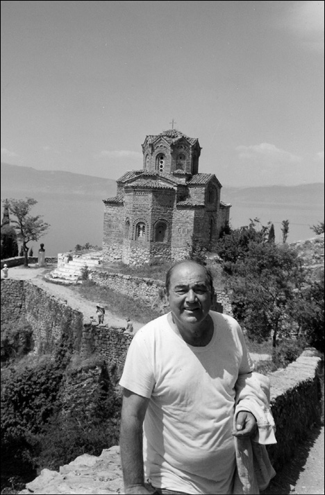
Makedonya, Ohri’de Aziz Klement Kilisesi. Bizans’ın Balkanlara Hıristiyanlığı yaymasında çok önemli rol oynamıştır ve ülkenin en önemli anıtlarındandır (1992).
Bu “millileşme” ve “milli devlet” meselesini biraz açalım isterseniz.
Yani şöyle demek istiyorum. Baştan alalım. Osmanlı Devleti’ne karşı ilk milliyetçi denilebilecek hareket 1804’teki Sırp İsyanı’dır. Karageorgeviç liderliğinde (Avusturya ordusunda subaydı bu kişi) gelişen bu isyan, baştan milliyetçi bir isyan değildi, sosyal talepleri vardı. Sırp köylüsünün topraklarına el koymaya çalışan Yeniçeriler ve yamaklarının gaspçı, talancı davranışları karşısında Osmanlı yetkilileri görevlerini yapmaya çağrılıyordu. Bunun üzerine Osmanlı bu isyancıları korumak için onlara silah verdi. Yeniçeri yamaklarının saldırılarına karşı Osmanlı, isyancıları korudu ve destekledi. Fakat bir süre sonra bu silahlar Osmanlı’ya karşı kullanıldı. Sosyal protesto şeklinde başlayan hareket bir yıl içinde siyasi bir harekete dönüştü. Bu dönüşümde Avusturya’nın da parmağı var, Karageorgeviç’in ise büyük rolü var. Ama bu hareket aynı zamanda Sırp zengin toprak sahiplerini de rahatsız etti. Onlar da bu hareketi durdurmak ya da kontrol altında tutmak istediler. Miloş Obrenoviç diye bir adam seçtiler. Bu Obrenoviç de Karageorgeviç’i yakaladı, başını kesti ve İstanbul’a gönderdi. 1815’te artık lider Miloş Obrenoviç’ti. Akıllı bir adam, iyi bir diplomattı. Osmanlı ile arayı iyileştirdi, tebaa olarak ilişkileri sürdürdü ama o arada Sırp kadrolarını hazırladı. Eğitim yaptırdı. Sırbistan o devirde devlet olarak ortaya çıkmadı ama çıkması için elinden geleni yaptı. 1834’te resmen Sırp Kilisesi kuruldu ve Osmanlı da bunu tanıdı, kabul etti.
Ama Yunanistan daha önce kuruldu değil mi?
Milli devlet bakımından meseleyi ele alırsanız ilk milli devlet Yunanistan’dır. Yunan hareketi 1820-21’de Mora’da başladı. Hakiki sosyal bir ayaklanma, papazların büyük rol oynadığı bir ayaklanma idi. Bilhassa İngilizler’in desteği ile bu ayaklanma yayıldı ve yavaş yavaş başarı sağladı. Ama bu başarının en önemli mimarı Tepedelenli Ali Paşa idi. Ali Paşa, aslında merkezi devlete itaat ediyor ve Rum milliyetçilerini kontrol altında tutuyordu. Çünkü onun bölgesi stratejik olarak Yunanistan’a hakimdi. Yanya bölgesindeydi. Fakat II. Mahmud onu ölüme mahkum edince, o da Osmanlı’ya karşı döndü, bazı Osmanlı ordularını da yendi ve bu orduların Mora’ya gidip Yunan isyanını bastırmalarını engelledi. Eskiden Osmanlı’nın orada hâkimiyet kurmasını sağlayan, bunu güçlendiren, yardımcı olan Tepedelenli Ali Paşa şimdi isyanın destekçisi olmuştu. Yunanistan halkı arasında onun hakkında destanlar olduğu söylenir.
II. Mahmud onu niye ölüme mahkum etmişti?
Çünkü bunlar “ayan”dı. Ve II. Mahmud bütün kuvvetli, nüfuz sahibi olan ayanları ortadan kaldırıp devletin merkezi otoritesini her tarafa yaymak ve güçlendirmek istiyordu. Hâlbuki Osmanlı idaresi her zaman yerel otoritelere geniş salahiyetler vererek ayakta kalabilmişti. Yüzyıllar boyunca Osmanlı hâkimiyeti, yerel gruplarla ve onların ileri gelenleri yani ayanlar sayesinde sağlanmıştır. Bunun yanında isyan bayrağını ilk kaldıranlardan biri olan Vidin Ayanı Pasyanoğlu’nu da anmak gerekir tabii.
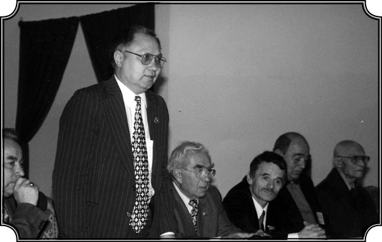
Köstence’de bir toplantıda. Sağdan ikinci Karpat, üçüncü Kırım Konseyi başkanı Mustafa Cemiloğlu ve onun yanında da eski kültür bakanlarımızdan Ahmet Kırımlı, AP Balıkesir Milletvekili.
Tepedelenli Ali Paşa Rum asıllı mıydı ki?
Hayır, Arnavut asıllıydı ama Rumlara çok büyük destek verdi. Rumlar onun hakkında destanlar yazdı. Yunanistan tarihinde yeri çok büyük ve olumludur. Nitekim ondan sonra İngilizler de müdahale ettiler ve Osmanlı donanmasını batırdılar. (İnebahtı). Osmanlı devleti Mora’ya asker gönderemediği için Mısır’ın hakimi olan Mehmet Ali Paşa’dan yardım istedi. Mehmet Ali Paşa da oğlu İbrahim Paşa’yı bir donanmayla Mora’ya gönderdi. Buna karşı sözde, II. Mahmud Suriye’yi vermeyi vaad etmişti. Tabii isyan bastırılamadı. İngilizlerin müdahalesi vardı. Neticede Rusya da harbe girdi. Ve 1828-29’da Edirne Muahedesi ile Yunanistan’ın bağımsızlığı tanındı. Milli devlet olarak ortaya çıktı. Ama isyanlar devam edecekti. Burada en büyük kabahat, merkezi devlet adına II. Mahmud’undur. Eski otonomileri korumak isteyenleri yok etmek istemesidir. Ayanların birçoğunu kesti astı. Sonra ne oldu? Eskisinden daha kötü oldu. Bir başarı sağlamadığı gibi hepsi kaybedildi.
İlk isyanlar başladığında Yunanistan’ın sınırı Atina’nın civarındaydı. Sonra sonra yukarı çıktı ve Balkan harbinde Güney Makedonya’yı alarak bu günkü duruma geldi. 1991’den sonra Yugoslavya’nın çökmesiyle birlikte bağımsızlığını ilan eden Makedonya Cumhuriyeti’ni (Kuzey Makedonya) ise tanımıyor.
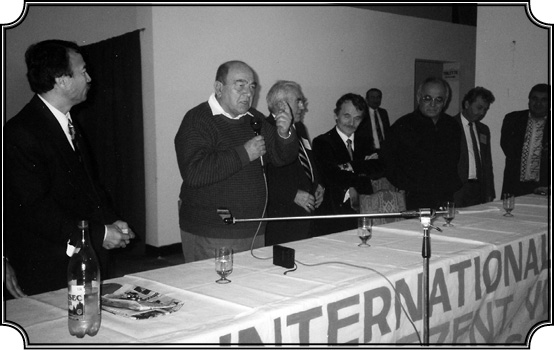
Köstence’de “Geçmişte ve Günümüzde Tatarların Türk Dünyasında Yeri” konulu uluslararası konferansta (1998).
Peki, “bizim millileşmemizin Yunanistan’dan daha önce” olmasından tam olarak ne kastediyorsunuz?
Millileşmekten kasıt Türk siyasi bilinci. Önce Osmanlı’da Müslüman bilinci vardı. O zaman kendini tehdit altında hisseden Müslümanların bunu savunma bilinci vardı. Sonradan bu bilinç siyasi, milli bir bilince dönüşüyor. Bu da Abdülhamid devrinde oluyor. Dini bilinç ile siyasi bilinç birbirine karışıyor, siyasi bilinç ağır basmaya başlıyor. Siyasi Müslüman-Osmanlı bilinci haline geliyor. O zaman “Osmanlı Türk müdür, değil midir?” diye tartışmalar başlıyor. Osmanlı bilincinin Türk milli bilinci haline dönüşmesi İttihat ve Terakki devrinde gelişiyor. Ve nihayet Atatürk’le, bu tamamen gerçekleşmiş oluyor. Fakat Batı’nın ve Rusya’nın emperyalizmine karşı direnme var, yani “milli bilinç” bu anlamda eskiden de var, toprakları koruma şeklinde var. Eskiden mevcut olmayan, “bu topraklar bizimdir” bilinci ortaya çıkıyor. Topraklar elden gitmeye başlayınca “topraksız vatan olmaz” düşüncesi gelişiyor. Hâlbuki eskiden Padişah adına yapılırdı her şey. Şimdi toprakları savunma ile vatan fikri birleşiyor. Osmanlılık siyasi bir kavramdır. 1839’dan sonra başlamış bir fikirdir. Tabii burada her ne kadar resmen eşitlik varsa da esas olarak Osmanlı’nın Müslüman tebaası bu toprakla, vatanla, Osmanlılıkla özdeşleşiyor ve çok karışık, uzun uzadıya anlatılması gereken bu oluşum sonunda gayrimüslimler bunun dışında kalıyor. Dışlanıyorlar bir bakıma. Avusturya ve Rusya gibi dış siyasi destek ve teşviklerle, Avrupa’dan gelen ideolojik milliyetçilik fikrinin de etkileriyle de bu şekilde ayrılmış olan, din esasına göre ayrılmış olan kitleler, siyasileşiyor, “millileşiyor.” O zaman gayrimüslimlerin milli hareketi gayet mantıki, kaçınılmaz bir sonuç oluyor. Aynı şekilde OsmanlıMüslüman-Türk bilinci de modernleşmeyle birlikte gelişiyor. Ama laik anlamda milliyetçilik ancak Atatürk’le birlikte oluyor.
Ama Yunanlılarda da etnik bir devamlılık yok mu?
Başka gruplarda olduğu gibi onlarda da etnik devamlılık var fakat bu siyasi devamlılık değildir, bunu anlatmak istiyorum. Türklerde de etnik devamlılık var ama siyasi devamlılık hatta aşiret dışında devlet seviyesinde bilinçli olarak yoktu. Biz sonradan bunu siyasileştirdik, Rumların yaptığı gibi. Unutmayınız ki Türkiye’de de bir milli devlet kuruldu 1923’te ve bu milli devlet, ondan sonra tarihi millileştirmeye kalktı ki kısmen Fuad Köprülü’nün de “milli devlet”, “Türk devleti” teziyle yaptığı bu. Fakat biz bu işi doğru dürüst yapamadık, bizde devamlılık başkalarına nazaran çok daha fazla olmasına rağmen, biz bu işin teorik tarafını arzu edilir şekilde işleyemedik. Anadolu ve Rumeli’de devamlı bir şekilde bir Türk unsuru bulunmuştur ve Türk dili mevcuttur. Bu hiçbir zaman inkâr edilemez, burada güçlü bir grup vardır. Çünkü birçok güçlüğe rağmen, bu etnik grup kendi etnik kültürünü ve hatta bilincini muhafaza etmiş. Bunlar kendilerine “Türk” diyorlardı, “Türkmen” diyordu ama bilinen Türk’tü o. Hâlâ “Türkmen” der Irak’takiler. Bu devamlılıkla, buradaki gerçek olup bitenle, sonradan siyasileşmiş düşünceyle karşılaşınca, bunların nasıl şekil aldığı meselesini tartışıyorum. Bir yerde olaylar mevcut, diğer tarafta bu olayların yorumu mevcut, yani olaylar açısından alırsanız Rumlarda da bir devamlılık var, bizde de bir devamlılık var ve çok benzerlik var. Yani Helen’in Rumlar olarak gelişmesiyle, Türkmen’in Selçuk ve Osmanlı olarak gelişmesinde bir paralellik var. Çünkü bir yerde Rumlar da biz de din farklarına rağmen Roma kültürünün, Roma’nın halefiyiz. Etnik kimliğimizi, dilimizi korumakla beraber sosyal, siyasal örgütlenme ve bilinçlenme bakımından onun mirasçılarıyız. Bizi Avrupa’ya en çok yaklaştıran da budur. Bir yerde evet Asyalıyız ama bir yerde de Avrupalıyız. Bugünkü Türkiye, Osmanlı’ya doğru dürüst bağlanırsa ve Osmanlı’nın gerçek yaşayışı, düşüncesi, hoşgörüsü gibi sosyal, kültürel mirasları içinde ele alınırsa o zaman Türkiye daha iyi anlaşılır ve bir yandan Osmanlı’ya diğer yandan Asya ve Avrupa’ya bağlanan kökenleri, derin kökenleri daha iyi ortaya çıkar. Bazı şeyleri tepeden inme yaratabilirsiniz ama birçok duygu, davranış, görüş, beklenti gibi şeyler toplum içinde yoğrularak, zamanla yaratılmıştır. Bunlar siyasi rejimler gibi bir anda değiştirilemez.
Balkanlar’da milli devletler biraz da Türk ve Müslüman düşmanlığı temelinde oluşuyor diyordunuz. Son olarak Bosna savaşında bunlar yaşandı galiba…
1992-95 Bosna Harbi’nde yaşananlar budur işte. Tabii Balkan tarih tezinin, yani ‘Türklerin dışarıdan gelmesine karşı onların oraların yerlileri olarak binlerce yıl yaşadıklarına’ dair tezin çürük bir tarafı var. Çünkü Anadolu’dan gelip Balkanlar’a yerleşmiş bir halk var. Türkler bunlar; Türkmenler bilhassa.
Ama diğer taraftan Balkanlar’da Osmanlı olmuş, İslam’ı kabul etmiş ve Türkleşmiş yerli halk da var. Müslüman olmuş Boşnaklar, Hırvatlar, Pomaklar, Ulahlar, Rumlar var. Girit’teki Rumlar var. Bunların büyük bir kısmı Türkiye’ye göçtükten sonra da kendi dillerini konuşmaya devam etmişler. Bunlar, dilleri farklı olmakla beraber kendilerini Müslüman, Osmanlı ve Türk sayıyorlar. Bunun üzerinde fazlaca durmaya gerek görmüyorum, çünkü bilinen şeylerdir. Böyle olunca da mesele tamamı ile din ayırımına girmiş oluyor, Türk demek, eşittir Müslüman. Böylece “Müslüman olan kim varsa yabancıdır, atılmalıdır!” Balkanlar’da en korkunç olay bu olmuştur. Milli tarih, aslında milli tarih olmaktan ziyade, dini tarih olmuştur. Kurulan tüm milli devletler Hıristiyan Ortodokstur ve Hıristiyanlık onların benliğinde birinci derecede rol oynamıştır. Mesela bayraklarında haç vardır, çeşitli dini semboller vardır. Yani Balkanlar’da, siz dini, etnik kökenden ayıramazsınız. Bir yerde Balkanlar’ın milliyetçiliği ile din ayrılmazdır, dine dayanan ve gizli bir şekilde ırka dayanan milliyetçilik. Bu milliyetçiliğin ilk hedefi Müslümanlar ki burada fark etmiyor Türk mü, Boşnak mı… İkinci hedefi ise kendinden olmayanlardır. Bulgarlar Rumenlerden nefret eder, Sırplar Bulgarları sevmez, Arnavutları hiçbiri sevmez…
Bulgaristan’ın Umre’ye katkısı
Bulgaristan’daki anti-Türk, anti-Müslüman uygulamalar nasıl oldu ve nasıl sonuçlar verdi sizce?
Biliyorsunuz Bulgaristan’da daha 1980’lerde orada bulunan tüm Müslümanları Bulgarlaştırma kampanyasına girişildi. Bu da isim değişimine zorlamakla başladı. Başta Pomaklar (Bulgarca konuşuyorlardı) ve nihayet Türkler. Zamanında oradaki Bulgarların zorla Türkleştirildiği ve Müslümanlaştırıldığını ileri süren Bulgarlar, dolayısıyla bu uygulamaya “tekrar ana gövdeye getirme” adını takıp, isim değiştirmeye zorlamakla kampanyayı başlattılar. Bu hareket her şeye, tarihe, insanlığa, demokrasiye, Birleşmiş Milletler yasalarına, Bulgaristan’ın kendi yasalarına, daha evvel takip ettiği politikalara taban tabana zıttı. Aslında bir ara (1960) Bulgaristan’daki Komünist hükümet Türkleri tanımış, onların gelişmesine yol açacak okullar açmış ve o zaman Türk dilinde bir Bulgaristan literatürü gelişmiştir. Sonra da (10-15 sene sonra) bizzat kendi politikalarının tam tersine bir dönüşle “hayır siz Türk değil, Bulgarsınız” diyor. Ve bu da dostluk, beraberlik, eşitlik ideolojisini ileri süren komünizm altında oluyor. Dünyanın en aşırı, en faşist en militan rejimi. Ben Bulgaristan’ı tanıyorum, biliyorum, gezdim. Oradaki Türkler, Türk halkının devamı, Rumeli Türkü. Onların oraya nasıl gittiğini, nasıl yerleştirildiğini, köylerine varıncaya kadar isimlerini nereden aldığını biliyoruz. İşte bu haksızlığa tahammül edemedim ve elimden geleni yaptım.
Neler yaptınız mesela?
Mesela Amerika’da en büyük cemiyet olan “Slav Etütlerini İlerletme Amerikan Birliği” (American Association for the Advancement of the Slavic Studies) adlı bir kuruluş bünyesinde, Washington’da oturum düzenledim (1988’de). Bulgaristan Türklerinin durumunu açıkça izah ettik. Benim Üniversitemde orada bulunan Bulgaristan kökenli arkadaşlarla ve Slav cemiyeti ile birlikte stand açtık, kitaplar koyduk, konuşmalar yaptık. Sonra benim editörü olduğum derginin bir sayısını bu konuya ayırdık.
Hangi dergiydi?
International Journal of Turkish Studies ( Uluslararası Türk Etütleri Dergisi). Sonra bu çalışmalar kitap olarak yayımlandı, BBC’de program yapıldı. Tabii Bulgarlar bana fena halde düşman oldular, her tarafta küfür edip durdular. İşte bu konuda en büyük tepki Batı’dan geldi. Çünkü nihayet bu bir komünist ülkeydi ve oradaki Türklerin çektikleri protesto ediliyordu ama ezilenler Türk olduğu için değil, bunları yapanlar komunist olduğu için. Böylece bu konu Birleşmiş Milletler’de insan hakları komitelerine intikal etti. İşte bu arada BM’de bir komisyon kuruldu. Komisyon’un başına da Cidde (Suudi Arabistan) Üniversitesi’nin rektörü Ömer Nasıf geldi. Komisyon’da Hindistan’ın Anayasaya Mahkemesi başkanı da vardı. Yüksek seviyede bir komisyondu. Benimle de görüşmek istediler. Aynı zamanda benim gibi uzman, tanıklık yapacak olan Zeynel Abidin isminde (sonra rahmetli oldu) bir arkadaş daha vardı. Zeynel Abidin ve hanımı Saliha’yı Amerika’dan çok iyi tanıyordum. Cidde’de yapılacak Bulgaristan Türkleri ile ilgili komisyon toplantısına katılmak için Ömer Vasıf’tan davetiye almıştım, Zeynel Abidin de komisyon üyesi olarak geliyordu.
Amerika’da mı yaşıyorlardı, kökenleri neydi?
Abidinler Hint Müslümanı (Pakistan da olabilir), doktoralarını alıp Amerika’da Michigan Üniversitesi’nde profesörlük yaptılar. Evime falan davet etmiştim. Sonra Suudi Arabistan’a göçtüler, orada ev aldılar. Fakat ana faaliyetleri İngiltere idi. Çünkü İngiltere’de 1 milyondan fazla Hindistan-Pakistan kökenli çok kuvvetli Müslüman, bir topluluk vardı. Ve bunlar kendilerini Müslüman davalarına adadılar ve bilhassa meşgul oldukları ana konu “Müslüman olmayan ülkelerde Müslüman azınlıkların durumu” idi. Onların çıkardığı ve halen çıkmakta olan bir dergi vardır: “Muslim Minority Affairs” (Müslüman Azınlık İşleri). Ben de yazı kurulundaydım. Böylece onlarla yakın dostluğum olmuştu. Zeynel Abidin Hoca’yla Cidde’de toplantıya gitmeden önce Amerika’da görüştük. Bana “Mekke’ye gidip gitmediğimi” sordu. Gitmemiştim. “Hacc’ın ne olduğunu biliyor musun?” dedi. Tabii biliyordum. “Mademki sen bu işlerle meşgul oluyorsun, şu Hacc’ı bir gör, bir sosyolog olarak gör, Müslüman olarak gör ama gör. Çünkü bu Hac olayını yerinde görürsen Müslümanlığı çok daha iyi anlarsın ve değişirsin” dedi bana. “Hadi canım” dedim “bir görmekle ne kadar değişir insan…” Neyse, onun da teklifi ve ısrarı ile Cidde toplantısı 2 hafta ertelendi ve Umre zamanına denk getirildi. Böylece ben Mekke’ye Umre’ye gittim (1988). Dünyanın her tarafından gelmiş yüzbinlerce Müslümanın ırk ve dil, etnik köken farklarını unutarak tek bir kitle halinde Kabe etrafında tavaf ettiklerini hepsini gördüm.
Bunları siz de yaptınız mı?
Ben de yaptım, nihayetinde ben de bir Müslümanım. Ve bunu yaptığıma da çok memnunum. Çünkü bir kere Müslüman olarak tüm Müslümanların katıldığı, yaptığı bir şeyi yaptım. Lafla Müslümanlık olmuyor. Giderken “Yaa ne olacak ki, yani nedir ki bunları yapmak” falan diyordum. Orada da soğukkanlılığımı muhafaza ettim. Fazla heyecanlanmadım. Fakat o muazzam kitlenin gücü, inancı, tek bir vücut gibi hareket etmesi bana bir mucize gibi geldi. Eğer İslam’da bir mucize istiyorsanız, gidiniz şu Hac ve Umre’deki insan topluluğunun hareketini görünüz. Kendiliğinden oluşan, açıklanması imkânsız bir gücün emrinde gibi hareket eden bir insan kütlesi. Görmeden anlaşılamaz. Öyle uzaktan oturup laf söyleyen zavallıların, uzaktan yorum yapan sosyologların bu hadiseyi görmeden konuşmaları abestir. Ben Kudüs’te Hz. İsa’nın gömülü bulunduğu Kilise’yi de ziyaret ettim. Yahudilerin “Mukaddes Duvar” dedikleri Al-Aksa Camii’nin yanındaki yeri de ziyaret ettim. Oradaki sahneler de ilginçti. Fakat hiçbirinde Mekke’de, o Umre zamanı gördüğüm hayatı, canlılığı, başkalığı, o kendine has kimliğin tezahürünü görmedim. Ve bu beni bir bakıma etkiledi. İslam’ı çok daha ciddi olarak ele almaya, daha iyi tanımaya itti. Orada gördüğümü herkese anlattım. Bu gördüğümü anlatmak bir insanlık borcudur, entelektüel bir borçtur. Bazı konuları daha derinlemesine anlamamı kolaylaştırmıştır. Sonra Medine’ye geçtim. Nefis bir yol, 400 kilometre. Bu yolu Türkler yapmış. Medine başka bir dünya. Hendek Savaşı kalıntılarını gördüm. Cidde’de Türkistanlı bir grupla tanıştım. Doğu Türkistan’dan, bugün Çin’de olan Kaşgar’dan ataları gelmiş, orada doğup büyümüşler. Hâlâ kendi dillerini, kimliklerini koruyorlar. Birçoğu Suudi Arabistan devletinde, emniyetinde önemli görevlere gelmiş. Tanıdığım bir zat, bu grubun en kalabalık olduğu yer olan Taif’te bir toplantı düzenlemişti. Taif daha dağlık yüksek bir bölgedir. O zamanlar ben Orta Asya Programı’nı geliştiriyorum. Orta Asya’dan Amerika’ya adam getirteceğiz, okutmak için. Memleketine dönüp oradakileri aydınlatsın diye. Her gittiğim yerde de biraz eğitim misyonerliği yapıyorum ya. O toplantıda da Kaşgarlılar için burs temin etmeye çalıştım. Toplantıya katılan Orta Asya kökenli 40-50 ileri gelen vardı. Anlattım Türkçe olarak derdimi. Nitekim 15 bin dolar civarında bir burs temin ettik. Doğu Türkistan’dan (Çin) Enver Ablamit isminde bir arkadaşı Amerika’da benim Üniversitemde eğittik, geri gönderdik. Sonra o Urumçi Üniversitesi’nde Tarih Bölümü Başkanı oldu. Bu arkadaş Suudi Arabistan’da bulunan Doğu Türkistanlıların sayesinde okudu ve gene memleketine döndü. Benim için bu hakikaten çok verimli bir tecrübe oldu. Bir de Medine’den Cidde’ye dolmuşla bir yolculuğum var ki hatırladıkça halen ürperiyorum. Medine-Cidde arası 400 kilometre. Arabaya bindik, saat 13.00. Dört buçuk saat sonra benim Ömer Nasıf beyin komisyonunda konuşmam var. Arap şoför Medine yakınlarında bir lokantada yemeğe oturdu. Keyifle yemeğini yiyip bir de çay sefası yaptı. Ben sinir oldum. Saat 14.30 olmuş biz hâlâ Medine’deyiz. Sonra hareket ettik. Araba büyük, sekiz silindirli bir canavar. Şoför gazı köklüyor. Göstergenin sonundayız ama araba hâlâ hızlanıyor. Saat beşe çeyrek kala Cidde’deki toplantı binasının önündeydik. “Ben yetiştiririm dedim mi yetiştiririm” dedi. “Evet ama” dedim “bende de sinir bırakmadın.” 2 gün kendime gelemedim. Sonra uçakla İstanbul’a gelirken “Umre sayesinde kazasız belasız o yolculuğu atlattım” diye düşündüm.
Böylelikle Bulgarlar hiç tahmin etmedikleri bir şekilde nelere yardımcı olmuşlar…Tekrar Balkanlara dönersek, bu Cidde komisyon toplantılarının Bulgaristan üzerinde bir etkisi oldu mu?
Olmadı. Zaten bir yıl sonra Bulgaristan’da rejim dağılmaya başladı. 1989’da Şumnu’daki Türklerin direnişi, Ordu’ya karşı isyanı etkili oldu. Aslındaki komünist rejimlerin çöküşü bu olayla Bulgaristan’da başladı. Ve bunda, oradaki Türklerin direnişinin büyük etkisi oldu. Sonra tabii bu mesele kendiliğinden çözüldü. Artık Türklerin kendi siyasi partileri var, hatta siyasette önemli rolleri var. Fakat Bulgaristan’da hâlâ azınlıkta da olsa çok dinamik ve güçlü bir Türk düşmanlığı var. Ama Avrupa Birliği sayesinde Türklerin durumu güvence altındadır. Birkısmı eski isimlerini aldılar, küçük bir kısmı Bulgar isimlerini korudu. Bunlardan biri 7 yıl evvel benim üniversitemde konser verdi. İsmi Bulgar ismi ama hareketleri bana sıcak geldi. Sordum “Türk müsün?” diye. Hemen cevap verdi, “Abe aga neye söylemezsin Türk olduğunu, senin için bir uzun hava çalardım ki buradan İstanbul işitirdi” dedi.
Milli devlet ve resmi tarih bahsine dönersek son söz olarak objektif bir tarih olamıyor diyebiliriz herhalde?
Evet, bu Balkan ülkelerinin, kendi milli tarihleri hakkındaki görüşünü geniş çapta Batılı yazarlar da benimsedi. İngiliz Setton Watson, Balkan milliyetçiliğinin koruyucusudur. Batılılar da benimseyip, hatta kendi ülkeleri, siyasetleri açısından da değerlendirerek bu milli tarih görüşüne yeni güç kattılar. Bu görüşü, yazılan birçok Batı tarihinde de görüyorsunuz. Bunların içinde önemli isimler var. Ve sonra Batı’da bilhassa Amerika’da Slav kökenli göçmenler oldukça yüksek sayıda olduğu için onların çocukları da okudu, üniversitede hoca oldular. Mesela Balkan tarihiyle uğraşan, model tarihi ile uğraşan, Rutgers Üniversitesi’nde (New Jersey’de) Trajan Stoianovich vardı Sırp asıllı. Bir ara New York Üniversitesi’ndeyken tanıdım. Fransa’da okumuş, aklı başında, oldukça dengeli, fakat bir yerde tarih görüşü tamamı ile Sırp görüşü olan biriydi. Ondan sonra Jelavich çifti vardı karı koca, Barbara Jelavich ve Charles Jelavich, Indiana Üniversitesi’nden, ikisini de çok iyi tanıdım ve dost olduk. Charles Jelavich Hırvat’tı, karısı Amerikalı, biraz daha dengeli. Charles Jelavich de başkalarına nazaran daha dengeli, fakat yine de bu Balkan milli görüşünün daha ılımlı bir şeklini ifade ediyorlar. Bunun gibi mesela California Stanford Üniversitesi’nde gene Hırvat asıllı bir arkadaş vardı. 1989’da Kosova’nın 500. yılını kutladılar ve o zaman büyük bir konferans topladılar ve orada bir sürü tebliğ verildi. O konferansta mesela Türk tezini savunacak, Türkleri savunacak değil de gerçekleri anlatabilecek kimse olmadı. Hani söylemek istediğim şu: Batı’da da bu tez alabildiğine kabul edilmiş. Bizim Avrupa’daki imajımızı en kötü şekilde gösteren nedenler arasında bu Balkan ülkelerinin milli tarihlerini anlatma teorileri birinci derecede rol oynamıştır ve biz onların karşısına şimdiye kadar hemen hemen kimseyi çıkarmamışız. Bu inanılmayacak kadar büyük bir konu ve şimdiye kadar ele alınıp da tartışılmamış. Çünkü Türkiye’de halen “tarih nedir, nasıl incelenir, nasıl tenkit edilir” diye sağlam bir görüş yer etmemiştir. Bu görüşler karşısında Türk milli tezini savunan rahmetli Fuad Köprülü’nün tezi vardır.
Onun tezi de cevap olsun diye değil ciddi bir çalışma olarak ortaya çıktı zaten, değil mi? Bir de Halil İnalcık Bey var değişik ve ciddi olarak.
Evet, o tarihlerde Köprülü tek tezdir. “Osmanlı Devleti’nin Kuruluşu” diye Paris’te bir seri konferans halinde ifade edilmekle beraber, Fuad Köprülü’nün tezi Balkan tarihçilerine karşı, onlara karşılık veren bir tez değil. Belki de en doğru şekilde ele alınmış Osmanlı geçmişi bilgileri var, yani Türklerin Anadolu’ya gelişi, Selçuklular, Osmanlılar ama bilhassa Osmanlıların kuruluşu ile ilgili eski kaynaklara dayanan çok değerli şeyler var içinde. Fakat o zaman (ben 1930’lardan falan bahsediyorum) çok önemli bir tez olmakla birlikte Fuad Köprülü rahmetlinin ele alıp işlediği tez, daha yeni vesikalar, olaylarla genişletilebilirdi. Kalmış öylece. Ve halen unutmayınız, “Türk Milli Tarihi” diye bir tez ortada yoktur. Bunun ana nedenlerinden bir tanesi de kopukluktur. Çünkü Türkiye Cumhuriyet tarihinde, bilhassa o tarihi yazanlar tarafından da Osmanlı kötü gösterilmiş, modern Türkiye’nin Osmanlılarla olan ilgisini adeta sıfıra indirilmiştir. Böyle olunca Osmanlı’nın nasıl kurulduğunu, nasıl geliştiğini, ne yaptığını objektif olarak anlatacak çok az kimse çıkmıştır. Ondan sonra, yani bu son otuz-kırk yıl içinde birçok çalışma yapıldı ki bunların arasında milli tarihle ilgili olmamakla beraber doğrudan doğruya Osmanlı tarihini en objektif şekilde, Batı ölçüleri içinde ve Batı’ya tesir edecek bir şekilde işleyen Halil İnalcık Bey olmuştur.
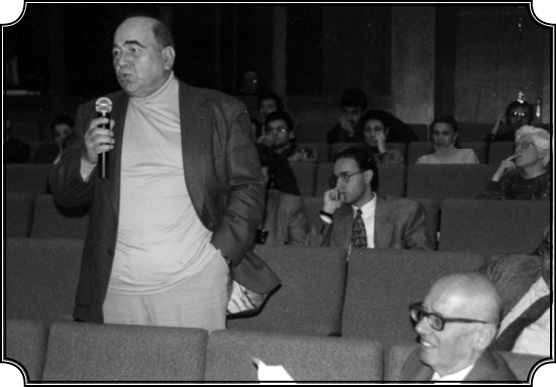
Bilkent Üniversitesi’nde düzenlenen Bosna-Hersek Konferansı’nda (1995).
“Padişah, Allah’ın Ortodokslara Hediyesidir”
Peki, sizin bu konuya yaklaşım farkınız nedir?
Benim ana tezim şuydu ve halen öyledir: Osmanlıların Balkanlara girdiği devirde milli devletten bahsetmek abestir. Milli devlet, nihayet, Fransız İhtilali’nden sonra ortaya çıkmış; ekonomik, sosyal koşulların yarattığı bir tip devlettir. Milli devletin en güçlü yönlerinden birisi etnik kimliğe önemli rol vermesi ve etnik kültür ile etnik kültürün dayandığı kimliği bir yerde milli tarihle birleştirmeye uğraşmasıdır. Fakat bu şekilde ele alınınca birçok yerde de uydurmaya dayanır. Küçücük olayları şişirmeye, lüzumundan fazla önemsemeye, yani saptırmaya yol açıyor “milli tarih” yazımı. Ben, 14-15. yüzyıllarda etnik kimliği belirmiş gruplar olmakla beraber, milli devlet kuracak vaziyete gelmemiş, hanedanlara tabi olmuş topluluklarla milli devleti özdeşleştirmiyorum. Osmanlı Devleti bu etnik kitlelerle değil, hanedanlarla özdeşleşmiştir. Tarihte geleneksel olan buydu. Gerektiğinde o hanedanlarla işbirliği yapmış, onlardan kadın almış, evlenmiş, yani hanedanlık tarifi çerçevesi içinde Osmanlılar da diğer hanedanlıkların yaptığı işi yapmışlar. Fakat halka ilişmemişler, bu kesin. Göçler olmuştur ama bu göçler Osmanlılardan evvel olmuş. En güzel örnek, Saltuk Dede’nin on iki bin çadır Türkmenle, Bizans İmparatorluğu’nun izniyle ve onun desteğiyle Karadeniz’in batısına yerleşmesidir. Babadağ şehrinin kurulması da bunun sonucudur. O zaman Osmanlı yoktu. Onların dışında başka Türk grupları da gene gelmiş yerleşmiş. Zaten Anadolu’da da çok önemli bir Müslüman Türk nüfusu Bizans İmparatorluğu’nun emrindeydi. Nitekim 1071 Malazgirt Muharebesinde Bizans İmparatoru’nun ordusunda Türk birlikleri vardı. Yani Türkler Anadolu’ya ve Rumeli’ye ilk olarak gayet barışçı yollarla girmişlerdir. Ondan sonra gelen göçler, evet yerleşmeler vardır. 15-16. yüzyılda Rumeli’ye yerleşmeler yoğundur ama hiçbir zaman, gelen göçmenler yerli halkı öldürüp onların yerine yerleşmemiştir. Ya eski Bulgar, Slav köylerinin yanına yerleşmiş yahut da yeni köyler yapmışlardır ki elimizdeki tüm vesikalar bu yeni yerleşimlerin Türk ismi taşıdıklarını göstermektedir. Aynı vesikalar, bu Türk köylerinin yanında, öbür köylerin de ayakta kaldıklarını göstermektedir. Onun için bunun gibi “gelip işte Slavları yok etti” gibi iddiaların yeri yok. Şayet yok etseydi, böyle bir siyaset olsaydı, Balkanlar’da Hıristiyan kalmazdı.
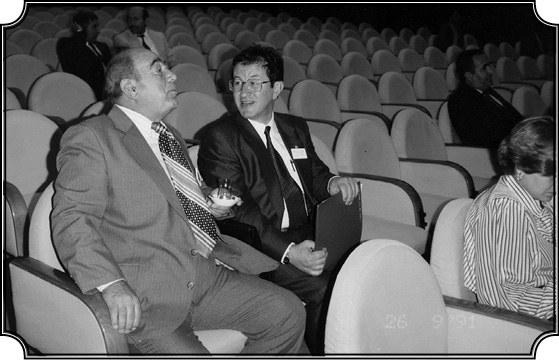
İstanbul Üniversitesi konferans salonunda profesör Osman Sertkaya ile.
Demek ki o dönemde Bizanslılar da tıpkı sonradan Fatih Sultan’ın yapacağı gibi farklı din ve etnik kültürlere barışçı bir şekilde ortak bir tebaa olarak yaklaşmış…
İlk dönemler, yani 11-12. yüzyıllara kadar öyleydi. Osmanlı hoşgörüyü yeni şekilde canlandırmış, nitekim İstanbul’un fethinden sonra Patrikhane eskiden sahip olmadığı yeni salahiyetlerle donatılmış ve arkasında Osmanlı Devleti’nin kuvveti var olduğu halde tüm Ortodoks Hıristiyanların amiri haline getirilmiştir. Hâlbuki Bizans zamanında Patrikhane İmparatorluğun emrindeydi. Zaten Bizans zamanında Ortodoks Kilisesi’nin başı Bazileus’tu, yani imparatordu. Hâlbuki şimdi sultan devletin başıdır, patrik de Ortodoks Kilisesi’nin başıdır. Onun için patrikler yalnız Osmanlı Devleti’nin kadrosunun içinde vazife almakla kalmamışlar, aynı zamanda Osmanlı padişahını öven ana kaynaklar haline gelmiştir ki bunların arasında en güzel misal Kudüs Patriği Anthimos’tur. Konuşmamızın başında söz etmiştim, “Daskalikia” (Eğitimler) adlı kitabında diyor ki: “Padişah, Allah tarafından Ortodoks Hıristiyanlarına gönderilmiş bir hediyedir.” Bunları kimse doğru dürüst incelemiyor, bizimkiler dahil. Şimdi bütün bunları anlattıktan sonra, benim kendi görüşlerime gelelim. Evet, Osmanlı gelmiştir, hâkimiyetini tesis etmiştir ama halkın diline, dinine, hiçbir şeyine ilişmemiş ve beş yüz sene Osmanlı’nın Balkanlar’da yaşaması, bu siyaset sayesinde olmuştur. Bu özgürlük anlayışı, hoşgörü sayesinde yaşanmıştır. O halde milli devletler nasıl ortaya çıkmıştır?